6 Análisis exploratorio de datos
Como no podía ser de otra forma, llegamos al tan ansiado primer capítulo referente a la explotación de datos que, con el conocimiento de los capítulos anteriores, ya habremos recabado y limpiado para continuar con el siguiente paso lógico.
¿A qué se refiere el análisis exploratorio de datos? Para contestar esta pregunta debemos pensar en lo siguiente: Una empresa, negocio u organización gubernamental (casi) siempre tendrá como objetivo el mejorar sus procesos, hacerse más eficiente y buscar áreas de mejora. Para lograr todo lo anterior, la herramienta más poderosa que tienen las organizaciones siempre serán sus datos, por lo que nuestro trabajo será el de encontrar esas áreas de mejora y poder responder todas las preguntas del negocio a partir de la información que tengamos disponible. El AED será el paso inicial, ya que este tendrá como objetivo el dar un primer vistazo a nuestros datos a partir de ciertos cálculos de estadística descriptiva y gráficos generales.
Para poder nosotros crear pronósticos, modelos estadísticos y análisis más complejos, será necesario que conozcamos a una mayor profundidad y exactitud la estructura y contenido de los datos con los que estemos trabajando, ya que esto nos permitirá establecer una lógica que se ajuste mejor al objetivo y resultados que estemos buscando.
Dentro del AED también podemos incluir técnicas más específicas de limpieza de datos y detección de observaciones atípicas. Si te lo estas preguntando, estas técnicas no fueron incluidas en el capítulo anterior debido a que requieren de un análisis previo y más complejo de los datos para poder pasar a la parte de la limpieza, razón por la que se optó por incluir ese tema hasta este capítulo. No debes ser impaciente, las veremos a profundidad a su debido tiempo.
6.1 Estadística descriptiva: resumiendo mis datos
Es probable que hayas tenido clases de estadística básica en las que te hicieron calcular el promedio, la media, la moda, etc, pero ¿por qué la importancia de estas estadísticas? Estos cálculos se conocen como medidas de tendencia central, y nos serán de gran utilidad para entender hacia qué dirección tienden nuestros datos, es decir, el punto (o puntos) de mayor concentración de información y valores esperados. Además de las medidas de tendencia central, también tenemos las medidas de dispersión, como la varianza y desviación estandar, cálculos que nos ayudarán a entender la volatilidad y probabilidad de que el valor medio se cumpla. Iremos revisando cada uno de estos cálculos con detalle más adelante.
Para comenzar a entender nuestros datos y las medidas de tendencia central/dispersión, vamos a usar el siguiente ejemplo: Una tabla con datos históricos del maratón de Reino Unido, disponibles en el siguiente enlace del repositorio oficial del presente libro:
# Datos del UK maraton
path <- "https://raw.githubusercontent.com/Jorge-hercas/
r-para-inteligencia-de-negocios/main/CSV/london_marathon.csv"
datos <- read.csv(path)
datos |>
head(5) Date Year Applicants Accepted Starters Finishers Raised
1 1981-03-29 1981 20000 7747 7055 6255 NA
2 1982-05-09 1982 90000 18059 16350 15116 NA
3 1983-04-17 1983 60000 19735 16500 15793 NA
4 1984-05-13 1984 70000 21142 16992 15675 NA
5 1985-04-21 1985 83000 22274 17500 15873 NA
Official.charity
1 <NA>
2 <NA>
3 <NA>
4 <NA>
5 <NA>Por supuesto, una buena práctica siempre será el visualizar las primeras observaciones de nuestra tabla, ya que con ello nos daremos una mejor idea del tipo de datos con los que vamos a estar trabajando. En este caso, a simple vista podemos darnos cuenta de que la tabla se refiere a los usuarios asociados a maratones en londres, en un rango de tiempo específico. Ahora conocemos el objetivo de la tabla, pero aún no podemos responder preguntas más específicas. Tendremos que hacer uso de estadística descriptiva para conocer más detalles.
6.1.1 Medidas de tendencia central
¿Qué cantidad de aplicantes suele haber en el maratón de londres? Imagina que eres un analista de datos para la organización que realiza los maratones; si tuvieras que calcular una estimación de aplicantes para el siguiente año, ¿qué tan confiable sería este cálculo a partir de un promedio?
Para responder todas estas preguntas, como primer paso vamos a calcular el promedio1:
mean(datos$Applicants, na.rm = T)[1] 133354.3El cual no es más que la suma de las observaciones totales entre la cantidad de observaciones (visto con detalle en el apéndice Simbología matemática) (Wasserman 2004), es decir:
\[ \bar{x}= \frac{\sum x_i}{N} \]
Donde \(\sum x_i\) es la suma de las observaciones y \(N\) es el número de observaciones totales.
Normalmente, para nuestros ejercicios o estudios, vamos a utilizar el promedio muestral, el cual no es más que una muestra aleatoria que obtuvimos de la población total, ya que la muestra deberá darnos una idea del promedio poblacional, al ser el mejor estimador de este último (suponiendo que no tenemos insesgadez en la muestra aleatoria que tomamos).
En primera instancia podríamos pensar que 133354 es la mejor estimación que tenemos sobre participantes, pero esto no necesariamente es así. Un promedio se ve altamente afectado en presencia de valores atípicos, razón por la que será necesario (o al menos recomendable) generar un gráfico de densidad, el cual nos mostrará la distribución de nuestros datos:
library(ggplot2)
options(scipen = 999)
datos |>
ggplot(aes(x = Applicants)) +
geom_density() +
theme_minimal()Warning: Removed 2 rows containing non-finite outside the scale range
(`stat_density()`).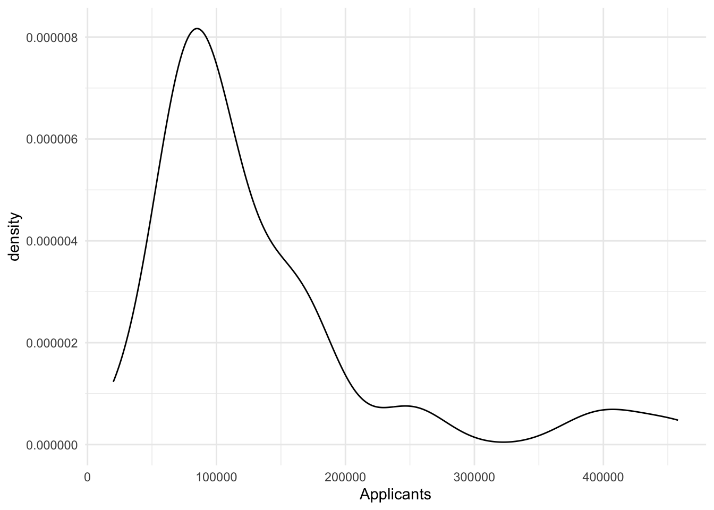
¿Qué nos dice esta gráfica? Rápidamente podemos notar que la mayoría de los datos se ubican en valores cercanos a 100,000, siendo que existen muy pocas observaciones con mayores cantidades de aplicantes. Más adelante sacaremos más conclusiones viendo estos datos como una serie de tiempo, pero por el momento podemos inferir que tenemos una distribución asimétrica positiva en este ejemplo, ¿qué signica esto? Simplemente que la cola de la derecha, donde se encuentran los valores mayores, es mucho más larga que la cola de la izquierda, es decir, las observaciones de mayor valor, a pesar de ser menos comunes que la media, son mucho más frecuentes que las observaciones de menor valor. Ya que sabemos el tipo de distribución que tenemos, también podemos sacar otras conclusiones. Una distribución asimétrica positiva se caracteriza por tener una media mayor a la 2, así como una mediana mayor a la 3, lo que podemos confirmar al hacer el cálculo y una rápida prueba lógica:
mediana <- median(datos$Applicants, na.rm = T)
media <- mean(datos$Applicants, na.rm = T)
media > mediana[1] TRUEDonde la mediana es el valor que se encuentra exactamente en el centro de las observaciones impares (o el promedio de ambas, en observaciones pares), una vez que los datos han sido ordenados de menor a mayor Wasserman (2004)]. Esta puede ser calculada mediante:
\[ M_d =\frac{ n+1}{2} \]
Para un número impar de observaciones, donde \(n\) es el número de observaciones; o bien:
\[ M_d = \frac{ x\frac{n}{2} + x \frac{n}{2}+1 }{2} \]
Para números de observaciones pares, donde \(x_i\) representa las posiciones de los valores centrales, siendo el promedio de ambos.
Como última medida de tendencia central, tenemos a la moda, cálculo que representa simplemente el valor que más se repite dentro de nuestras observaciones. Para esta medida no existe una fórmula en casos de datos no agrupados, ya que no es necesaria, mientras que, para datos agrupados, el cálculo es a través de:
\[ M_{o} = L_{i} + [(\frac{d_1}{d_1 + d_2})(\alpha_i)] \]
Donde \(L_i\) es el límite inferior del intervalo modal, \(d_1\) la diferencia entre entre la frecuencia del intervalo modal del límite inferior (\(f_m - f_{m-1}\)), \(d_2\) la diferencia entre la frencuencia del intervalo modal del límite superior (\(f_m - f_{m+1}\))) y \(\alpha_{i}\) la amplitud del intervalo modal.
Directamente no podemos calcular la moda en R, por lo que podemos recurrir a una tabla de frecuencias y encontrar el conteo máximo de una observación:
# Función para calcular la moda
moda <- function(dato){
frecuencia <- table(dato)
maximo <- max(frecuencia)
moda <- as.numeric(names(frecuencia)[frecuencia == maximo])
return(moda)
}
moda <- moda(datos$Applicants)
mediana > moda[1] TRUE TRUE TRUE TRUE TRUE TRUEAhora bien, porcentualmente hablando, ¿hasta qué valor se encuentran el primer 25% de los datos que tenemos?, ¿y el 50%? Para ello, podemos calcular un cuartil:
quantile(datos$Applicants, na.rm = T) 0% 25% 50% 75% 100%
20000.0 78750.0 94500.0 163231.5 457861.0 Lo que más llama la atención es el hecho de que la distancia entre el primer cuartil y el segundo (58,750) es mucho menor que la distancia entre el último cuartil y el anterior (294,630), lo que nos estaría confirmando que tenemos un sesgo en las observaciones a la derecha (en valores más grandes), ¿a qué nos referimos con sesgo? Básicamente, al hecho de que tenemos pocas observaciones con valores sumamente grandes, lo que influye a que el promedio tienda a incrementar, debido a la presencia de valores atípicos que apenas representan una fracción de la cantidad total de datos. Este concepto lo podemos entender mejor mediante un gráfico de caja, mejor conocido como boxplot. Sin haber realiado el gráfico, desde este punto podemos estar seguros de que será una caja achatada hacia abajo, con muy probablemente datos atípicos en la parte superior. Vamos a realizar el ejercicio a continuación:
datos |>
ggplot(aes(y = Applicants)) +
geom_boxplot() +
theme_minimal()Warning: Removed 2 rows containing non-finite outside the scale range
(`stat_boxplot()`).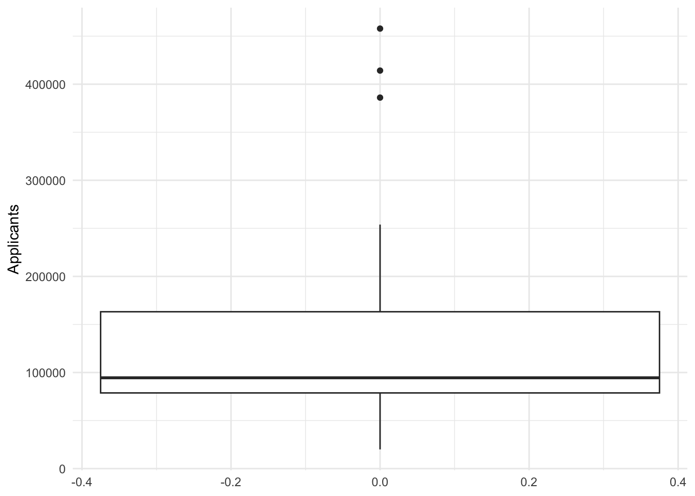
Los gráficos de caja se basan en los cuartiles de nuestros datos, donde los datos que se encuentren dentro de los primeros tres serán representados dentro de la misma. Sabiendo lo anterior, vamos a interpretar este gráfico por partes:
- Caja (box): Primeros tres cuartiles de los datos. En este caso, podemos darnos cuenta que el 75% de la información constituye hasta los 163,231 aplicantes.
- Bigotes (whiskers): Las líneas verticales encima y debajo de la caja, representan los valores mínimo y máximo de la serie de datos. En este caso podemos identificar dos cosas: 1. El valor máximo es mayor al rango intercuartílico (diferencia entre el primer y tercer cuartil \(Q_3 - Q_1\)) por 1.5 (el valor máximo aceptado de los bigotes en un gráfico de caja), mientras que, para el valor mínimo, el valor se queda en 20,000, sin presentar valores atípicos.
- Valores atípicos (outliers): Todos aquellos puntos que se encuentran más allá de los bigotes de la caja (valores mayores al rango intercuartílico por 1.5), pertenecientes al último cuartil. Los va
- Mediana: Línea dentro de la caja, representando el valor que se encuentra exactamente en el centro de los datos (94,500). Lógicamente, al no verse afectada muy la mediana por los valores atípicos, esta se encontrará muy por debajo del gráfico.
Como era de esperarse, dada la distribución asimétrica positiva que vimos anteriormente, nuestro gráfico de caja presenta valores atípicos en el último cuartil, al tener saltos considerables en la cantidad de aplicantes en los últimos años. De hecho, podemos calcular la tasa de crecimiento de los aplicantes por año con una fórmula sencilla:
\[ TC = \frac{(V_1 - V_0)}{V_0}*100 \]
Resultando en:
datos |>
select(Date, Applicants) |>
mutate(
`Tasa de crecimiento` = ((Applicants-lag(Applicants))/lag(Applicants)),
`Tasa de crecimiento` = scales::percent(`Tasa de crecimiento`)
) |>
na.omit() |>
tail(15) Date Applicants Tasa de crecimiento
26 2006-04-23 119000 -9.848%
27 2007-04-22 128000 7.563%
28 2008-04-13 120000 -6.250%
29 2009-04-26 155000 29.167%
30 2010-04-25 163000 5.161%
31 2011-04-17 163926 0.568%
32 2012-04-22 170150 3.797%
33 2013-04-21 167449 -1.587%
34 2014-04-13 169682 1.334%
35 2015-04-26 172888 1.889%
36 2016-04-24 247069 42.907%
37 2017-04-23 253930 2.777%
38 2018-04-22 386050 52.030%
39 2019-04-28 414168 7.284%
40 2020-10-04 457861 10.550%Donde podemos observar que, en los últimos años, la tasa de crecimiento es incluso mayor al 40% en algunos casos.
Regresemos a la distrubición en la cantidad de aplicantes. Utilizamos dos tipos de gráficos separados (de densidad y caja) para entender más claramente la distribución de la información que tenemos. El gráfico de densidad rápidamente nos ayudó a comprender donde se encontraba la mayor cantidad de observaciones, mientras que el gráfico de caja nos ayudó a entender con mayor detalle los cuartiles e identificar los valores atípicos, ¿qué tal si combinamos ambos? Intentemos simplificar y unir ambos gráficos en uno solo mediante las funciones stat_halfeye() para la densidad y stat_boxplot() para la caja, de la librería ggdist, resultando en una visualización mucho más amigable y autoexplicativa (claro que, esto dependerá enteramente del contexto en el que necesitemos presentar nuestra información, así como el público al que va a ir dirigida). Veamos un ejemplo:
library(ggdist)
datos |>
ggplot(aes(y = Applicants)) +
stat_halfeye(
fill = "#c74a4a",adjust = 1,
justification = -.2,.width = 0) +
stat_boxplot(
fill = "#c74a4a",width = 0.12,
alpha = 0.5) +
theme_minimal()Warning: Removed 2 rows containing missing values or values outside the scale range
(`stat_slabinterval()`).Warning: Removed 2 rows containing non-finite outside the scale range
(`stat_boxplot()`).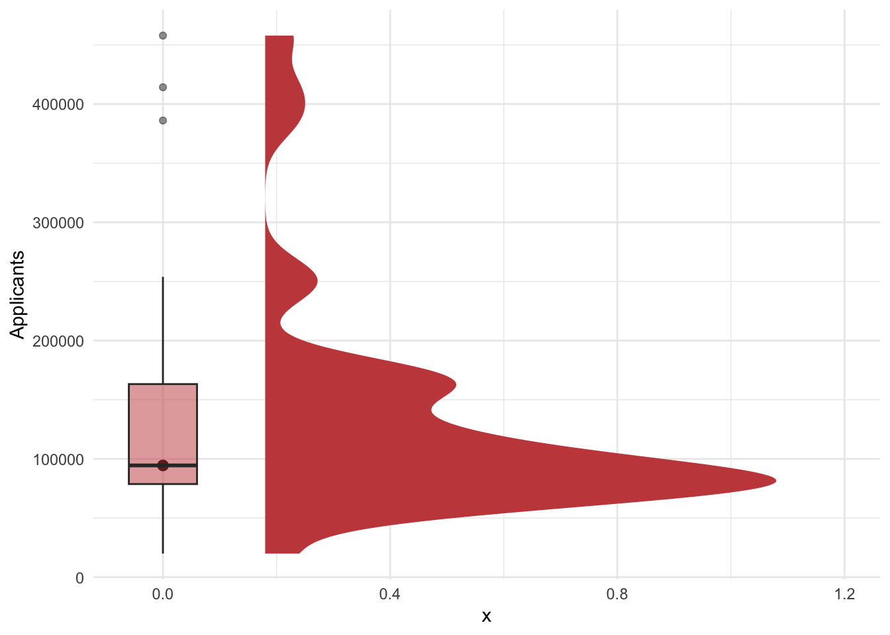
Nótese que, para que esta visualización sea amigable, le di una separación a ambos gráficos y, en el caso del gráfico de caja, disminuí el ancho de este, tratando de mantener una armonía entre ambos.
Hasta ahora hemos obtenido todos estos cálculos (media, mediana, cuartiles, máximo, mínimo) por separado, pero podemos obtener estos datos de manera más directa mediante la función summary():
summary(datos$Applicants) Min. 1st Qu. Median Mean 3rd Qu. Max. NA's
20000 78750 94500 133354 163232 457861 2 Función que además nos ayuda a identificar la cantidad de observaciones perdidas (NA’s).
La función summary() es flexible en cuanto al tipo de datos que introducimos. En este caso lo hicimos con un vector, pero podemos aplicarlo al data frame completo o incluso con modelos estadísticos y de series de tiempo (que analizaremos más adelante), lo que nos va a retornar el mismo resumen para cada columna:
summary(datos) Date Year Applicants Accepted
Length:42 Min. :1981 Min. : 20000 Min. : 77
Class :character 1st Qu.:1991 1st Qu.: 78750 1st Qu.:33057
Mode :character Median :2002 Median : 94500 Median :43056
Mean :2002 Mean :133354 Mean :39269
3rd Qu.:2012 3rd Qu.:163232 3rd Qu.:49903
Max. :2022 Max. :457861 Max. :56398
NA's :2 NA's :2
Starters Finishers Raised Official.charity
Min. : 77 Min. : 61 Min. :46.50 Length:42
1st Qu.:24488 1st Qu.:23252 1st Qu.:50.60 Class :character
Median :31369 Median :30584 Median :53.00 Mode :character
Mean :28886 Mean :28145 Mean :54.38
3rd Qu.:35671 3rd Qu.:35326 3rd Qu.:59.40
Max. :42906 Max. :42549 Max. :66.40
NA's :2 NA's :2 NA's :29 Devolviendo únicamente la amplitud de valores en columnas no numéricas.
Evidentemente pudimos haber comenzado con esta función desde el principio de esta sección, sin embargo, mi interés primordial era que tuvieras un conocimiento más profundo de cada cálculo por separado, antes de comenzar a simplificar código.
6.1.2 Medidas de dispersión
¿Qué tan confiable sería calcular una estimación a partir del promedio? Ya que conocemos las medidas de tendencia central, es momento de comenzar a analizar la dispersión de los datos y entender qué tan volátiles son. Para calcular esta variabilidad en los datos, vamos a hacer uso de la varianza, la desviación estandar y la kurtosis (Gardener 2012). La varianza es calculada con la ecuación:
\[ S^2 =\frac{\sum_{i=1}^{N} (x_i - \bar{x})^2}{N} \]
Donde \(x_i\) son las observaciones individuales, \(\bar{x}\) el promedio de las observaciones y \(N\) el total de observaciones. Por su parte, la desviación estandar está denotada como la raíz de la varianza:
\[ S =\sqrt{\frac{\sum_{i=1}^{N} (x_i - \bar{x})^2}{N}} \]
O bien, de forma simplificada:
\[ S =\sqrt{S^2} \]
Por último, la curtosis (kurtosis) es calculada por:
\[ K = \frac{N(N+1)}{(N-1)(N-2)(N-3)} \sum \left(\frac{(x_i - \bar{x})^4}{S^4}\right) - \frac{3(N-1)^2}{(N-2)(N-3)} \]
Donde \(N\) es el número de observaciones, \(\bar{x}\) el promedio de los datos, \(x_i\) las observaciones individuales y \(S^4\) la desviación estandar a la cuarta.
Comencemos por hacer el cálculo de la varianza de los datos que estamos trabajando, usando la función var():
varianza <- var(datos$Applicants, na.rm = T)
varianza[1] 9230874131En primera instancia, podemos notar que es un número excesivamente grande, lo que nos dice que la dispersión en nuestros datos es súmamente considerable, pero ¿qué tan grande? Para ello, vamos a calcular la desviación estandar:
# A partir de la varianza
sqrt(varianza)[1] 96077.44# Método directo
sd(datos$Applicants, na.rm = T)[1] 96077.44La desviación estandar nos estaría diciendo que, en promedio, los valores de este conjunto de datos se encontrarían a una distancia de 96077.44 de la media, lo que es una interpretación menos ambigua que la dada únicamente por la varianza.
Directamente, no tenemos una función en R para calcular la curtosis, pero podemos hacer uso de la función kurtosis() de la librería moments, tal que:
library(moments)
kurtosis(datos$Applicants, na.rm = T)[1] 3.49811
attr(,"method")
[1] "excess"¿Cómo interpretamos este valor? Simplemente, cuando tenemos una distribución con una curva muy alta, la curtosis tenderá a ser positiva, mientras que en distribuciones con curvas más bajas (donde los datos son muy homogeneos) la curtosis tenderá a ser negativa. En este caso, como ya lo hemos comprobado mediante un gráfico de densidad, podemos darnos cuenta que tenemos una curva muy alta.
Vamos ahora a dar esta explicación en términos más simples. El hecho de que una curva de distribución sea más alta (y, por ende, una curtosis positiva) implica que la mayoría de las observaciones se encontrarán mucho más cerca del valor medio, mientras que por el contrario, con curvas más bajas (y curtosis negativa) obviamente tendremos observaciones mucho más alejadas del valor medio. Hagamos un rápido ejercicio gráfico para comprobar lo anteriormente dicho; Supongamos los siguientes vectores, los cuales tienen en ambos casos un valor medio igual a 100:
set.seed(123)
# Menor desviación estandar
head(rnorm(10000, mean = 100, sd = 10),10) [1] 94.39524 97.69823 115.58708 100.70508 101.29288 117.15065 104.60916
[8] 87.34939 93.13147 95.54338# Menor desviación estandar
head(rnorm(10000, mean = 100, sd = 50),10) [1] 218.53626 91.65940 146.34807 71.59241 111.25450 156.59930 169.02408
[8] 88.35983 19.96783 85.08154En este par de ejemplos puedes darte cuenta de que, aunque la media sea la misma, la volatilidad en las observaciones es notable. Si graficamos ambas curvas de densidad, podremos comprobar lo anterior:
set.seed(123)
# Datos
datos_distribucion_test <- tibble(
value = c(rnorm(10000, mean = 100, sd = 10),
rnorm(10000, mean = 100, sd = 50)),
sd_group = factor(rep(c("SD = 10", "SD = 50"), each = 10000))
)
# Gráfico de densidad
datos_distribucion_test |>
ggplot(aes(x = value, fill = sd_group)) +
geom_density(alpha = 0.8) +
geom_vline(xintercept = 100, linetype = "dashed") +
scale_fill_manual(values = c("SD = 10" = "#c74a4a", "SD = 50" = "#4167ba")) +
labs(x = NULL, y = NULL, fill = NULL) +
theme_minimal(base_size = 14) 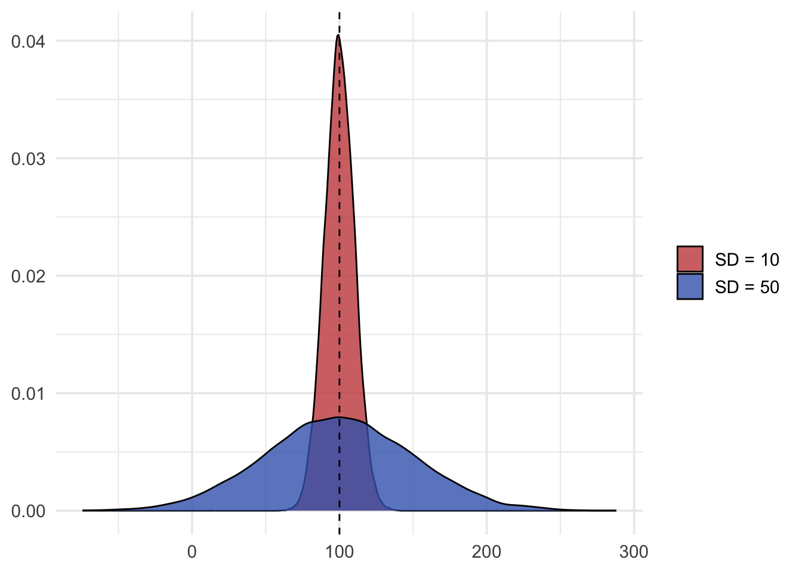
Y, lógicamente, podemos validarlo de nuevo a través de la curtosis:
# Distribución con un pico más alto
kurtosis(datos_distribucion_test$value[datos_distribucion_test$sd_group
== "SD = 10"])[1] 0.01073845
attr(,"method")
[1] "excess"# Distribución con un menor pico
kurtosis(datos_distribucion_test$value[datos_distribucion_test$sd_group
== "SD = 50"])[1] -0.02398414
attr(,"method")
[1] "excess"A nivel general, basados en los valores que nos puede devolver la curtosis, podemos encontrarnos con los siguientes tres casos:
| Tipo | Valor esperado | Explicación |
|---|---|---|
| Mesocúrtica | \(=3\) | Distribución normal |
| Leptocúrtica | \(>3\) | Curva muy estrecha y alta. Al tener datos más cercanos a la media, es posible tener más outliers |
| Platicúrtica | \(<3\) | Curva más aplanada. Al tener datos más dispersos, es menos probable tener outliers |
6.2 Distribución de los datos y supuestos estadísticos
Hasta ahora ya hemos analizado algunas medidas para entender mejor la naturaleza de nuestros datos, así como su variabilidad dentro de ciertos rangos, sin embargo, por lo que ahora nos vamos a enfocar en la forma en que se distribuyen los datos y los supuestos estadísticos fundamentales que permiten aplicar ciertos métodos de inferencia. Esta sección es especialmente importante, ya que entender los tipos de distribución a los que nos enfrentaremos en el futuro nos ayudará a poder utilizar los métodos y pruebas correctas. Existen múltiples procedimientos estadísticos que basan la veracidad de sus resultados en estos supuestos, por lo que si no se cumplen, los resultados pueden ser inválidos.
Para esta sección, vamos a comenzar por entender cómo se comporta una distribución normal, qué se espera de ella, y después analizaremos otros tipos de distribuciones y sus respectivas diferencias entre ellas.
6.2.1 Distribuciones normales
Si tomaste clases de de estadística anteriormente, seguramente ya tienes clara la idea de que una distribución normal (o distribución gaussiana, como se conoce coloquialmente), es aquella que cumple con los siguientes supuestos:
Perfectamente simétrica en ambas colas, siendo que sus valores se distribuyen de forma simétrica.
Las medidas de tendencia central serán las mismas, es decir: Media = Mediana = Moda.
Forma característica de campana, donde generalmente a una desviación estandar podremos encontrar el 68% de los valores, a dos desviaciones estandar se encontrarán el 95% de los valores y, a tres desviaciones estandar, se encontrarán aproximadamente el 99.7% de los valores totales (la regla 68-95-99.7).
Las colas de la curva de distribución se acercan al eje horizontal, aunque sin tocarlo jamás, lo que implica que pueden existir valores extremos (no demasiados).
La función de densidad de probabilidad4 es:
\[ f(x) = \frac{1}{\sqrt{2\pi\sigma^2}} \, e^{ -\frac{(x - \mu)^2}{2\sigma^2} } \]
Donde \(\mu\) es la media de la distribución, \(\sigma^2\) la varianza, \(\sigma\) la desviación estandar, \(e\) la constante de Euler, y \(x\) pertenece a los números reales (\(x \in \mathbb{R}\)) (DeGroot and Schervish 2012).
Conforme la muestra sea más grande, la normalidad en la distribución (suponiendo que la población tiene una distribución normal) se asemejará más a esta forma gaussiana, por ejemplo: Vamos a crear esta muestra aleatoria:
set.seed(150)
# Tabla con muestra aleatoria
datos_distribucion_test <- tibble(
value = rnorm(50, mean = 100)
)
# Gráfico de densidad
datos_distribucion_test |>
ggplot(aes(x = value)) +
geom_density(alpha = 0.8) +
labs(x = NULL, y = NULL, fill = NULL) +
theme_minimal(base_size = 14) 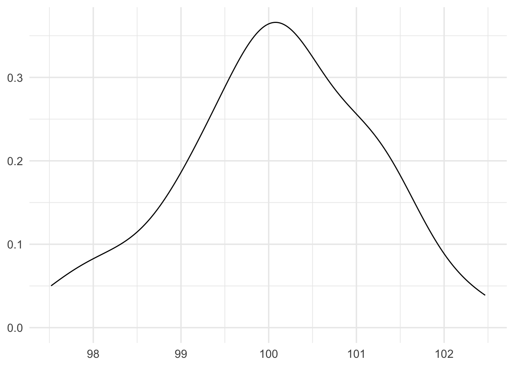
Por lo tanto, mientras vamos aumentando las observaciones, podremos notar que esta forma se va haciendo cada vez más exacta:
set.seed(150)
# Tabla con muestra aleatoria
datos_distribucion_test <- tibble(
value = rnorm(200000, mean = 100)
)
# Gráfico de densidad
datos_distribucion_test |>
ggplot(aes(x = value)) +
geom_density(alpha = 0.8) +
labs(x = NULL, y = NULL, fill = NULL) +
theme_minimal(base_size = 14) 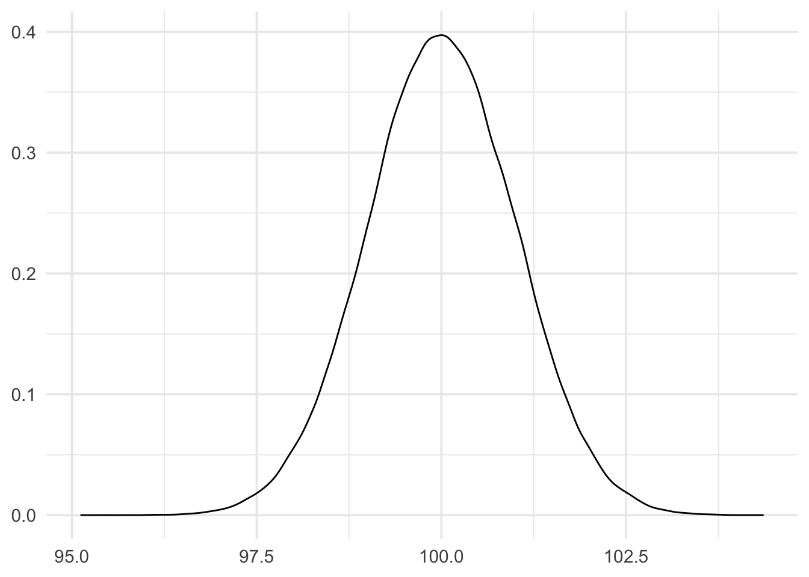
Por cierto, hasta ahora hemos visualizado la distribución mediante un gráfico de densidad, pero también podemos hacerlo a partir de un histograma, por ejemplo:
# Histograma
datos_distribucion_test |>
ggplot(aes(x = value)) +
geom_histogram(alpha = 0.8) +
labs(x = NULL, y = NULL, fill = NULL) +
theme_minimal(base_size = 14) `stat_bin()` using `bins = 30`. Pick better value with `binwidth`.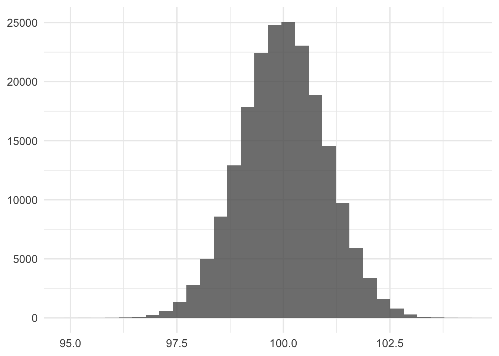
El cual agrupa los datos por intervalos, lo que nos permite ver frecuencias absoultas/relativas, siendo algo más intuitivo que un gráfico de densidad (a mi consideración personal).
6.2.1.1 Teorema del límite central
El ejemplo que vimos anteriormente nos puede ayudar a entender mejor el teorema del límite central, que nos dice que, bajo ciertos escenarios, si tomamos suficientes muestras aleatorias y calculamos su promedio, este tenderá a una distribución normal, incluso en poblaciones con distribuciones no normales. Esto no implica que los datos originales se vuelvan normales, si no que únicamente el promedio de muchas muestras tenderá a serlo (Feller 1968). Supongamos una secuencia de variables aleatorias:
\[ X_1, X_2, ...,X_n \]
Con una media \(\mu = \mathbb{E}[X_i]\), y una varianza finita \(\sigma^{2} = Var(X_i)\), donde el promedio de la muestra, tal como vimos anteriormente, equivale a:
\[ \overline{X}_n = \frac{1}{n} \sum^n_{i = 1} X_i \]
Lo que queremos saber es qué ocurrirá con la distribución de \(\overline{X}_n\), conforme \(n\) tiende a infinito (\(n \rightarrow \infty\) ). Es aquí donde entra el teorema del límite central, que nos dice que la variable aleatoria estandarizada converge en distribución a una normal estándar, lo que dicho en términos más simples, implica que si tomamos muchas muestras grandes y calculamos su promedio, esos promedios, al ser transformados de forma adecuada (restando la media y dividiendo entre la desviación estándar), se comportarán como si vinieran de una distribución normal estándar. Matemáticamente:
\[ \overline{X} \rightarrow N (\mu, \frac{\sigma^{2}}{n}) \] Donde:
\(\overline{X}\) es la media muestral.
\(\mu\) es la media poblacional.
\(\sigma^{2}\) es la varianza poblacional.
\(n\) es el tamaño de la muestra.
Este resultado es fundamental para la estadística inferencial, ya que nos permite aplicar métodos basados en la distribución normal incluso cuando la distribución original de los datos no es normal. Lo que importa no es la forma de los datos, sino la distribución de sus promedios, que será aproximadamente normal cumpliendo las siguientes condiciones:
La no existencia de autocorrelación en los datos, es decir, que las observaciones de la muestra sean independientes entre si, evitando sesgos en la información.
Aleatoriedad en la muestra, es decir, la selección de las muestras que tomemos para calcular el promedio debe ser completamente al azar.
Un mínimo de elementos dentro de cada muestra. En casos con distribuciones no tan sesgadas basta con que cada muestra tenga \(\ge 30\) elementos, aunque en situaciones donde la distribución poblacional tiene valores muy atípicos, se suele requerir el obtener muestras más grandes, o más muestras.
Varianza finita, es decir, que la dispersión de la población tenga un límite definido.
Aunque no lo parezca, entender el TLC es esencialmente importante, ya que gracias a ello podemos construir intervalos de confianza para la media poblacional, generar pruebas de hipótesis que se basan en la distribución normal o \(t\), así como aplicar modelos estadísticos como regresiones, (temas que veremos más adelante) que requieren como supuesto que la distribución sea normal para que sus resultados sean válidos, por lo que tomando muestras aleatorias, podemos lograr esto.
Y, por supuesto, ahora vamos a ver un ejemplo de esto en R, ya que estamos en un libro enfocado en ese lenguaje; sería un poco absurdo omitirlo.
Para este ejercicio, vamos a usar el siguiente dataset sobre tiempo de estadía en el hospital. Comencemos por leer los datos:
# Ruta temporal para descargar el archivo
temp <- tempfile()
download.file("https://raw.githubusercontent.com/Jorge-hercas/
r-para-inteligencia-de-negocios/refs/heads/
main/CSV/diabetic_data.csv.zip", temp)
datos_hosp <- read.csv(unz(temp, "diabetic_data.csv")) |>
as_tibble()
datos_hosp |>
head()# A tibble: 6 × 51
X encounter_id patient_nbr race gender age weight admission_type_id
<int> <int> <int> <chr> <chr> <chr> <chr> <int>
1 1 2278392 8222157 Caucasian Female [0-1… ? 6
2 2 149190 55629189 Caucasian Female [10-… ? 1
3 3 64410 86047875 AfricanA… Female [20-… ? 1
4 4 500364 82442376 Caucasian Male [30-… ? 1
5 5 16680 42519267 Caucasian Male [40-… ? 1
6 6 35754 82637451 Caucasian Male [50-… ? 2
# ℹ 43 more variables: discharge_disposition_id <int>,
# admission_source_id <int>, time_in_hospital <int>, payer_code <chr>,
# medical_specialty <chr>, num_lab_procedures <int>, num_procedures <int>,
# num_medications <int>, number_outpatient <int>, number_emergency <int>,
# number_inpatient <int>, diag_1 <chr>, diag_2 <chr>, diag_3 <chr>,
# number_diagnoses <int>, max_glu_serum <chr>, A1Cresult <chr>,
# metformin <chr>, repaglinide <chr>, nateglinide <chr>, …En este caso en particular, creamos una ruta temporal para poder descargar el archivo antes de leerlo, ya que al ser considerablemente grande se encuentra comprimido.
Vamos ahora a usar la columna time_in_hospital para visualizar la distribución del tiempo en hospitales:
datos_hosp |>
ggplot(aes(x = time_in_hospital)) +
geom_histogram(alpha = 0.8) +
labs(x = NULL, y = NULL, fill = NULL) +
theme_minimal(base_size = 14) `stat_bin()` using `bins = 30`. Pick better value with `binwidth`.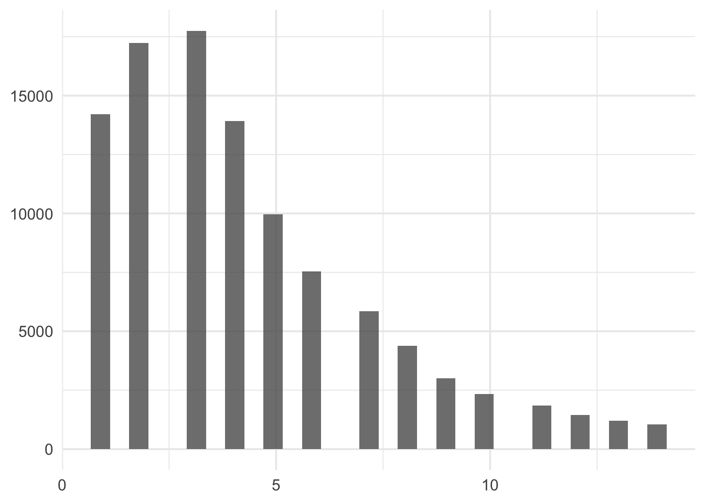
A simple vista, podemos observar que esta no es una distribución normal. En primer lugar, presenta un sesgo positivo o asimetría a la derecha, lo que significa que la mayor parte de los datos se concentra en los valores bajos, aproximadamente entre 1 y 5. Sin embargo, aún se observan valores extremos hacia la derecha del eje (valores más altos), aunque con menor frecuencia (en la siguiente sección veremos otros tipos de distribuciones no normales). Ya que confirmamos que no es una distribución normal, ahora vamos a poner en práctica el TLC, tomando muestras aleatorias de la columna time_in_hospital para calcular sus respectivos promedios muestrales:
# Número de muestras
n_muestras <- 1000
# Tamaño de la muestra
tam_muestra <- 30
# Cálculo de las medias muestrales
sample_means <- replicate(n_muestras,
mean(sample(datos_hosp$time_in_hospital,
tam_muestra, replace = TRUE)))
# Vista rápida de los datos
head(sample_means, 50) [1] 4.433333 4.333333 4.533333 4.433333 4.500000 4.566667 5.100000 5.166667
[9] 5.100000 4.400000 4.500000 4.866667 4.633333 4.766667 4.933333 4.433333
[17] 4.100000 5.033333 4.333333 3.966667 5.500000 3.900000 4.266667 5.133333
[25] 4.766667 4.466667 3.500000 3.566667 4.600000 4.600000 4.033333 3.833333
[33] 4.633333 5.233333 3.700000 4.033333 4.200000 4.800000 4.400000 4.766667
[41] 3.900000 4.300000 3.866667 4.466667 4.433333 3.500000 4.900000 4.766667
[49] 4.800000 5.266667Ahora, vamos a generar nuevamente el histograma:
# Conversión a tabla
df_medias <- tibble(media = sample_means)
# Gráfico
df_medias |>
ggplot(aes(x = media)) +
geom_histogram(bins = 50,
color = "white") +
labs(x = NULL, y = NULL, fill = NULL) +
theme_minimal(base_size = 14)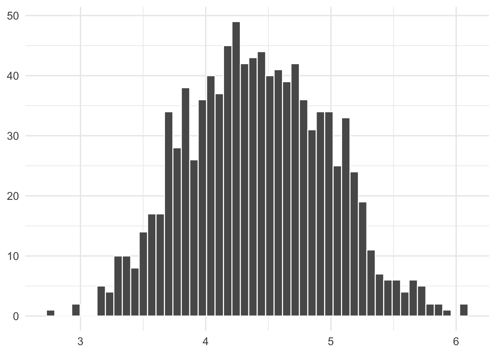
Como puedes darte cuenta, en el gráfico Figure 6.1, ahora aproximamos una distribución normal a partir de los promedios muestrales aleatorios. Con este sencillo ejercicio pudimos darnos una idea más clara de este teorema.
6.2.2 Distribuciones no normales
A pesar de que la “normalidad” en los ejercicios en los que solemos trabajar sean las distribuciones normales (valga la redundancia), este no siempre será el caso. En muchos contextos reales, los datos que analizamos no siguen una forma simétrica ni en forma gaussiana, y esto tiene importantes implicaciones para el análisis estadístico (que analizaremos más adelante).
Existen múltiples situaciones en las que las distribuciones pueden presentar asimetrías, colas pesadas, concentraciones atípicas o incluso formas completamente irregulares. Por ejemplo, variables como el ingreso, el tiempo hasta un evento, el número de fallos, etc, suelen tener distribuciones sesgadas o discretas que distan mucho del comportamiento normal teórico.
En esta sección analizaremos algunos de estos comportamientos, sus implicaciones y sus respectivas características, para poder entender de mejor manera cómo trabajar cuando nos enfrentemos a cada uno de estos casos.
Ahora bien, ¿Con qué tipo de distribuciones nos podemos encontrar? Podemos seccionarlas por el tipo de valores con los que nos encontraremos en cada caso a continuación.
6.2.2.1 Distribuciones discretas
Este tipo de distribuciones de probabilidad se utilizan para describir fenómenos donde las variables aleatorias solo pueden tomar valores específicos, es decir, cuando el conjunto de posibles resultados no es infinito en densidad (aunque puede ser infinito en extensión) (DeGroot and Schervish 2012). Dentro de las distribuciones discretas podemos encontrar principalmente:
6.2.2.1.1 Distribución Binomial
Este tipo de distribución es utilizada para modelar el número de éxitos en una serie de ensayos independientes, en los que cada ensayo tiene únicamente dos posibles resultados mutuamente excluyentes: éxito o fracaso. Al estar centrada en estos dos resultados dicotómicos, la variable aleatoria que se analiza solo puede tomar valores enteros entre 0 y \(n\), donde \(n\) es el número total de ensayos realizados. Entre los ejemplos más comunes de fenómenos que se pueden modelar con esta distribución se encuentran el lanzamiento de una moneda justa, donde los resultados posibles son cara o cruz; ensayos clínicos, donde un paciente puede responder o no responder a un tratamiento, entre otros más.
Ahora, para que una variable aleatoria siga una distribución de tipo binomial, estas tienen que seguir las siguientes características:
Tenemos un número de ensayos definido (\(n\)).
Solo existen dos posibles resultados.
No hay dependencia entre si para los ensayos.
La probabilidad de éxito o fracaso \(p\) es la misma en cada ensayo.
Respectivamente, la función de masa de probabilidad5 equivale a:
\[ P(X = x) = \binom{n}{x} p^x (1 - p)^{n - x} \]
Donde \(X\) es el número de éxitos en \(n\) ensayos,\(p^x\) la probabilidad de obtener \(x\) éxitos, \((1 - p)^{n - x}\) la probabilidad de obtener \(n-x\) fracasos, y \(\binom{n}{x}\) el número de formas de elegir \(x\) éxitos entre \(n\) ensayos, equivalente también a \(\frac{n!}{x!(n-x)!}\) (Devore 2016), por lo que también podemos escribir la FMP como:
\[ P(X = x) = \left( \frac{n!}{x!(n - x)!} \right) p^x (1 - p)^{n - x} \]
En R, podemos rápidamente simular un ejercicio de distribución binomial para una muestra aleatoria de dos valores, por ejemplo, 0 y 1:
# Muestra aleatoria de dos valores
set.seed(123)
muestra_bin <- sample(c(0,1), 1000, replace = TRUE)
head(muestra_bin, 10) [1] 0 0 0 1 0 1 1 1 0 0Vamos ahora a replicar el experimento diez mil veces:
# Replicación del experimento y suma de casos de éxito (1) por caso.
set.seed(123)
repeticiones <- replicate(10000, sum(sample(c(1,0), 100, replace = TRUE)))
head(repeticiones, 10) [1] 57 46 51 57 50 43 47 51 56 48Finalmente, vamos a generar un histograma, donde veremos la distribución de las probabilidades de éxito:
repeticiones <- tibble(muestra = repeticiones)
# Gráfico
repeticiones |>
ggplot(aes(x = muestra)) +
geom_histogram(bins = 50,
color = "white") +
labs(x = NULL, y = NULL, fill = NULL) +
theme_minimal(base_size = 14)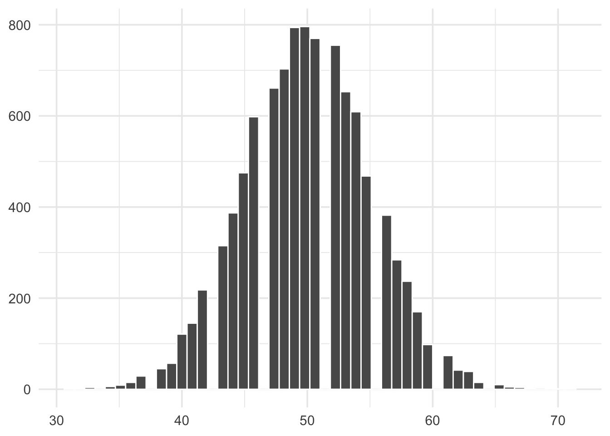
En este caso, cada barra del histograma representa la frecuencia con la que se observa un número específico de éxitos en una serie de ensayos binomiales, a partir de la replicación que hicimos de las diez mil simulaciones.
6.2.2.1.2 Distribución de Poisson
Este tipo de distribución discreta es utilizada para modelar el número de veces que ocurre un evento en un intervalo fijo de tiempo, espacio, área o volumen, bajo la condición de que dichos eventos ocurran de manera aleatoria, con una tasa constante y de forma independiente entre sí. A diferencia de otras distribuciones que requieren un número de ensayos definidos, en la distribución de Poisson no se conoce el número de oportunidades, sino que se observa la frecuencia de aparición de un fenómeno. Por lo tanto, la variable aleatoria que se analiza puede tomar cualquier valor entero no negativo: \(0,1,...,n\) (@ Poisson 1837)
Entre los ejemplos más comunes de fenómenos que se pueden modelar con esta distribución se encuentran el número de llamadas que recibe una central telefónica por hora, la cantidad de errores tipográficos en una página, los accidentes de tránsito en una intersección durante un día, entre otros.
Ahora, para que una variable aleatoria siga una distribución de tipo Poisson, esta debe cumplir con las siguientes características:
Los eventos ocurren de forma independiente entre sí.
La tasa promedio de frecuencias en los eventos \(\lambda\) es constante en el tiempo o espacio observado.
No es posible que ocurran dos o más eventos al mismo tiempo exacto.
Los eventos se producen de forma aleatoria y aislada, sin un patrón definido.
Para este tipo de distribución, la función de masa de probabilidad equivale a:
\[ P(X = k) = \frac{\lambda^k e^{-\lambda}}{k!} \]
Donde \(X\) la variable aleatoria, \(k\) es un número entero \(1,2,...,n\), \(\lambda > 0\) es el número esperado de eventos en el intervalo (la media de la distribución), y \(e\) es la constante de Euler.
Vamos ahora a simular una distribución de Poisson en R (y su respectivo histograma) usando el parámetro \(\lambda\), que representa la tasa promedio de ocurrencia. Por ejemplo, si en promedio ocurren 4 eventos por intervalo:
# Muestra aleatoria de una distribución de Poisson con lambda = 4
set.seed(123)
muestra_pois <- rpois(1000, lambda = 4)
head(muestra_pois, 10) [1] 3 6 3 6 7 1 4 7 4 4Vamos ahora a replicar el experimento diez mil veces para observar cómo se comporta la suma de eventos en múltiples escenarios:
# Replicación del experimento: suma de eventos Poisson independientes
set.seed(123)
repeticiones <- replicate(10000, sum(rpois(100, lambda = 4)))
head(repeticiones, 10) [1] 409 410 390 402 398 408 398 391 387 393Finalmente, vamos a generar un histograma, donde podremos observar cómo se distribuyen los resultados acumulados:
repeticiones <- tibble(muestra = repeticiones)
# Gráfico
repeticiones |>
ggplot(aes(x = muestra)) +
geom_histogram(bins = 50,
color = "white") +
labs(x = NULL, y = NULL, fill = NULL) +
# Valor de Lambda
annotate("text",
x = Inf, y = Inf,
label = expression(lambda == 4),
hjust = 1.1, vjust = 1.5,
size = 5) +
theme_minimal(base_size = 14)Warning in is.na(x): is.na() applied to non-(list or vector) of type
'expression'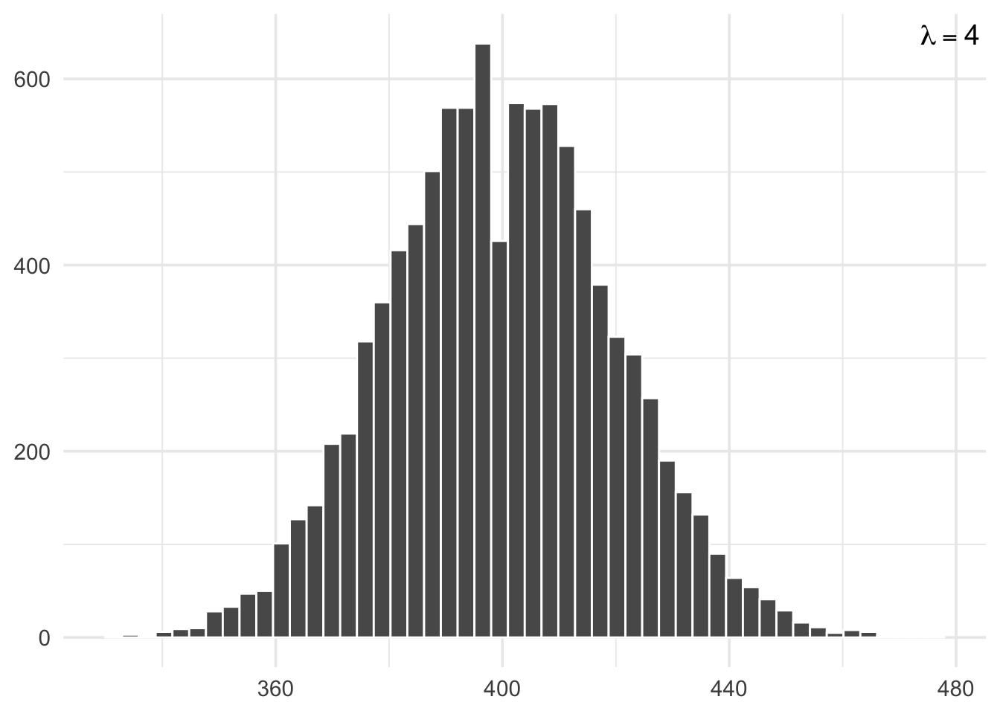
Este histograma muestra la forma que puede adoptar una distribución de Poisson cuando el parámetro \(\lambda\) es considerablemente grande. Como puedes ver, cada barra representa la frecuencia con la que se obtuvo un determinado número de eventos.
6.2.2.1.3 Distribución Geométrica
Este tipo de distribución discreta se utiliza para modelar el número de intentos necesarios hasta que ocurre el primer éxito en una secuencia de ensayos de Bernoulli independientes, donde en cada ensayo solo hay dos posibles resultados: éxito o fracaso. A diferencia de otras distribuciones que modelan la cantidad de éxitos en un número fijo de intentos, la distribución geométrica se enfoca en cuántos fracasos ocurren antes del primer éxito, o bien, en qué intento se obtiene ese primer éxito (@ Wasserman 2004).
La variable aleatoria que se estudia en este caso puede tomar valores enteros positivos: \(1,2,3,...\), si se cuenta el número del intento donde se logra el primer éxito, o valores \(0,1,2,...\) si se cuentan los fracasos previos al éxito.
Entre los ejemplos más comunes que se pueden modelar con una distribución geométrica están: el número de veces que una persona lanza una moneda hasta que obtiene cara por primera vez, la cantidad de correos que una persona revisa hasta encontrar uno importante, o la cantidad de veces que se necesita ejecutar un proceso hasta que sea exitoso.
Para que una variable aleatoria siga una distribución geométrica, se deben cumplir las siguientes condiciones:
Cada ensayo es independiente del anterior.
En cada ensayo, la probabilidad de éxito \(p\) permanece constante.
Solo hay dos posibles resultados por ensayo: éxito o fracaso.
El interés está en contar hasta que ocurra el primer éxito.
Para este tipo de distribución, su función de masa de probabilidad es:
\[ P(X=k) = (1 - p)^{k-1}p \]
Donde \(X\) es la variable aleatoria que representa el número de ensayos hasta el primer éxito, \(k\) es un número entero positivo \(1,2,3,...\), y \(p\) es la probabilidad de éxito en un solo intento.
Como no puede ser de otra manera, vamos ahora a simular una distribución geométrica en R (y su respectivo histograma) usando el parámetro \(p\), que representa la probabilidad de éxito en cada intento. Por ejemplo, si la probabilidad de éxito es 0.3 en cada ensayo:
# Muestra aleatoria de una distribución geométrica con p = 0.3
set.seed(123)
muestra_geom <- rgeom(1000, prob = 0.3)
head(muestra_geom, 10) [1] 3 5 0 0 1 10 6 1 1 1Recordemos que rgeom() devuelve el número de fracasos antes del primer éxito, por lo que los valores comienzan en 0. Ahora, vamos a replicar este experimento diez mil veces para observar cómo se comporta la suma total de fracasos en múltiples escenarios:
# Replicación del experimento: suma de fracasos antes del primer éxito
set.seed(123)
repeticiones <- replicate(10000, sum(rgeom(100, prob = 0.3)))
head(repeticiones, 10) [1] 200 186 200 196 295 229 234 222 243 224Finalmente, vamos a generar un histograma para visualizar cómo se distribuyen las sumas acumuladas de fracasos en múltiples simulaciones:
repeticiones <- tibble(muestra = repeticiones)
# Gráfico
repeticiones |>
ggplot(aes(x = muestra)) +
geom_histogram(bins = 50,
color = "white") +
labs(x = NULL, y = NULL, fill = NULL) +
# Valor de p
annotate("text",
x = Inf, y = Inf,
label = expression(p == 0.3),
hjust = 1.1, vjust = 1.5,
size = 5) +
theme_minimal(base_size = 14)Warning in is.na(x): is.na() applied to non-(list or vector) of type
'expression'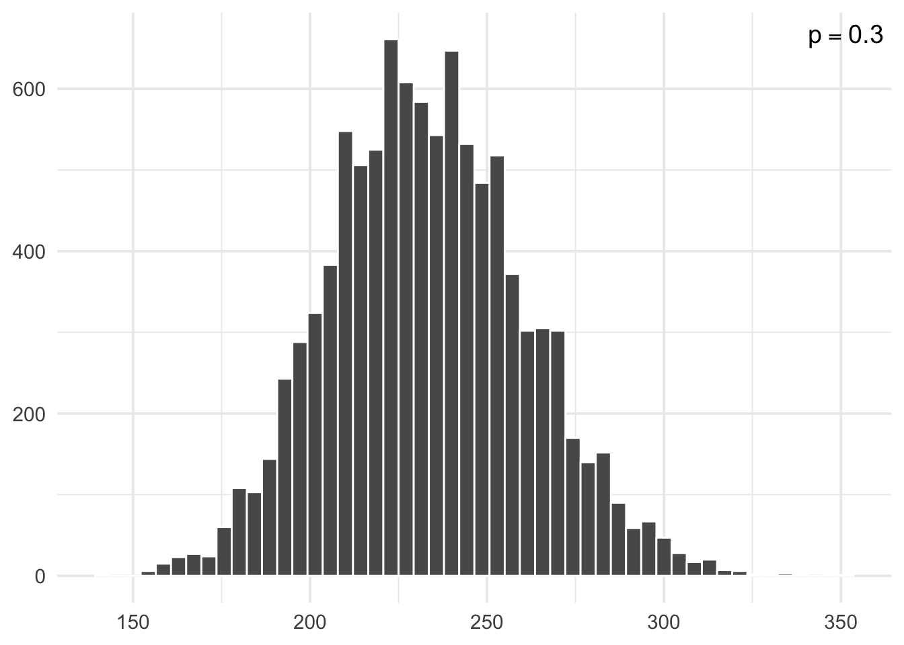
Para este histograma, cada barra muestra cuántas veces se obtuvo una suma determinada de fracasos antes del primer éxito en un conjunto de 100 repeticiones del experimento geométrico. Como puedes ver, la media de probabilidad para obtener 100 éxitos es de obtener 230 fracasos aproximadamente.
Hasta ahora hemos visto que, a pesar de ser distribuciones discretas, cuando realizamos un gran número de simulaciones, el histograma resultante nos muestra una forma que se asemeja bastante a una distribución normal. Esta transformación en la forma de la distribución no es casual ni un simple artefacto visual, sino que responde al principio del Teorema del Límite Central. La dispersión de los datos se organiza de manera simétrica alrededor de una media, y la forma de campana característica de la distribución normal comienza a emerger, conforme vamos aumentando las simulaciones.
6.2.2.1.4 Otras distribuciones discretas
Además de las distribuciones discretas que vimos hasta ahora (Binomial, Poisson y Geométrica), también éxisten otras distribuciones para usos más particulares: Binomial Negativa, Hipergeométrica, Bernoulli y Uniforme Discreta (Wasserman 2004), las cuales no vamos a ahondar con detalle por ahora, ya que quedarán como ejercicio para el lector, pero, vamos rápidamente a mostrar la función en R para dichas distribuciones:
- Binomial Negativa
# Función y ejemplo de uso
f <- rnbinom(1000, size = 10, prob = 0.3)
head(f)[1] 37 34 27 23 10 35Donde n es el número de la muestra, size la cantidad objetivo de ensayos exitosos y prob la probabilidad de éxito.
- Hipergeométrica
# Función y ejemplo de uso
f <- rhyper(nn = 1000, m = 30, n = 70, k = 10)
head(f)[1] 0 2 2 4 3 3Donde m es el número de éxitos, n el número de elementos que no sean exitosos, k el tamaño de la muestra sin reemplazo y nn las observaciones del experimento.
- Bernoulli
No existe una función directa, pero se puede usar rbinom() con size = 1.
# Función y ejemplo de uso
f <- rbinom(1000, size = 1, prob = 0.5)
head(f)[1] 0 0 0 1 0 0Donde n es el número de la muestra, size la cantidad objetivo de ensayos exitosos y prob la probabilidad de éxito.
- Uniforme Discreta
No existe una función directa, pero se puede usar sample() para aplicar la distribución.
# Función y ejemplo de uso
f <- sample(1:10, size = 1000, replace = TRUE)
head(f)[1] 10 7 7 3 8 5Donde x es el vector de posibles valores, size el tamaño de la muestra y replace un parámetro para indicar que se pueden repetir valores.
6.2.2.2 Distribuciones Continuas
Este tipo de distribuciones de probabilidad se utilizan para describir fenómenos donde las variables aleatorias pueden tomar cualquier valor dentro de un intervalo en la recta real, es decir, cuando el conjunto de posibles resultados es infinito y densamente poblado (DeGroot and Schervish 2012). A diferencia de las distribuciones discretas, en las continuas no se asignan probabilidades a valores puntuales, sino a rangos de valores. Dentro de las distribuciones continuas podemos encontrar principalmente:
6.2.2.2.1 Distribución Uniforme Continua
Este tipo de distribución es utilizada para modelar fenómenos en los que cualquier valor dentro de un intervalo continuo tiene la misma probabilidad de ocurrir. Es decir, no hay una mayor inclinación hacia ningún número específico dentro del rango definido: todos los valores son igualmente probables. La variable aleatoria que se analiza puede tomar infinitos valores reales dentro de un intervalo cerrado \([a,b]\), donde \(a\) es el límite inferior y \(b\) el límite superior (DeGroot and Schervish 2012).
Entre los ejemplos más comunes de fenómenos que se pueden modelar con esta distribución se encuentran la selección aleatoria de un punto sobre una línea de longitud conocida, el tiempo en que una persona llega a una cita si se asume que puede llegar en cualquier momento dentro de un rango horario y todos los minutos tienen la misma probabilidad de ocurrencia, entre otros más.
Ahora, para que una variable aleatoria siga una distribución de tipo uniforme continua, esta debe cumplir con las siguientes características:
Los valores posibles se encuentran dentro de un intervalo continuo y limitado \([a,b]\)
La probabilidad de que ocurra cualquier valor dentro del intervalo es constante.
No se asignan probabilidades a valores puntuales, sino a rangos.
La distribución es simétrica y la densidad es plana (constante) en todo el intervalo.
Respectivamente, la función de densidad de probabilidad está definida como:
\[ f(X) = \begin{cases} \frac{1}{b - a}, & \text{si } a \leq x \leq b \\ 0, & \text{en otro caso} \end{cases} \]
Donde \(X\) es la variable aleatoria continua, y \([a,b]\) el intervalo donde los valores de \(X\) tienen la misma densidad de probabilidad.
La función para la media esperada de la variable continua \(X\) es:
\[ \mathbb{E}[X] = \frac{a+b}{2} \]
Y su varianza:
\[ Var(X) = \frac{(b-a)^2}{12} \]
Vamos ahora a hacer un ejercicio sencillo en R para visualizar una distribución uniforme continua: Sabemos que en una distribución uniforme, la altura de la curva (no tan curva) siempre será la misma para el intervalo \([a,b]\) de probabilidad, por lo que podemos definir esos parámetros:
# Intervalo
a <- 5
b <- 10
# Altura
altura <- 1 / (b - a)Vamos ahora a generar una secuencia de puntos, para poder definir el área de probabilidad en cuestión, guardándolos en una tabla:
# Secuencia de puntos para graficar
x <- seq(a - 2, b + 2, length.out = 500)
y <- ifelse(x >= a & x <= b, altura, 0)
# Tabla con el área a graficar
distribucion_uniforme <- tibble(
x, y
)Finalmente, vamos a graficar el área en cuestión:
# Gráfico
distribucion_uniforme |>
ggplot(aes(x = x, y = y)) +
geom_line(color = "#000000", size = 1, alpha = 1) +
geom_area(data = subset(distribucion_uniforme, x >= a & x <= b),
fill = "#707070", alpha = 1) +
geom_vline(xintercept = c(a, b), linetype = "dashed") +
labs(
x = NULL,
y = NULL
) +
theme_minimal()Warning: Using `size` aesthetic for lines was deprecated in ggplot2 3.4.0.
ℹ Please use `linewidth` instead.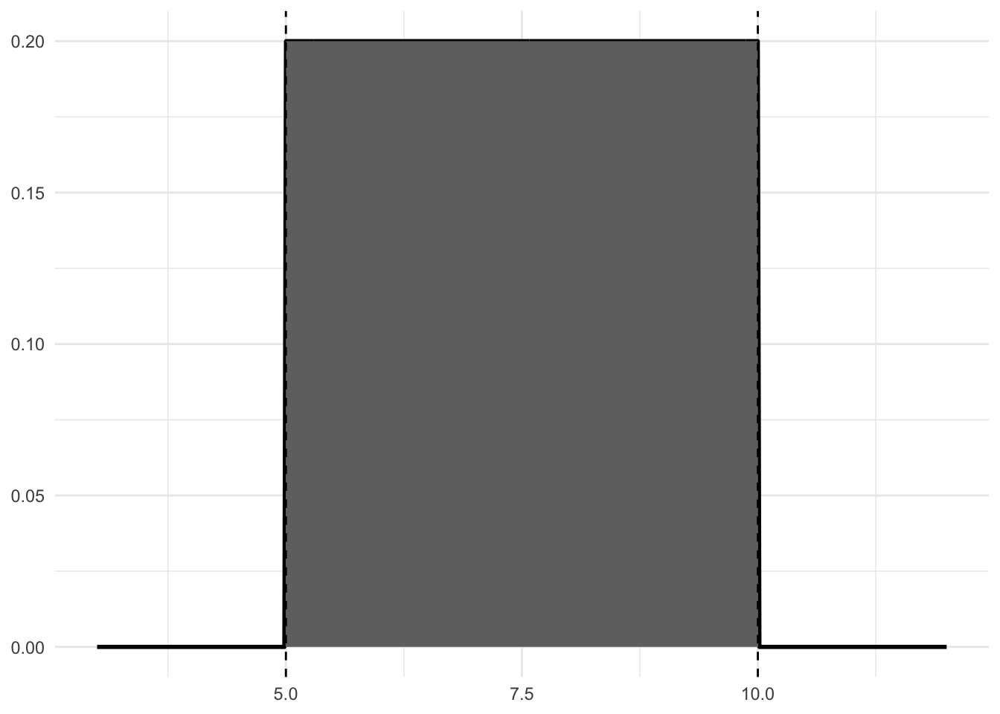
Claro que, así es como el gráfico se vería a nivel teórico, teniendo una probabilidad similar para cada punto debajo de la curva. Intentemos ahora correr una simulación al respecto, para extrapolar este ejercicio a una situación más realista. Comencemos por definir el área bajo la curva y, mediante runif(), simular diez mil eventos aleatorios:
# Intervalo
a <- 5
b <- 10
# Simulación
muestra_uniforme <- tibble(
valores = runif(10000, min = a, max = b)
)Finalmente, vamos a graficar la simulación:
# Gráfico
muestra_uniforme |>
ggplot(aes(x = valores)) +
geom_histogram(binwidth = 0.5,
color = "white") +
labs(
x = NULL,
y = NULL
) +
theme_minimal()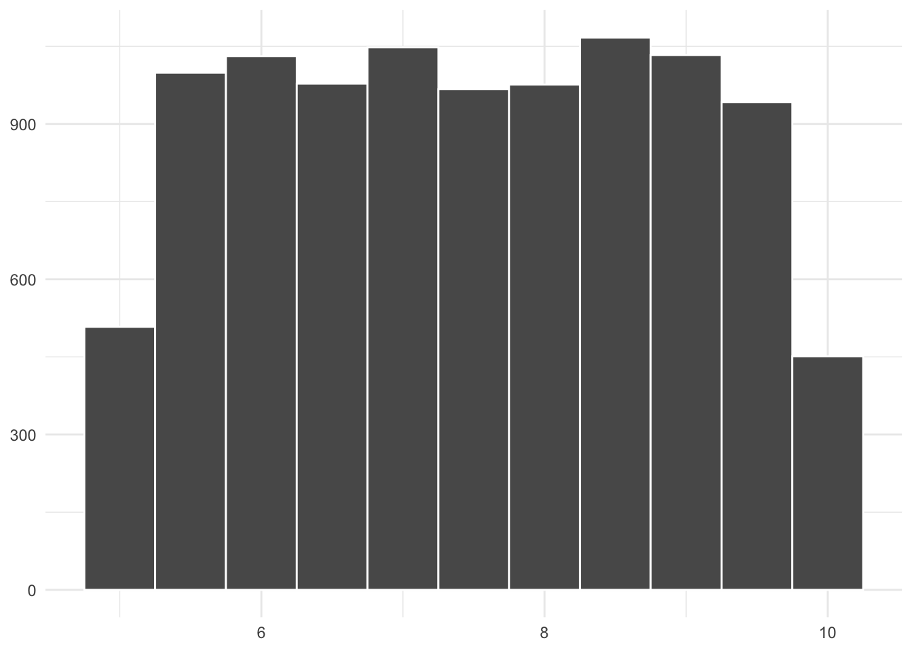
Lógicamente, conforme vayamos aumentando la muestra, las simulaciones van a presentar un aspecto más aplanado, aumentando la similitud con el gráfico teórico que hicimos anteriormente:
# Simulación con 100,000 eventos
muestra_uniforme <- tibble(
valores = runif(100000, min = a, max = b)
)
# Gráfico
muestra_uniforme |>
ggplot(aes(x = valores)) +
geom_histogram(binwidth = 0.5,
color = "white") +
labs(
x = NULL,
y = NULL
) +
theme_minimal()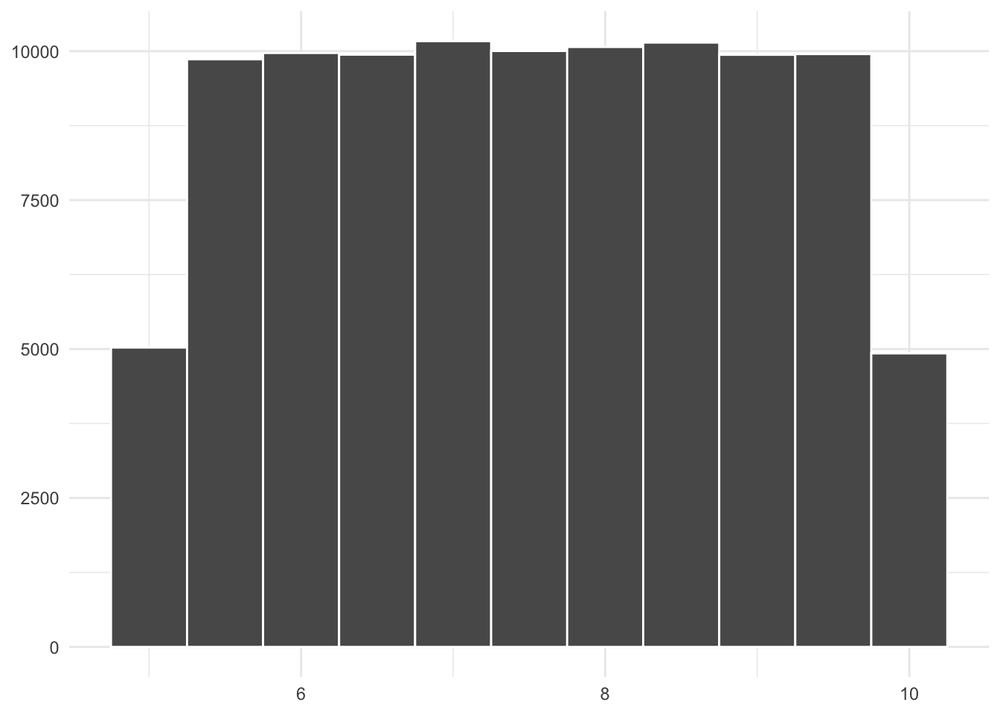
6.2.2.2.2 Distribución Exponencial
Este tipo de distribución es utilizada para modelar fenómenos en los que el tiempo entre eventos consecutivos de un proceso aleatorio sigue un patrón decreciente: los valores pequeños son más probables y la probabilidad disminuye exponencialmente conforme el valor aumenta, es decir, modela el tiempo de espera hasta que ocurra un evento en un proceso que sucede de manera continua y con una tasa constante (DeGroot and Schervish 2012).
Este tipo de distribución es especialmente útil para modelar situaciones como el tiempo que tarda en fallar una máquina o un componente electrónico, el tiempo que una persona espera en una fila antes de ser atendida, etc. Básicamente, situaciones en las que, conforme vaya aumentando el valor (en este caso el tiempo), la probabilidad de ocurrencia del evento disminuye exponencialmente (es más probable que te atiendan en una tienda en los primeros 10 minutos que en los 20 minutos subsecuentes a esos 10).
Para que una variable aleatoria siga una distribución exponencial, debe cumplir con las siguientes características:
La variable mide el tiempo hasta que ocurre un evento que sucede de manera aleatoria e independiente.
El proceso no tiene memoria, es decir, la probabilidad de que el evento ocurra en el futuro no depende del tiempo ya transcurrido.
Los valores posibles son continuos y no negativos: \(x \in [0, \infty)\).
La probabilidad de que el evento ocurra en un intervalo pequeño es proporcional al tamaño de ese intervalo.
Respectivamente, la función de densidad de probabilidad está definida como:
\[ f(X) = \begin{cases} \lambda e ^{-\lambda x}, & \text{si } x \geq 0 \\ 0, & \text{si } x < 0 \end{cases} \]
Donde \(\lambda > 0\) es la tasa de ocurrencia del evento (el inverso del tiempo promedio entre eventos) y \(x\) es el tiempo hasta que ocurre el evento.
Para este caso, la función de distribución acumulada6 equivale a:
\[ F(x;\lambda) = P(X \leq x) = 1 - e^{- \lambda x }, \: \: x \geq 0 \]
Vamos ahora a ver un ejemplo sencillo en R para visualizar esta distribución: Vamos en este caso a suponer un evento en el que, el tiempo promedio para que se repita este mismo sea de intervalos de 5 minutos, por lo que el valor de \(\lambda\) es:
\[ \lambda = \frac{1}{5} = 0.2 \]
Por lo tanto, la simulación con diez mil observaciones:
# Simulación con 10,000 observaciones
size <- 10000
lambda <- 0.2
# Simulación
set.seed(123)
repeticiones <- rexp(size, rate = lambda)
head(repeticiones, 10) [1] 4.2172863 2.8830514 6.6452743 0.1578868 0.2810549 1.5825061
[7] 1.5711365 0.7263340 13.6311823 0.1457672Vamos ahora a graficar un histograma de la distribución, pero en esta ocasión vamos a añadirle una función de tendencia, para visualizar de mejor manera la función exponencial:
muestra_exp <- tibble(tiempos = repeticiones)
muestra_exp |>
ggplot(aes(x = tiempos)) +
geom_histogram(aes(y = ..density..),
color = "white") +
labs(
x = NULL,
y = NULL
) +
stat_function(fun = dexp, args = list(rate = lambda),
color = "#c74a4a", size = 1) +
theme_minimal()Warning: The dot-dot notation (`..density..`) was deprecated in ggplot2 3.4.0.
ℹ Please use `after_stat(density)` instead.`stat_bin()` using `bins = 30`. Pick better value with `binwidth`.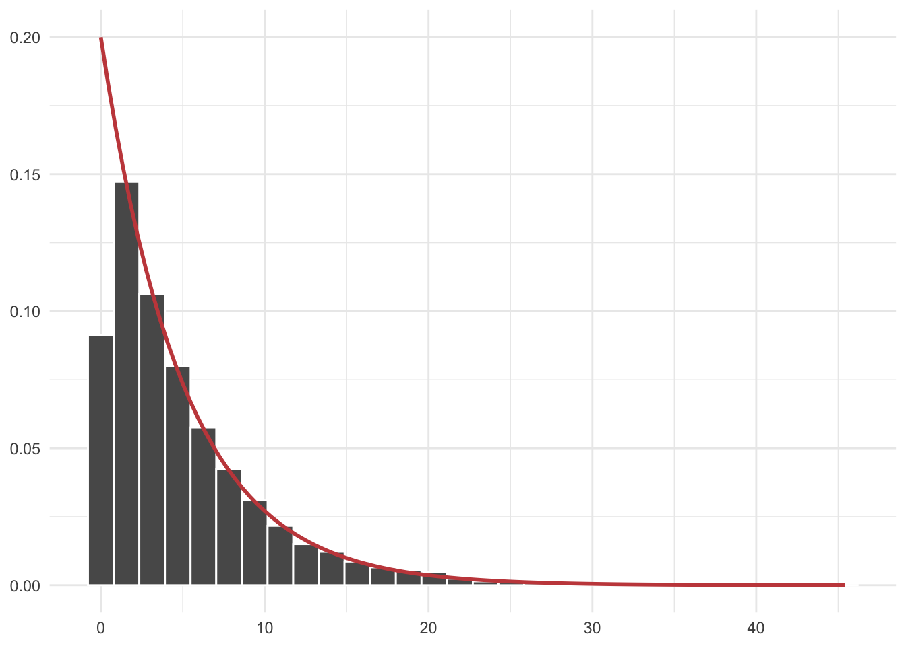
Como puedes ver, la probabilidad de que ocurra dicho evento disminuye de manera exponencial para 10, 20, 30 minutos, etc, conforme el tiempo se incrementa.
6.2.2.2.3 Distribución Gamma
Este tipo de distribución es utilizada para modelar fenómenos en los que se desea conocer el tiempo hasta que ocurran k eventos en un proceso aleatorio continuo con tasa constante. A diferencia de la distribución exponencial, que modela el tiempo hasta que ocurra un solo evento, la distribución gamma generaliza este concepto permitiendo modelar la espera hasta varios eventos consecutivos (Johnson, Kotz, and Balakrishnan 1994).
Dicho de otra manera, si la distribución exponencial describe la probabilidad de esperar cierto tiempo hasta el primer evento, la distribución gamma describe la probabilidad de esperar cierto tiempo hasta que hayan ocurrido \(k\) eventos. Por ejemplo, se podría usar para modelar el tiempo total que tardan en llegar 3 clientes a una tienda, el tiempo total que tarda en fallar un sistema después de varias reparaciones, etc.
Para que una variable aleatoria siga una distribución gamma, debe cumplir con las siguientes características:
La variable mide el tiempo total hasta que ocurren \(k\) eventos independientes en un proceso con tasa constante.
El proceso no tiene memoria: el tiempo restante hasta el próximo evento no depende del tiempo ya transcurrido.
Los valores posibles son continuos y no negativos, es decir: \(x \in [0, \infty)\).
Si \(k = 1\), la distribución gamma se reduce a la distribución exponencial.
Respectivamente, la función de densidad de probabilidad está definida como:
\[ f(x;k,\lambda) = \begin{cases} \frac{\lambda^k x^{k-1} e^{-\lambda x} }{\Gamma(k)}, & \text{si } x \geq 0 \\ 0, & \text{si } x < 0 \end{cases} \]
Donde \(\lambda >0\) es la tasa de ocurrencia del evento, \(k>0\) es el parámetro de forma que indica el número de eventos que se esperan, \(\Gamma (k)\) es la función gamma, que generaliza el factorial para valores reales (\(\Gamma (k) = (k-1)!\) si \(k\) es un entero positivo), y \(x\) es el tiempo total hasta que se completan los \(k\) eventos.
En este caso, la función de distribución acumulada no tiene una forma cerrada sencilla para todos los casos, pero se puede expresar mediante la función gamma incompleta:
\[ F(x;k,\lambda) = \frac{\gamma (k, \lambda x)}{\Gamma (k)} \]
Donde \(\gamma (k, \lambda x)\) es la función gamma incompleta inferior, que integra desde 0 hasta \(\lambda x\).
Por supuesto, vamos ahora a continuar con un ejemplo en R. Comencemos por plantear la simulación con diez mil observaciones:
# Simulación con 10,000 observaciones
size <- 10000
lambda <- 0.2
k <- 3 # número de eventos
# Simulación
set.seed(123)
repeticiones_gamma <- rgamma(size, shape = k, rate = lambda)
head(repeticiones_gamma, 10) [1] 8.461717 23.680149 2.711138 13.543003 29.735589 16.409417 4.499288
[8] 2.574056 24.050187 15.506411Ahora, vamos a graficarla:
muestra_gamma <- tibble(tiempos = repeticiones_gamma)
# Gráfico
muestra_gamma |>
ggplot(aes(x = tiempos)) +
geom_histogram(aes(y = ..density..),
color = "white") +
labs(
x = NULL,
y = NULL
) +
stat_function(fun = dgamma,
args = list(shape = k, rate = lambda),
color = "#c74a4a", size = 1) +
theme_minimal()`stat_bin()` using `bins = 30`. Pick better value with `binwidth`.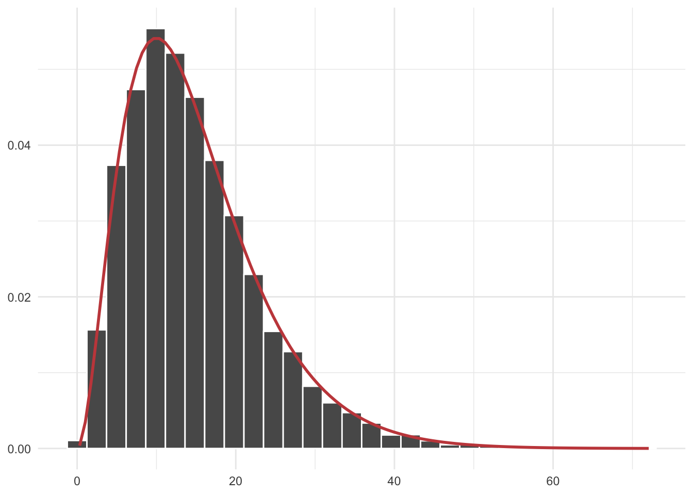
Este tipo de distribución es más interesante. Como puedes darte cuenta, la forma en este histograma es algo más parecida a una distribución normal. Esta forma se debe a que el valor más probable nunca es inmediatamente el 0, sino que se encuentra en un punto positivo mayor que cero, porque la distribución gamma con parámetro de forma mayor que 1 comienza desde cero, sube hasta un máximo y luego baja, reflejando así un comportamiento más “suavizado” y menos abrupto que la distribución exponencial, por ejemplo, imagina que estás midiendo el tiempo que tarda un proceso que requiere completar varias etapas consecutivas, como cocinar un platillo con varios pasos. No puedes terminar justo al empezar (tiempo 0), sino que lo más probable es que el tiempo se acumule hasta cierto punto donde el proceso se completa con mayor frecuencia.
6.2.2.2.4 Distribución Beta
Este tipo de distribución es utilizada para modelar variables aleatorias continuas limitadas en un rango finito, normalmente entre 0 y 1, cuya probabilidad depende de dos parámetros de forma que permiten modelar una gran variedad de comportamientos: distribuciones simétricas, sesgadas hacia la izquierda o derecha, y hasta distribuciones en forma de U o campana (Johnson, Kotz, and Balakrishnan 1995).
Básicamente, la distribución Beta describe la probabilidad de que una proporción, fracción o probabilidad misma tome ciertos valores dentro del intervalo \([0,1]\). Este tipo de distribución es usada comúnmente en estadística bayesiana, control de calidad, estimación de probabilidades de éxito y, en general, en cualquier situación donde se estudien proporciones restringidas a un rango fijo. Por ejemplo, se podría usar para calcular la proporción de tiempo que una máquina está en funcionamiento en un día, la fracción de la población que prefiere cierto producto, etc.
Para que una variable aleatoria siga una distribución Beta, debe cumplir con las siguientes características:
La variable toma valores continuos únicamente en el intervalo \([0,1]\)
La forma de la distribución está controlada por dos parámetros positivos: \(\alpha > 0\) y \(\beta > 0\).
Es una distribución flexible: dependiendo de los valores de $$ y $$, puede ser simétrica, sesgada o en forma de U.
Se interpreta frecuentemente como la distribución de una probabilidad desconocida en el marco bayesiano.
Respectivamente, la función de densidad de probabilidad está definida como:
\[ f(x;\alpha,\beta) = \begin{cases} \frac{ x^{\alpha-1}(1-x)^{\beta-1} }{ B(\alpha , \beta) }, & \text{si } 0 \leq x \leq 1 \\ 0, & \text{en otro caso } \end{cases} \]
Donde \(B(\alpha , \beta)\), que también es equivalente a:
\[ B(\alpha , \beta) = \frac{\Gamma (\alpha) \Gamma (\beta)}{\Gamma (\alpha + \beta)} \]
Es la constante de normalización (función beta completa), y \(\Gamma (\cdot )\) es la función gamma.
En este caso particular, la función de distribución acumulada se expresa como la función beta incompleta regularizada:
\[ F(x;\alpha, \beta) = I_x (\alpha, \beta) \]
Donde \(I_x\) es la integral de la función de densidad desde 0 hasta \(x\) (función beta incompleta), es decir:
\[ B_x (\alpha, \beta) = \int_0^x t^{\alpha-1} (1-t)^{\beta - 1 } dt \]
Dividida por \(B(\alpha, \beta)\) (función beta completa).
Como es lógico, vamos ahora a plantear el ejercicio en R, comenzando por supuesto con una simulación de diez mil observaciones:
# Simulación con 10,000 observaciones para distribución Beta
size <- 10000
alpha <- 3 # parámetro de forma alpha
beta <- 6 # parámetro de forma beta
# Simulación
set.seed(123)
repeticiones_beta <- rbeta(size, shape1 = alpha, shape2 = beta)
head(repeticiones_beta, 10) [1] 0.2395661 0.2930486 0.6708650 0.3461865 0.3570898 0.4218902 0.1423895
[8] 0.2204212 0.2575898 0.5912208Y ahora, vamos a generar el gráfico correspondiente:
muestra_beta <- tibble(proporcion = repeticiones_beta)
# Gráfico
muestra_beta |>
ggplot(aes(x = proporcion)) +
geom_histogram(aes(y = ..density..),
color = "white", bins = 30) +
labs(
x = NULL,
y = NULL
) +
stat_function(fun = dbeta,
args = list(shape1 = alpha, shape2 = beta),
color = "#c74a4a", size = 1) +
theme_minimal()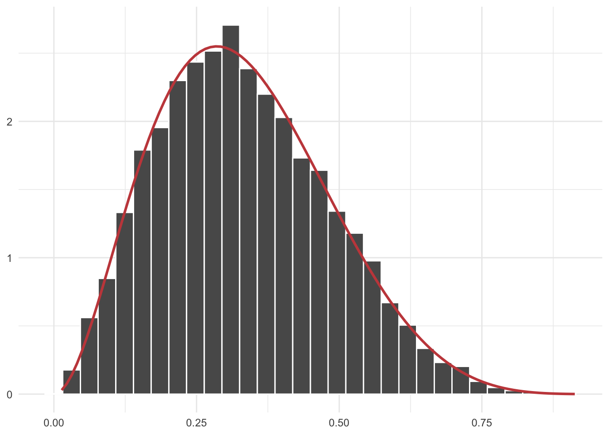
Como puedes darte cuenta, los parámetros \(\alpha=2\) y \(\beta=5\) que establecimos al principio de la simulación generan una forma asimétrica sesgada a la izquierda. Esto ocurre debido a que cuando \(\alpha\) es menor que \(\beta\), la densidad se concentra más cerca de 0 (y de manera inversa). Algo interesante es que si los valores \(\alpha\) y \(\beta\) son menores a 1, entonces las probabilidades se disparan hacia los extremos (cerca de 0 y 1), dejando una forma de U, como mencionamos anteriormente, por ejemplo:
size <- 10000
alpha <- 0.3
beta <- 0.3
set.seed(123)
muestra_beta <- tibble(proporcion = rbeta(size,
shape1 = alpha,
shape2 = beta))
# Gráfico
muestra_beta |>
ggplot(aes(x = proporcion)) +
geom_histogram(aes(y = ..density..),
color = "white", bins = 30) +
labs(
x = NULL,
y = NULL
) +
stat_function(fun = dbeta,
args = list(shape1 = alpha, shape2 = beta),
color = "#c74a4a", size = 1,
xlim = c(0, 1)) +
theme_minimal()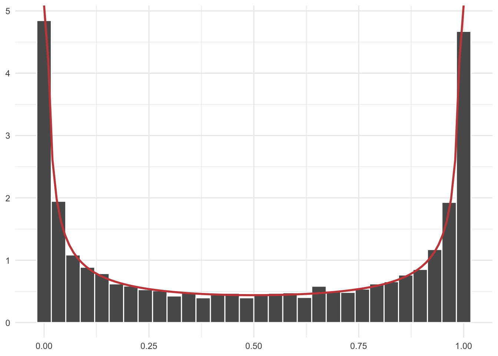
Aunque no lo parezca, este tipo de casos con forma U no son extraños en la vida real. Pensemos tan solo en, por ejemplo, las reseñas de un restaurante publicadas en Google. En una gran cantidad de casos los usuarios se dividen en grupos extremos: Reseñas terriblemente malas o reseñas sumamente positivas, por lo que si normalizáramos estas calificaciones en una escala de 0 a 1, nos encontraríamos con una distribución bastante parecida en forma a la U.
6.2.2.2.5 Distribución de Pareto
Este tipo de distribución es utilizada para modelar variables aleatorias continuas no negativas cuyo comportamiento sigue una ley de potencias, es decir, donde la probabilidad decrece de forma proporcional a una potencia de la variable. Es conocida por describir fenómenos donde unos pocos valores grandes tienen un peso desproporcionado frente a muchos valores pequeños, como ocurre en la distribución de la riqueza, tamaños de ciudades, ventas de productos, etc.
Básicamente, la distribución de Pareto describe la probabilidad de que una cantidad exceda un cierto umbral mínimo, dado que los valores grandes son menos frecuentes pero aún posibles con cierta probabilidad significativa. Por ejemplo, se podría usar para modelar la probabilidad de que el ingreso de una persona supere cierto valor (Pareto 1896).
Para que una variable aleatoria siga una distribución de Pareto, debe cumplir con las siguientes características:
La variable toma valores continuos únicamente en el intervalo \([x_m, \infty)\), donde \(x_m > 0\) es el valor mínimo posible.
La forma de la distribución está controlada por un único parámetro positivo \(\alpha > 0\), llamado parámetro de forma o índice de Pareto.
Tiene una cola pesada, lo que significa que la probabilidad de valores muy grandes disminuye lentamente en comparación con distribuciones como la exponencial o la normal.
No tiene media si \(\alpha \leq 1\), y no tiene varianza si \(\alpha \leq 2\), lo que refleja su uso en fenómenos extremos.
Respectivamente, la función de densidad de probabilidad está definida como:
\[ f(x;x_m , \alpha) = \begin{cases} \frac{ \alpha x_m^\alpha }{ x^{\alpha + 1 } }, & \text{si } x \geq x_m \\ 0, & \text{en otro caso } \end{cases} \]
Donde \(x_m > 0\) es el valor mínimo posible (escala) y \(\alpha > 0\) controla la pendiente de la cola.
Por su parte, la función de distribución acumulada (FDA) está dada por:
\[ F(x;x_m , \alpha) = \begin{cases} 1- \left( \frac{x_m}{x} \right)^\alpha, & \text{si } x \geq x_m \\ 0, & \text{en otro caso } \end{cases} \]
Siendo \(\left( \frac{x_m}{x} \right)^\alpha\) la función de supervivencia, es decir, la probabilidad de exceder cierto valor \(x\), la cual también se puede expresar como:
\[ S(x) = \left( \frac{x_m}{x} \right)^\alpha \]
Como puedes darte cuenta, la función de supervivencia es exponencial por \(\alpha\), razón por la que este tipo de distribución tiende a tener colas muy pesadas, conforme el valor de este parámetro se vuelva más pequeño.
Vamos ahora a hacer el ejercicio correspondiente en R, como no podía ser de otra manera, empezando con una simulación de diez mil observaciones. Para nuestra mala suerte, no existe directamente una función para simular la distribución de Pareto, por lo que tendremos que armarla nosotros:
# Simulación con 10,000 observaciones para distribución Pareto
size <- 10000
xm <- 2 # parámetro de escala (mínimo valor posible)
alpha <- 3 # parámetro de forma
# Generación de la función para simular Pareto
rpareto <- function(n, xm, alpha) {
xm / (runif(n)^(1/alpha))
}
# Simulación
set.seed(123)
repeticiones_pareto <- rpareto(size, xm, alpha)
head(repeticiones_pareto, 10) [1] 3.030017 2.165036 2.694410 2.084684 2.041340 5.599895 2.474323 2.077337
[9] 2.438926 2.597248Como puedes ver, simplemente creamos una función para calcular la inversa de la función de distribución acumulada, que es equivalente a la distribución de Pareto. Ahora, para graficar los datos:
# Pasamos los datos simulados a un tibble
muestra_pareto <- tibble(valor = repeticiones_pareto)
# Gráfico
muestra_pareto |>
ggplot(aes(x = valor)) +
geom_histogram(aes(y = ..density..),
color = "white", bins = 50) +
labs(
x = NULL,
y = NULL
) +
stat_function(fun = function(x) {
alpha * xm^alpha / x^(alpha + 1)
}, xlim = c(2.5, 40),
color = "#c74a4a", size = 1) +
theme_minimal()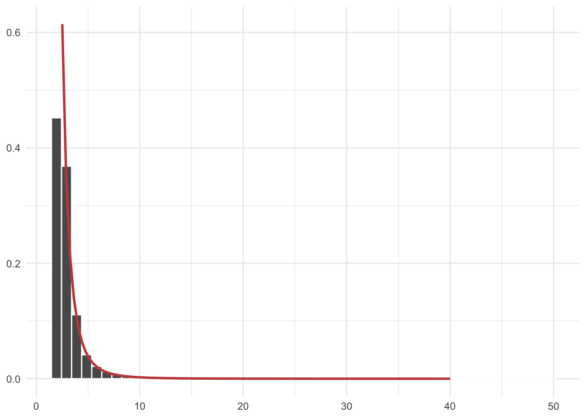
Lógicamente, aquí también tuvimos que aplicar directamente la función de densidad de Pareto, para poder genenrar la curva de densidad.
Este tipo de distribución es bastante interesante, ya que la podemos ver en variables económicas reales, por ejemplo, si tomáramos los ingresos reportados en la Encuesta Nacional de Ingreso-Gasto de los Hogares (ENIGH) publicada por el INEGI, podríamos darnos cuenta de que la concentración de mayores ingresos en el país se reduce a una pequeña cantidad de personas, mostrándonos una clara distribución de Pareto. Para este caso en particular vamos a hacer rápidamente el ejercicio en R (ya que los datos son de fácil acceso), mediante el siguiente dataset disponible en el repositorio oficial del libro, el cual es una extracción directa de los ingresos totales reportados por personas encuestadas en la ENIGH en 2022:
# A tibble: 397,182 × 1
ing_tri
<dbl>
1 7435.
2 33750.
3 1957.
4 391.
5 978.
6 52826.
7 2935.
8 1712.
9 20543.
10 8804.
# ℹ 397,172 more rowsenigh <- read.csv("https://raw.githubusercontent.com/Jorge-hercas/
r-para-inteligencia-de-negocios/refs/heads/main/
CSV/ing_trim_enigh.csv") |>
as_tibble()
enighVamos ahora a hacer el histograma en cuestión:
# Gráfico
enigh |>
ggplot(aes(x = ing_tri)) +
geom_histogram(aes(y = ..density..),
color = "white", bins = 100) +
labs(
x = NULL,
y = NULL
) +
xlim(0, 100000) +
theme_minimal()Warning: Removed 3180 rows containing non-finite outside the scale range
(`stat_bin()`).Warning: Removed 2 rows containing missing values or values outside the scale range
(`geom_bar()`).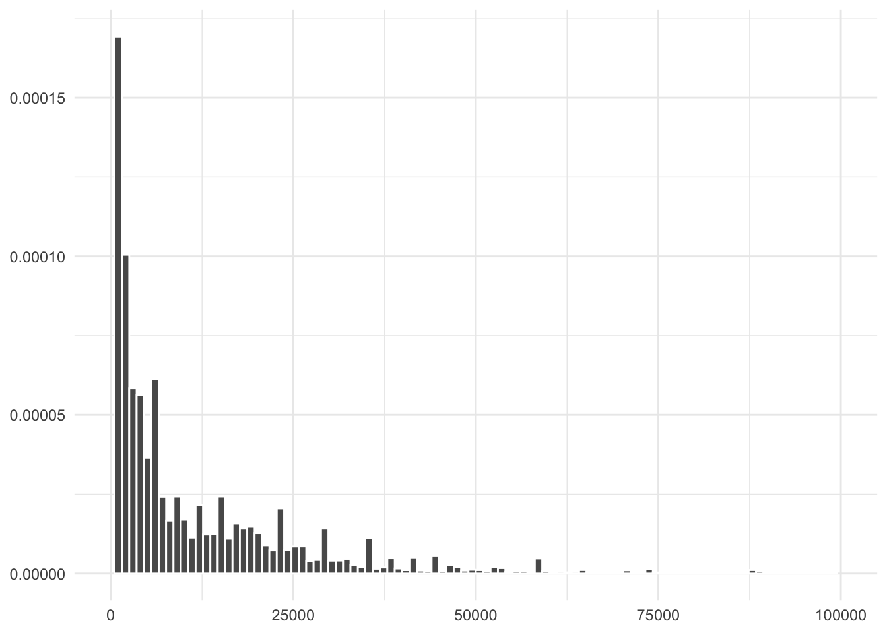
Este sencillo ejercicio nos permite visualizar de forma tangible cómo una distribución de Pareto se manifiesta en datos económicos reales. A pesar de que la mayoría de las personas se concentra en rangos de ingreso bajos o medios, la cola de la distribución (aunque estrecha en número de individuos) representa montos de ingreso muy elevados. Este patrón no solo confirma la teoría, si no que también nos ayuda a comprender de mejor manera la dinámica de la realidad en un país.
6.2.2.2.6 Distribución Log-Normal
Finalmente, este tipo de distribución es utilizada para modelar variables aleatorias continuas cuyo logaritmo natural sigue una distribución normal. Básicamente, una variable aleatoria \(X\) es Log-Normal si \(Y = ln(X)\) tiene una distribución normal.
La distribución Log-Normal se caracteriza por ser asimétrica hacia la derecha (cola pesada positiva), lo que la hace idónea para modelar fenómenos en los que los valores pequeños son comunes pero también existen valores extremadamente grandes con baja probabilidad. Este patrón se suele dar frecuentemente en datos de ingresos, precios de activos, tamaños de partículas, duraciones de procesos, etc (Aitchison and Brown 1957).
Pensemos en el ejemplo que vimos en el caso de la distribución de Pareto. A pesar de que ambas distribuciones pueden ser aplicadas a este caso, la Log-Normal tiende a describir de manera más precisa la parte baja y media de la distribución de ingresos, donde la mayoría de las personas se concentran y los valores extremos son menos frecuentes. Esto se debe a que la Log-Normal surge naturalmente cuando una variable es el resultado de la multiplicación de muchos factores independientes y positivos (escolaridad, experiencia, sector económico, etc). Claro que, dependiendo de la perspectiva que queramos modelar, podemos hacer uso de una u otra. Por norma general, es recomendable utilizar una distribución Log-Normal en la parte baja y media de la distribución de ingresos, mientras que para el pico (top de ingresos) suele funcionar mejor la distribución de Pareto.
Ahora, para que una variable aleatoria siga una distribución log-normal, debe cumplir con las siguientes características:
La variable toma valores continuos estrictamente positivos: \(X > 0\).
El logaritmo natural de la variable (\(ln(X)\)) está distribuido normalmente con media \(\mu\) y desviación estándar \(\sigma > 0\).
La forma de la distribución está controlada por \(\mu\) y \(\sigma > 0\):
- Valores pequeños de \(\mu\) resultan en distribuciones más simétricas.
- Valores grandes de \(\mu\) resultan en distribuciones más asimétricas con colas largas.
Es útil para modelar procesos multiplicativos, donde el valor final resulta del producto de muchos factores aleatorios (y positivos).
Respectivamente, la función de densidad de probabilidad está definida como:
\[ f(x; \mu, \sigma) = \begin{cases} \frac{ 1 }{ x \sigma \sqrt{2 \pi} }exp \left( -\frac{(ln \, x - \mu)^2 }{2\sigma^2} \right) , & \text{si } x > 0 \\ 0, & \text{en otro caso } \end{cases} \]
Donde \(\mu\) es la media del logaritmo natural de la variable y \(\sigma\) es la desviación estándar del logaritmo natural de la variable.
Por su parte, la función de distribución acumulada es igual a:
\[ F(x; \mu, \sigma) = \Phi \left( \frac{ln \, x - \mu}{\sigma} \right) \]
Donde \(\Phi ( \cdot )\) es la función de distribución acumulada de la distribución normal estándar.
Antes de pasar a la parte técnica, vale la pena mencionar en este punto que, a pesar de que no se abordaron los momentos de esta distribución (y de las demás distribuciones analizadas), como lo son su media, mediana, moda, varianza, etc, podrás encontrar esa información de forma resumida en el apéndice del libro. Dichos momentos, como quizá ya sepas, son herramientas fundamentales para caracterizar y describir el comportamiento de una variable aleatoria desde un punto de vista cuantitativo. Sin embargo, el propósito principal de esta sección no es que memorices fórmulas o desarrollos algebraicos complejos, sino que comprendas de manera intuitiva y práctica cómo se comporta cada distribución, en qué contextos resulta útil y qué implicaciones tiene su forma. Por esa razón, decidí no profundizar demasiado en la deducción matemática, sino centrarme en ejemplos claros y comparaciones que te permitan comprender cada distribución de una forma mucho más clara.
Ahora si, como ya lo estas esperando, vamos ahora con un ejercicio en R. Comencemos por generar una simulación de diez mil observaciones:
# Simulación con 10,000 observaciones para distribución Log-Normal
size <- 10000
meanlog <- 0.5 # media en escala log
sdlog <- 0.75 # desviación estándar en escala log
# Simulación
set.seed(123)
repeticiones_lognormal <- rlnorm(size, meanlog = meanlog, sdlog = sdlog)
head(repeticiones_lognormal, 10) [1] 1.0829007 1.3873104 5.3070241 1.7382542 1.8165985 5.9673249 2.3295780
[8] 0.6383964 0.9849744 1.1802822Y el gráfico correspondiente:
muestra_lognormal <- tibble(valor = repeticiones_lognormal)
muestra_lognormal |>
ggplot(aes(x = valor)) +
geom_histogram(aes(y = ..density..),
color = "white", bins = 30) +
labs(
x = NULL,
y = NULL
) +
stat_function(fun = dlnorm,
args = list(meanlog = meanlog, sdlog = sdlog),
color = "#c74a4a", size = 1) +
theme_minimal()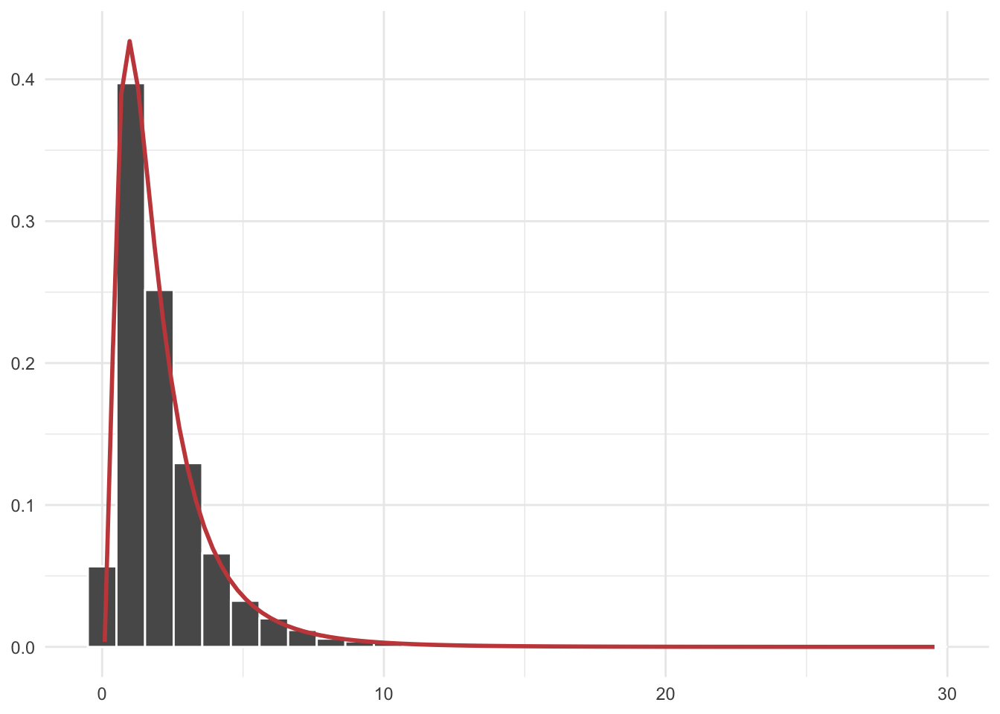
Lógicamente, es bastante parecida a la distribución de Pareto, como lo mencionamos anteriormente, ya que ambas presentan una cola pesada hacia la derecha, lo que implica que valores extremadamente grandes, aunque poco frecuentes, tienen una probabilidad (no tan) pequeña de ocurrir. Sin embargo, la diferencia clave radica en su origen y en la forma en que modelan esos valores extremos: la distribución Log-Normal surge cuando una variable aleatoria es el resultado del producto de múltiples factores independientes, mientras que la Pareto se asocia más a fenómenos de crecimiento desigual, siguiendo la regla del 80/207.
Como forma de cierre para esta sección, podemos retomar el ejercicio que hicimos en el capítulo anterior, considerando la distribución de Pareto para ingresos de los hogares en México, pero ahora graficando ambas curvas de densidad sobre el mismo histograma, para poder compararlas ambas. Vayamos por partes: Comenzaremos por ajustar los valores de la tabla a la distribución Log-Normal. Esto lo haremos a partir de la librería fitdistrplus:
library(fitdistrplus)
# Filtrar valores positivos
enigh_fil <- enigh |>
filter(ing_tri > 0)
# Ajustar Log-Normal
fit_logn <- fitdist(enigh_fil$ing_tri, "lnorm")Ahora, vamos a ajustar los valores para la distribución de Pareto. En este caso lo tendremos que hacer directamente, ya que no tenemos una función específica para esta distribución:
# Parámetros Pareto (estimación simple de máxima verosimilitud)
xm <- min(enigh_fil$ing_tri) # mínimo observado
alpha <- length(enigh_fil$ing_tri) /
sum(log(enigh_fil$ing_tri / xm)) # fórmula MLEEsto lo hacemos para poder normalizar ambas funciones de densidad en la misma escala.
Finalmente, vamos a graficar ambas distribuciones:
# Gráfico del histograma con ambas curvas
ggplot(enigh_fil, aes(x = ing_tri)) +
geom_histogram(aes(y = ..density..), bins = 100, color = "white") +
# Log-Normal
stat_function(fun = dlnorm, args = list(meanlog = fit_logn$estimate[1],
sdlog = fit_logn$estimate[2]),
color = "#c74a4a", size = 1) +
# Pareto
stat_function(fun = function(x) { alpha * xm^alpha / x^(alpha + 1) },
color = "#4167ba", size = 1) +
scale_x_continuous(limits = c(0, 100000)) +
labs(
x = NULL,
y = NULL
) +
theme_minimal()Warning: Removed 3180 rows containing non-finite outside the scale range
(`stat_bin()`).Warning: Removed 2 rows containing missing values or values outside the scale range
(`geom_bar()`).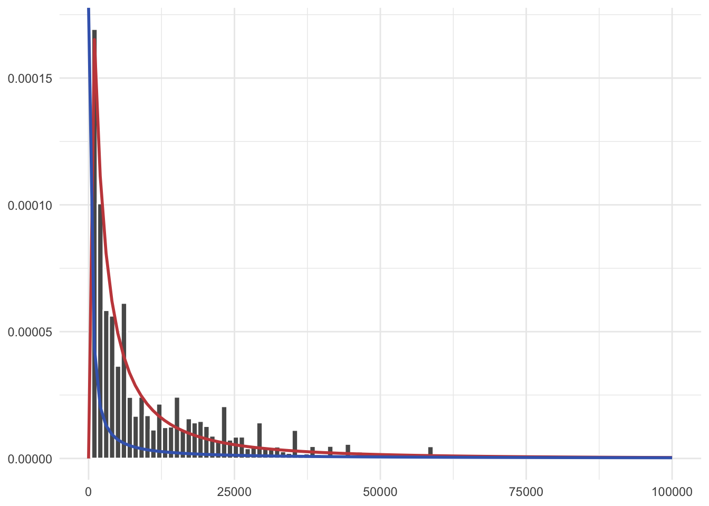
Claramente, podemos darnos cuenta de que, en la parte baja y media de los ingresos, (15,000-20,000) la curva de la Log-Normal sigue de manera más ajustada el histograma, mientras que la curva de Pareto decae más lentamente que la Log-Normal, lo que nos estaría indicando que la probabilidad de encontrar ingresos extremadamente altos es mayor de lo que predice la Log-Normal. Básicamente, la distribución Log-Normal subestima la probabilidad de los ingresos más altos, mientras que la distribución de Pareto subestima los ingresos bajos y medios.
6.2.3 Una pequeña reflexión
Ahora que hemos terminado de analizar la mayoría de las distribuciones con las que probablemente nos encontraremos en algún momento, surge una pregunta importante: ¿por qué es útil estudiar cada una de ellas por separado?
La sección anterior siguió una estructura lógica y bien definida: primero, presentamos el tipo de distribución; luego, los casos en los que se aplica; a continuación, sus características principales; después, la definición matemática que las describe; y finalmente, un ejemplo visual que facilita su comprensión. Esta organización no fue casual, sino que tiene un propósito claro: ayudarte a entender las distribuciones de manera sencilla y práctica.
De esta forma, cuando te enfrentes a alguna de estas distribuciones en el ámbito laboral, podrás identificarla con precisión. Esto te permitirá seleccionar y aplicar las pruebas de validación estadísticas adecuadas, lo que a su vez evitará resultados sesgados o interpretaciones erróneas al realizar análisis estadísticos, pronósticos o estudios de correlación.
Ahora, la ayuda visual de un histograma y una función de densidad son importantes, sin embargo, el entender el contexto y valores de cada distribución con detalle nos asegurará el entendimiento de a qué caso nos estamos enfrentando. Imagina esto: Supongamos que una fábrica ensambla vehículos cada hora. Si quisiéramos calcular la proporción de vehículos que tienen un defecto de fábrica en ese intervalo de tiempo, estaríamos hablando de una distribución beta, mientas que si quisiéramos visualizar la cantidad de vehículos con defecto que se presentan en cada hora, entonces estaríamos hablando de una distribución discreta, como la distribución binomial (si conocemos el número total de vehículos) o la distribución de Poisson (si los defectos ocurren de manera aleatoria e independiente en un intervalo de tiempo).
A pesar de ser problemas parecidos, esas sutiles diferencias en los objetivos de cálculo hacen que tengamos que plantearnos una distribución completamente diferente, por lo que debemos entender con mucha precisión cada caso particular.
6.2.4 Teorema de Tchebysheff
Hasta ahora hemos explorado cómo resumir los datos con medidas descriptivas y cómo entender su comportamiento a través de distintas distribuciones, tanto normales como no normales. Sin embargo, surge una pregunta fundamental: ¿Qué ocurre cuando no conocemos con certeza la forma de la distribución de nuestros datos? Es decir, ¿Cómo podemos establecer límites de probabilidad sin necesidad de asumir normalidad u otra distribución específica?
Aquí es donde entra en juego el Teorema de Tchebysheff, una de las herramientas más poderosas y generales de la estadística. Este teorema nos garantiza que, independientemente de la forma de la distribución, podemos acotar la proporción de observaciones que se encuentran dentro de un cierto número de desviaciones estándar respecto a la media. Básicamente, el Teorema de Tchebysheff nos ofrece una manera de cuantificar la concentración de los datos alrededor de la media sin hacer suposiciones estrictas sobre la distribución, ya que es aplicable a cualquier tipo de estas, independientemente de su (no) normalidad (Feller 1968).
Formalmente, este teorema nos dice que, para cualquier conjunto de datos con media \(\mu\) y desviación estándar \(\sigma\), para cualquier número \(k > 1\):
\[ P(|X-\mu | < k \sigma) \geq 1- \frac{1}{k^2} \]
Lo que nos está diciendo \(|X-\mu | < k \sigma\), es que el valor de la variable \(X\) siempre estará a menos de \(k\) desviaciones estándar de la media, siendo que el teorema nos dará un mínimo porcentaje de datos que estarán cerca de la media, sin importar la forma de la distribución, lo que dicho de otra manera, implica que para \(k\) desviaciones estandar, podremos saber qué porcentaje de los valores estamos tomando de la distribución total. Esto ocurre porque la varianza mide el promedio de los desvíos al cuadrado respecto a la media, por lo que si demasiados valores estuvieran muy lejos de \(\mu\), entonces la media se incrementaría. El teorema de Tchebysheff limita cuánta masa puede vivir en las colas en función de \(\sigma^2\). Supongamos por ejemplo que queremos saber a el porcentaje de datos que tendremos de la muestra a dos desviaciones estándar. En este caso, Tchebysheff nos diría:
\[ P(|X-\mu | < k \sigma) \geq 1- \frac{1}{2^2} = 0.75 \]
Esto nos diría que, para dos desviaciones estandar, encontraríamos al menos el 75% de los datos. De esta forma tan sencilla, podemos identificar la concentración de nuestros datos a partir de las desviaciones estándar.
Algo interesante de este teorema es que nos garantiza un porcentaje mínimo, pero en la práctica suele cumplirse con más margen, lo que lo convierte en un umbral mínimo que generalmente será mejor.
Vamos a hacer un ejercicio en R para comprobar este teorema, utilizando una distribución no normal. Para este caso, haremos uso de una distribución exponencial, creando una simulación con diez mil observaciones:
# Simulación
set.seed(123)
dist_exp_tchev <- rexp(10000, rate = 5)
head(dist_exp_tchev)[1] 0.168691452 0.115322054 0.265810974 0.006315472 0.011242195 0.063300243Vamos ahora a calcular la media y la desviación estandar de nuestra simulación:
# Momentos de la distribución
mu_exp <- mean(dist_exp_tchev)
sigma_exp <- sd(dist_exp_tchev)Ahora, supongamos que queremos saber qué cantidad de datos se encuentran a tres desviaciones estandar de la media, por lo que nuestro parámetro \(k\) es igual a 3. En tal caso:
# Desviaciones estandar
k <- 3Vamos a calcular en un vector el intervalo según el teorema de Tchebysheff:
# Intervalo según Tchebysheff
lim_inferior <- mu_exp - k * sigma_exp
lim_superiror <- mu_exp + k * sigma_exp
intervalo <- c(lim_inferior, lim_superiror)
intervalo[1] -0.3991731 0.8006856Ahora, vamos a calcular el porcentaje de datos esperado dentro de tres desviaciones estandar:
proporcion_teorica <- 1 - 1/(k^2)
proporcion_teorica[1] 0.8888889Y la proporción real:
valores_intervalo <- dist_exp_tchev[dist_exp_tchev >= lim_inferior
& dist_exp_tchev <= lim_superiror]
# Cálculo
length(valores_intervalo)/length(dist_exp_tchev)[1] 0.9825Como puedes darte cuenta, Tchebysheff nos dijo que encontraríamos al menos un 88% de los datos en la muestra, pero el porcentaje real fue mucho mayor, como era de esperarse. Intentemos este mismo ejercicio, pero ahora con una distribución normal, la cual tendrá una desviación estandar considerable:
# Simulación
set.seed(123)
dist_norm_tchev <- rnorm(10000, sd = 400, mean = 1000)
head(dist_norm_tchev)[1] 775.8097 907.9290 1623.4833 1028.2034 1051.7151 1686.0260# Momentos de la distribución
mu_norm <- mean(dist_norm_tchev)
sigma_norm <- sd(dist_norm_tchev)
# Desviaciones estandar
k <- 3
# Intervalo según Tchebysheff
lim_inferior <- mu_norm - k * sigma_norm
lim_superior <- mu_norm + k * sigma_norm
intervalo <- c(lim_inferior, lim_superior)
intervalo[1] -199.3126 2197.4153valores_intervalo <- dist_norm_tchev[dist_norm_tchev >= lim_inferior
& dist_norm_tchev <= lim_superior]
# Cálculo
length(valores_intervalo)/length(dist_norm_tchev)[1] 0.9972Al igual que en el caso anterior, encontramos que el umbral mínimo esperado es superado por mucho. Vamos ahora a graficar este último ejemplo, para dar más claridad a este teorema de forma visual:
# Datos
distribucion_normal_tabla <- tibble(valor = dist_norm_tchev)
distribucion_normal_tabla |>
ggplot(aes(x = valor)) +
geom_histogram(aes(y = ..density..),
bins = 30, color = "white", alpha = 0.6) +
# Densidad teórica normal
stat_function(fun = dnorm,
args = list(mean = mu_norm, sd = sigma_norm),
color = "#c74a4a", size = 0.8) +
# Límites de Tchebysheff
geom_vline(xintercept = c(lim_inferior, lim_superior),
color = "#000000", linetype = "dashed", size = 0.5) +
labs(
x = NULL,
y = NULL
) +
theme_minimal()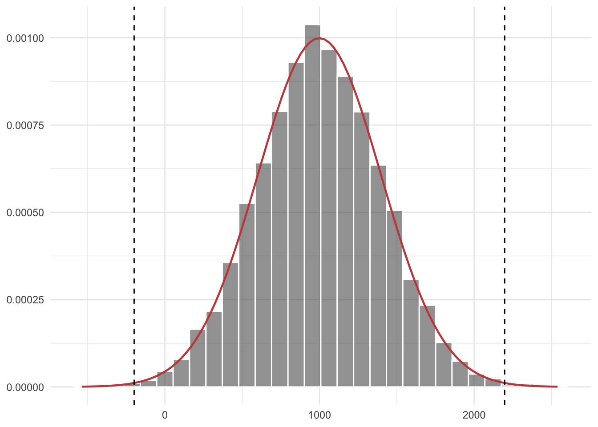
Como puedes darte cuenta, este teorema es importante en el análisis de datos porque permite cuantificar la dispersión y garantizar un mínimo porcentaje de valores dentro de un rango de desviaciones estándar, incluso cuando los datos no siguen una distribución normal. Así, complementa las medidas de tendencia central y dispersión, lo que nos da una base confiable para interpretar y resumir cualquier conjunto de datos, independientemente de su forma o momentos.
6.2.5 Validando los supuestos estadísticos
Una vez comprendida la importancia de las distribuciones y los fundamentos teóricos que las sustentan, el siguiente paso en nuestro análisis exploratorio de datos es verificar si los datos cumplen con ciertos supuestos que permitan aplicar de manera adecuada diferentes métodos de inferencia. Entre estos supuestos, el de normalidad ocupa un lugar central, ya que muchos procedimientos estadísticos, como pruebas de hipótesis, intervalos de confianza o modelos de regresión, parten de la idea de que los datos provienen de una población normalmente distribuida. Sin embargo, en la práctica los datos rara vez siguen esta distribución de manera exacta, por lo que resulta necesario apoyarse en pruebas estadísticas y herramientas gráficas que nos permitan evaluar de manera más clara si el supuesto de normalidad es correcto, o si debemos considerar alternativas más robustas o no paramétricas.
Además del supuesto de normalidad, ¿Qué otros supuestos se deben seguir? Básicamente, nos enfocaremos en los siguientes:
- Ausencia de homogeneidad de varianzas (Homoscedasticidad).
- Ausencia de autocorrelación.
- Ausencia de multicolinealidad.
- Normalidad.
Es importante destacar que estos supuestos no aplican a una variable aleatoria independiente aislada, sino a modelos estadísticos, tema que abordaremos con mayor profundidad en el siguiente capítulo. En esta sección, solo ofreceré una breve explicación introductoria de los modelos estadísticos, para que puedas entender los conceptos de homoscedasticidad, no autocorrelación y otros supuestos relacionados. Más adelante, en el siguiente capítulo, discutiremos en detalle a la regresión lineal y demás modelos relacionados.
6.2.5.1 Intervalos de confianza
Como conocimiento previo y necesario que debemos tener en cuenta antes de pasar directamente a la evaluación general de los supuestos estadísticos (y poder explicar de mejor manera las pruebas de hipótesis), debemos hacer un paréntesis para discutir los intervalos de confianza.
Un intervalo de confianza es un rango de valores que usamos para estimar un parámetro poblacional desconocido (Casella and Berger 2002), lo que dicho de manera más simple:
“Con base en los datos disponibles, creemos que el valor real se encuentra razonablemente entre este límite inferior y este límite superior”.
Por ejemplo, si analizamos una muestra de clientes y encontramos que el gasto promedio mensual es de 850 pesos, podríamos construir un intervalo de confianza del 95% y obtener algo como:
\[ IC_{95\%} = [810,\ 890] \]
Aunque esto no significa que el 95% de los clientes gastan entre 810 y 890 pesos, ya que sería una interpretación incorrecta. Lo que significa es que, bajo las condiciones del método utilizado, si repitiéramos muchas veces el mismo proceso de muestreo y construyéramos un intervalo de confianza en cada muestra, aproximadamente el 95% de esos intervalos contendrían el verdadero gasto promedio poblacional, es decir, el intervalo de confianza no describe directamente la variabilidad individual de los clientes, sino la incertidumbre asociada a nuestra estimación.
6.2.5.1.1 Estimación puntual e intervalo de confianza
Cuando calculamos una media, una proporción o una diferencia entre grupos a partir de una muestra, estamos obteniendo una estimación puntual, y se le llama así porque resume nuestra estimación en un solo valor, por ejemplo:
\[ \bar{x} = 850 \]
donde \(\bar{x}\) representa la media muestral. El problema usual es que una estimación puntual rara vez coincide exactamente con el valor poblacional verdadero. Si tomáramos otra muestra, probablemente obtendríamos una media ligeramente distinta, por eso, en lugar de quedarnos solo con un valor, construimos un rango alrededor de esa estimación.
La estructura general de un intervalo de confianza es:
\[ \text{Estimación puntual} \pm \text{Margen de error} \]
Respectivamente, el margen de error depende principalmente de tres elementos:
- La variabilidad de los datos.
- El tamaño de la muestra.
- El nivel de confianza elegido.
El cual, de forma general, podemos escribirlo como:
\[ IC = \hat{\theta} \pm \text{valor crítico} \times SE(\hat{\theta}) \]
Donde:
- \(\hat{\theta}\): Es el estimador muestral del parámetro que queremos conocer.
- \(SE(\hat{\theta})\): Es el error estándar del estimador.
- El valor crítico depende del nivel de confianza.
- El producto entre el valor crítico y el error estándar es el margen de error.
6.2.5.1.2 Error estándar
Como ya vimos previamente, la desviación estándar mide qué tanto varían los datos individuales respecto a su media. El error estándar, en cambio, mide qué tanto podría variar una estimación muestral de una muestra a otra.
Para una media, el error estándar se calcula como:
\[ SE(\bar{x}) = \frac{s}{\sqrt{n}} \]
Donde:
- \(s\): Es la desviación estándar muestral.
- \(n\): Es el tamaño de la muestra.
En esta fórmula, podemos ver que, conforme aumenta el tamaño de la muestra, el error estándar disminuye, es decir, muestras más grandes tienden a producir estimaciones más precisas, por ejemplo, si dos empresas estiman su ticket promedio y ambas tienen la misma desviación estándar, pero una lo hace con 50 clientes y otra con 5,000 clientes, la segunda estimación será mucho más estable, no porque sus clientes sean necesariamente menos variables, sino porque el tamaño de muestra reduce la incertidumbre de la media estimada.
6.2.5.1.3 Intervalo de confianza para una media
Cuando queremos estimar una media poblacional a partir de una muestra, usamos la siguiente forma general:
\[ IC = \bar{x} \pm t_{\alpha/2, n-1} \times \frac{s}{\sqrt{n}} \]
Donde:
- \(\bar{x}\): Es la media muestral.
- \(s\): Es la desviación estándar muestral.
- \(n\): Es el tamaño de la muestra.
- \(t_{\alpha/2, n-1}\): Es el valor crítico de la distribución \(t\) de Student.
- \(n-1\): Representa los grados de libertad.
Usamos la distribución \(t\) porque, en la práctica, casi nunca conocemos la desviación estándar poblacional, por lo que en su lugar, usamos la desviación estándar de la muestra como aproximación.
Supongamos que queremos estimar el ticket promedio de una tienda, por lo que tomamos una muestra de 100 compras y obtenemos:
\[ \bar{x} = 420 \]
\[ s = 80 \]
\[ n = 100 \]
El error estándar sería:
\[ SE(\bar{x}) = \frac{80}{\sqrt{100}} = 8 \]
Si usamos un nivel de confianza del 95%, el valor crítico será aproximadamente cercano a 1.984 para 99 grados de libertad, entonces:
\[ IC_{95\%} = 420 \pm 1.984(8) \]
\[ IC_{95\%} = 420 \pm 15.872 \]
\[ IC_{95\%} = [404.13,\ 435.87] \]
Esto se interpretaría de la siguiente manera: con base en esta muestra, estimamos que el ticket promedio poblacional se encuentra aproximadamente entre 404.13 y 435.87 pesos, usando un nivel de confianza del 95%.
6.2.5.1.4 Nivel de confianza
El nivel de confianza indica qué tan conservador será nuestro intervalo. Los niveles más comunes son:
\[ 90\%,\ 95\%,\ 99\% \]
Obviamente, un intervalo de confianza del 99% será más amplio que uno del 95%, porque exige mayor seguridad, pero en cambio, un intervalo del 90% será más estrecho, pero ofrece menor confianza. De hecho,es normal que en las primeras estapas de los estudios o investigaciones se usen intervalos más amplios, pero en las etapas finales e incluso en meta análisis se utilicen intervalos mucho más estrechos, ya que se busca una muy alta confianza en los resultados, por ejemplo, si estamos estimando la demanda esperada para tomar una decisión de inventario, probablemente queramos un intervalo más conservador, mientras que, si estamos haciendo una exploración inicial del comportamiento de usuarios, un intervalo del 90% puede ser suficiente para tener una idea rápida.
En el negocio, es bastante común trabajar con proporciones, por ejemplo, la proporción de clientes que compran después de recibir una promoción, la proporción de usuarios que hacen clic en un anuncio, la proporción de pedidos entregados a tiempo, etc.
Si queremos estimar una proporción poblacional, usamos:
\[ \hat{p} = \frac{x}{n} \]
Donde:
- \(x\): Es el número de casos exitosos.
- \(n\): Es el tamaño total de la muestra.
- \(\hat{p}\): Es la proporción muestral.
El error estándar de una proporción se calcula como:
\[ SE(\hat{p}) = \sqrt{\frac{\hat{p}(1-\hat{p})}{n}} \]
Por lo tanto, un intervalo de confianza aproximado para una proporción es:
\[ IC = \hat{p} \pm z_{\alpha/2} \times \sqrt{\frac{\hat{p}(1-\hat{p})}{n}} \]
Donde \(z_{\alpha/2}\) es el valor crítico de la distribución normal estándar, por ejemplo, supongamos que una empresa envía una campaña de email marketing a 1,000 usuarios y 120 hacen clic en el enlace principal, por lo que la proporción muestral sería:
\[ \hat{p} = \frac{120}{1000} = 0.12 \]
El error estándar sería:
\[ SE(\hat{p}) = \sqrt{\frac{0.12(1-0.12)}{1000}} \]
\[ SE(\hat{p}) = \sqrt{\frac{0.1056}{1000}} \]
\[ SE(\hat{p}) = 0.0103 \]
Para un intervalo del 95%, usamos aproximadamente:
\[ z_{\alpha/2} = 1.96 \]
Entonces:
\[ IC_{95\%} = 0.12 \pm 1.96(0.0103) \]
\[ IC_{95\%} = 0.12 \pm 0.0202 \]
\[ IC_{95\%} = [0.0998,\ 0.1402] \]
En porcentaje:
\[ IC_{95\%} = [9.98\%,\ 14.02\%] \]
Esto quiere decir que, con base en la muestra, estimamos que la tasa real de clics se encuentra aproximadamente entre 9.98% y 14.02%.
Ahora bien, muchas veces no queremos estimar una sola media, sino comparar dos grupos, por ejemplo, el ticket promedio entre clientes nuevos y recurrentes, las ventas promedio entre dos promociones, etc, por lo que en esos casos, el parámetro de interés es la diferencia entre medias poblacionales:
\[ \mu_1 - \mu_2 \]
A partir de los datos, estimamos esa diferencia como:
\[ \bar{x}_1 - \bar{x}_2 \]
Un intervalo de confianza para la diferencia entre dos medias independientes tiene la forma general:
\[ IC = (\bar{x}_1 - \bar{x}_2) \pm t_{\alpha/2} \times SE(\bar{x}_1 - \bar{x}_2) \]
Cuando asumimos varianzas distintas entre los grupos, el error estándar se calcula como:
\[ SE(\bar{x}_1 - \bar{x}_2) = \sqrt{ \frac{s_1^2}{n_1} + \frac{s_2^2}{n_2} } \]
Donde:
- \(\bar{x}_1\) y \(\bar{x}_2\): Son las medias muestrales.
- \(s_1^2\) y \(s_2^2\): Son las varianzas muestrales.
- \(n_1\) y \(n_2\): Son los tamaños de muestra.
Este intervalo es especialmente útil porque no solo nos dice si un grupo tiene una media mayor que otro, sino también qué tan grande podría ser esa diferencia, por ejemplo, si una promoción A tiene ventas promedio de 58 mil pesos y una promoción B tiene ventas promedio de 52 mil pesos, la diferencia puntual es:
\[ 58 - 52 = 6 \]
Pero esa diferencia por sí sola no nos dice si es estable o si podría deberse al azar, por lo que un intervalo de confianza podría darnos algo como:
\[ IC_{95\%} = [2.1,\ 9.9] \]
En este caso, el intervalo completo está por encima de cero, lo que sugiere que la promoción A tiene ventas promedio mayores que la promoción B, pero si el intervalo fuera:
\[ IC_{95\%} = [-1.5,\ 13.5] \]
Entonces la interpretación sería distinta, aunque la diferencia observada sigue siendo de 6, el intervalo incluye al cero, por lo que no tenemos suficiente evidencia para descartar que la diferencia real sea nula.
Cuando discutamos el A/B testing más adelante, vamos a retomar este tema en particular, ya que será de gran importancia.
6.2.5.1.5 Precisión del intervalo
Como ya mencionamos previamente, un intervalo más estrecho indica mayor precisión, mientras que un intervalo más amplio indica mayor incertidumbre, y la amplitud del intervalo depende de:
\[ \text{Amplitud} \propto \text{valor crítico} \times SE \]
Por su parte, como el error estándar depende del tamaño de muestra, podemos decir que:
\[ n \uparrow \Rightarrow SE \downarrow \Rightarrow IC \text{ más estrecho} \]
Mientras más grande sea la muestra, más preciso será el intervalo, siempre que la muestra sea representativa y los datos estén bien medidos, aunque es importante notar que una muestra grande no corrige un mal diseño de recolección de datos. Si la muestra está sesgada, el intervalo puede ser estrecho pero incorrecto, por ejemplo, si queremos estimar la satisfacción de todos los clientes pero solo encuestamos a los clientes más frecuentes, el intervalo podría parecer muy preciso, aunque no represente correctamente a toda la base de clientes.
Ahora bien, una interpretación incorrecta muy común es decir, por ejemplo, “Hay 95% de probabilidad de que el parámetro esté dentro de este intervalo”, porque desde el enfoque clásico o frecuentista esto no es correcto, ya que el parámetro poblacional es fijo, aunque desconocido, siendo lo que varía es el intervalo, porque depende de la muestra que obtuvimos. En estos casos, la mejor forma de expresarlo sería, por ejemplo, “Si repitiéramos el proceso de muestreo muchas veces y construyéramos intervalos de confianza del 95%, aproximadamente el 95% de esos intervalos contendrían el verdadero parámetro poblacional”.
Pasando a la parte práctica, en R podemos calcular intervalos de confianza de varias formas, por ejemplo, para una media podemos usar t.test(), incluso si no estamos interesados principalmente en una prueba de hipótesis, porque la función también devuelve el intervalo de confianza. Usemos como ejemplo los clásicos datos iris, ya que estamos discutiendo un tema que es meramente un fundamento para la estadística descriptiva, por lo que no hay necesidad de usar datos más específicos:
t.test(iris$Sepal.Length, conf.level = 0.95)
One Sample t-test
data: iris$Sepal.Length
t = 86.425, df = 149, p-value < 0.00000000000000022
alternative hypothesis: true mean is not equal to 0
95 percent confidence interval:
5.709732 5.976934
sample estimates:
mean of x
5.843333 Claro que, si únicamente quisiéramos el intervalo de confianza, lo podríamos calcular manualmente:
media <- mean(iris$Sepal.Length, na.rm = TRUE)
desv <- sd(iris$Sepal.Length, na.rm = TRUE)
n <- sum(!is.na(iris$Sepal.Length))
error_estandar <- desv / sqrt(n)
valor_critico <- qt(0.975, df = n - 1)
limite_inferior <- media - valor_critico * error_estandar
limite_superior <- media + valor_critico * error_estandar
c(limite_inferior, limite_superior)[1] 5.709732 5.976934Y podríamos leerlo como que, con base en los datos disponibles en iris, la longitud promedio real del sépalo se estima entre 5.71 y 5.98 unidades, usando un nivel de confianza del \(95\%\), tan sencillo como eso.
6.2.5.2 Pruebas de hipótesis
Antes de adentrarnos en las pruebas de normalidad y en la evaluación de otros supuestos estadísticos, considerando que ya sabemos cómo funcionan los intervalos de confianza, es fundamental comprender el concepto de pruebas de hipótesis, ya que estas constituyen la base teórica sobre la cual se construyen todas estas evaluaciones, además de que serán muy recurrentes a partir de ahora y para el siguiente capítulo.
Una prueba de hipótesis es un procedimiento estadístico que nos permite tomar decisiones sobre una población a partir de información obtenida de una muestra, estableciendo si existe evidencia suficiente para aceptar o rechazar una afirmación específica (Casella and Berger 2002). Básicamente, las pruebas de hipótesis parten de dos proposiciones:
Hipótesis nula \(H_0\): Representa el estado de referencia o ausencia de efecto (lo que asumimos verdadero al inicio).
Hipótesis alternativa \(H_1\): Representa la existencia de un efecto o diferencia (lo que queremos probar que podría ser verdadero).
Generalmente, las pruebas de hipótesis se basan en un nivel de significancia, representado como \(\alpha\), que nos dice la probabilidad de cometer un error tipo I, es decir, rechazar la hipótesis nula cuando en realidad es verdadera. En la mayoría de los casos verás que se utiliza el nivel de significancia \(\alpha = 0.05\) (5%), sin embargo, este valor no es obligatorio y puede ajustarse según la importancia del análisis o el riesgo que estemos dispuestos a asumir. Por ejemplo, en estudios donde cometer un error tipo I sería muy costoso o peligroso, se suelen usar niveles más estrictos, como \(\alpha = 0.01\) (10%).
Ahora, para calcular la diferencia entre el valor observado y el valor esperado con la variabilidad natural de los datos (error esperado), podemos hacer uso de la siguiente fórmula:
\[ \text{Estadístico} = \frac{\text{Valor observado } - \text{ Valor esperado bajo } H_0 }{\text{Error esperado}} \]
Donde el valor observado corresponde a la estimación obtenida a partir de nuestra muestra, por ejemplo, la media \(\overline{X}\); el valor esperado bajo \(H_0\) es el parámetro poblacional que asumimos verdadero según la hipótesis nula; y el error esperado representa la variabilidad que podemos esperar por azar en la muestra.
Esta fórmula nos permite cuantificar de manera estandarizada qué tan lejos se encuentra nuestro valor muestral del valor que esperaríamos si la hipótesis nula fuera verdadera.
Para entender este concepto de mejor manera, veamos un ejemplo rápido: Supongamos que tenemos una población con una media \(\overline{X}\), y suponemos que ese valor es igual a un valor \(\mu\), por lo que en nuestra hipótesis nula el valor de la media será \(\mu_0\). Para poder comprobar lo anterior, vamos a tomar una muestra de la población de tamaño \(n\) para calcular su media muestral \(\overline{X}\). ¿Esta media muestral es lo suficientemente diferente de \(\mu_0\) como para dudar de la hipótesis nula? Esto lo podemos saber si utilizamos el estadístico de prueba que explicamos hace un momento, siendo en este caso:
\[ \text{Estadístico} = \frac{ \overline{X} - \mu_0 }{ S / \sqrt{n} } \]
Donde el error estimado estará dado por \(S\), que es la desviación estandar de la muestra, y la raiz de \(n\), el tamaño de la muestra. Podemos representar el estadístico como \(T\), es decir:
\[ T = \frac{ \overline{X} - \mu_0 }{ S / \sqrt{n} } \]
Siendo que, si el valor de \(T\) es muy cercano a 0, entonces la media muestral está muy cerca del valor esperado bajo \(H_0\), por lo que no hay evidencia suficiente para rechazar la hipótesis nula. Respectivamente, si el valor absoluto8 de \(T\) es grande, la media de la muestra se aleja mucho de \(\mu_0\), por lo que hay evidencia para rechazar la hipótesis nula \(H_0\).
Después de calcular el estadístico de prueba \(T\), necesitamos averiguar si la diferencia observada entre nuestra muestra y lo que dice la hipótesis nula es lo suficientemente grande como para considerarla significativa. Para ello, comparamos \(T\) con los valores críticos de una distribución estadística. Para esto tenemos tres distribuciones que podemos usar:
Distribución \(t\) de Student
- Se utiliza cuando la desviación estándar poblacional \(\sigma\) es desconocida y debe estimarse a partir de la muestra \(S\), particularmente cuando tenemos muestra pequeñas (de menos de 30 observaciones).
- Los valores críticos dependen del nivel de significancia y los grados de libertad (\(n - 1\)).
- Si el valor absoluto de \(T\) supera el valor crítico de la \(t\), se rechaza la hipótesis nula.
Distribución Z
- Se utiliza cuando la desviación estándar poblacional \(\sigma\) es conocida, o cuando el tamaño de la muestra es grande (mayor a 30 observaciones).
- El valor crítico se obtiene de la distribución normal estándar, es decir: \[ Z = \frac{X-\mu}{\sigma} \]
- Al igual que con la \(t\), si el valor absoluto de Z supera el valor crítico, se rechaza la hipótesis nula.
Distribución \(\chi^2\)
- Se utiliza principalmente en pruebas de varianza, bondad de ajuste y en pruebas de independencia en tablas de contingencia.
- El estadístico de esta distribución está calculado por: \[ \chi^2 = \sum \frac{(O_i - E_i)^2 }{E_i} \] Donde \(O_i\) son las frecuencias observadas y \(E_i\) las frecuencias esperadas.
- Al igual que con la \(t\) y la \(Z\), si el valor del estadístico \(\chi^2\) calculado supera el valor crítico de la distribución \(\chi^2\) con los grados de libertad correspondientes, se rechaza la hipótesis nula.
Aunque parezca poco intuitivo, en pruebas de hipótesis jamás decimos que aceptamos la hipótesis nula. Lo normal es decir que no rechazamos la hipótesis nula. La primera frase no es estrictamente incorrecta, pero no es común ni recomendable utilizarla en la práctica estadística.
En las pruebas de hipótesis, la regla que se establece para decidir si se rechaza o no la hipótesis nula se denomina regla de decisión.
Vamos ahora a hacer un ejemplo sencillo en R para entender mejor esta idea: Supongamos una muestra pequeña con veinte observaciones:
# Muestra de 20 observaciones
muestra <- c(52, 49, 51, 50, 53, 48, 54, 50, 51, 49,
52, 50, 51, 48, 53, 49, 50, 52, 51, 50)En este caso la escribí manualmente para que la media sea incierta en este caso. Vamos a presuponer que la media de la población general es 50, por lo que nuestra hipótesis nula:
# Hipótesis nula: la media poblacional es 50
mu_0 <- 50Vamos ahora a calcular la media y desviación estandar de la muestra:
# Media y desviación estándar de la muestra
media_muestral <- mean(muestra)
sd_muestral <- sd(muestra)
n <- length(muestra)A partir de ello, y considerando que la muestra es bastante pequeña (de menos de 30 observaciones), vamos a calcular el estadístico \(T\):
# Estadístico t
T <- (media_muestral - mu_0)/(sd_muestral / sqrt(n))
T[1] 1.747909Y, finalmente, vamos a obtener el valor crítico de la distribución \(t\), con un nivel de significancia del 5% (\(\alpha = 0.05\)), es decir:
# Valor crítico para alpha = 0.05
alpha <- 0.05
t_critico <- qt(1 - alpha/2, df = n-1)
t_critico[1] 2.093024¿El valor absoluto de \(T\) es mayor que el valor crítico como para rechazar la hipótesis nula? No tengo idea, así que vamos a hacer una estructura condicional para confirmar esto:
# Comparación
if(abs(T) > t_critico){
print("Rechazamos H0")
} else {
print("No rechazamos H0")
}[1] "No rechazamos H0"De esta forma, podemos concluir que no hay evidencia suficiente para rechazar que la media poblacional sea 50, pero esto no confirma de manera absoluta que la media sea exactamente 50. La prueba de hipótesis está diseñada para evaluar si los datos muestran suficiente evidencia para cuestionar la hipótesis nula, no para confirmarla de manera absoluta. Siempre existe incertidumbre debido a la variabilidad natural de las muestras.
Nótese que, en el ejercicio anterior, hicimos uso de la prueba \(t\), ya que teníamos una muestra pequeña, sin embargo, en casos donde la muestra fuese más grande, o donde conociéramos la desviación estandar poblacional, podríamos hacer uso del estadístico Z, el cual podríamos calcular como:
Z <- (media_muestral - mu_0)/(sigma/sqrt(n))Donde sigma es la desviación estandar poblacional. Ahora, vamos a comparar con el valor crítico, el cual podríamos obtener usando la función qnorm() (en lugar de qt(), correspondiente a la distribución \(t\)), es decir:
alpha <- 0.05
z_critico <- qnorm(1 - alpha/2)Más adelanta, revisaremos pruebas que no utilizan directamente un estadístico t o Z para hacer la prueba de hipótesis. En estos casos, la decisión no se toma comparando el valor crítico del estadístico con un umbral teórico, sino que se hace uso del p-value, el cual representa la probabilidad de obtener un resultado tan extremo como el observado, suponiendo que la hipótesis nula sea cierta, siendo su notación matemática:
\[ p-value = P (\text{resultado tan extremo como el observado } | \; H_0 \text{ verdadera}) \]
Así como con los otros estadísticos, el \(p\)-value se asocia a un nivel de significancia (denotado como \(\alpha\)) previamente establecido, siendo el más común el nivel de significancia del 5%. Sin embargo, esto no constituye una regla definitiva. Como mencionamos anteriormente, habrá casos en los que conviene utilizar un nivel de significancia más pequeño, por ejemplo \(\alpha = 0.01\), cuando se requiere ser más estricto con la evidencia en contra de la hipótesis nula. Sea cual sea el nivel de significancia de \(\alpha\), la regla de decisión será la siguiente:
- Si \(p-value > \alpha\), no se rechaza la hipótesis nula \(H_0\).
- Si \(p-value \leq \alpha\), se rechaza la hipótesis nula \(H_0\).
Ya que conocemos como funcionan las pruebas de hipótesis, estamos en posición de aplicar este conocimiento para evaluar los supuestos estadísticos de nuestros datos, comenzando por el supuesto de normalidad. Comprender cómo calcular un estadístico de prueba, compararlo con valores críticos y tomar decisiones basadas en evidencia nos permite ahora realizar pruebas formales de normalidad.
6.2.5.3 Comparación de medias: Pruebas t
Hasta ahora hemos visto la lógica general detrás de las pruebas de hipótesis: plantear una hipótesis nula, calcular un estadístico de prueba y decidir si la evidencia observada es suficientemente extrema como para rechazar \(H_0\).
Una de las aplicaciones más importantes (y más comunes) de la estadística inferencial es la comparación de medias, ya que en estadística aplicada, muchas de las preguntas que queremos responder pueden expresarse como comparaciones del tipo:
- ¿El promedio de una población es diferente de cierto valor?
- ¿Una intervención cambió el promedio de una variable antes y después?
Para responder este tipo de preguntas, una de las herramientas que estaremos abordando es la familia de pruebas conocidas como pruebas t de Student (que ya mencionamos brevemente en la sección previa), o simplemente t-tests (Student 1908). Muy seguramente ya habrás escuchado de estas pruebas en tus clases de estadística, aunque no siempre son explicadas de una forma muy intuitiva.
Este tipo de pruebas se utilizan cuando queremos hacer inferencia sobre medias poblacionales, particularmente en escenarios donde:
- El tamaño muestral es pequeño.
- La desviación estándar poblacional es desconocida y debemos estimarla a partir de la muestra.
A continuación revisaremos los tres casos más comunes: el t-test de una muestra, el de dos muestras independientes y el t-test pareado.
6.2.5.3.1 t-test de una muestra
El caso más sencillo ocurre cuando tenemos una única muestra y queremos comparar su media contra un valor teórico o histórico. La pregunta que nos haremos es: ¿La media poblacional es igual a un valor específico \(\mu_0\)?. En este caso, la hipótesi será equivalente a:
\[ \begin{aligned} H_0 &: \mu = \mu_0 \\ H_1 &: \mu \neq \mu_0 \end{aligned} \]
El estadístico de prueba es el que ya hemos visto anteriormente:
\[ T = \frac{ \overline{X} - \mu_0}{S/ \sqrt{n}} \]
Donde:
- \(\overline{X}\) es la media muestral.
- \(S\) es la desviación estándar de la muestra.
- \(n\) es el tamaño de la muestra.
Bajo la hipótesis nula, si \(T\) es cercano a 0 entonces la muestra es compatible con \(\mu_0\).
Vale la pena preguntarse, ¿Por qué usamos el estadístico t en este caso? Cuando no conocemos la desviación estándar real de la población (en la gran mayoría de los estudios que hacemos), debemos estimarla utilizando la desviación estándar muestral \(S\). Esta estimación introduce incertidumbre adicional, especialmente cuando el tamaño de la muestra es pequeño. Por esta razón, el estadístico de prueba no sigue exactamente una distribución normal, sino que, bajo \(H_0\):
\[ T \sim t_{n-1} \]
Es decir, el estadístico sigue una distribución \(t\) con $n−1 $ grados de libertad.
Dicho en español, esto significa que si la hipótesis nula fuera cierta, entonces el valor de \(T\), debería comportarse como un valor típico dentro de esa distribución y, por lo tanto, la media observada en la muestra no se aleja demasiado del valor teórico.
Vamos a ver un ejercicio sencillo en R. Supongamos que queremos evaluar si la media de una muestra es igual a 50:
set.seed(123)
# Muestra
muestra <- rnorm(20, mean = 52, sd = 4)
# Prueba t de una muestra
t.test(muestra, mu = 50)
One Sample t-test
data: muestra
t = 2.9501, df = 19, p-value = 0.008221
alternative hypothesis: true mean is not equal to 50
95 percent confidence interval:
50.74561 54.38738
sample estimates:
mean of x
52.5665 El resultado de la funcion t.test() nos dice lo siguiente:
- El estadístico \(t\).
- Los grados de libertad.
- El \(p-value\).
- Un intervalo de confianza para la media.
el resultado de la prueba t nos proporciona evidencia estadística suficiente para rechazar la hipótesis nula de que la media poblacional sea igual a 50. En este caso, la media muestral observada fue de aproximadamente 52.57, y el valor p obtenido (\(p=0.0082\)) es considerablemente menor que el nivel de significancia del 5%, lo cual indica que sería muy poco probable observar una diferencia tan grande únicamente por variabilidad aleatoria si en realidad \(H_0\) fuera cierta.
6.2.5.3.2 t-test de dos muestras independientes
La prueba \(t\) de dos muestras independientes se utiliza cuando queremos comparar la media de dos poblaciones distintas, es decir, cuando tenemos dos grupos que no están relacionados entre sí, por ejemplo:
- Grupo control vs grupo tratamiento
- Ciudad A vs ciudad B.
Y la lógica a aplicar es básicamente la misma, planteando ahora la prueba de hipótesis como:
\[ \begin{aligned} H_0 &: \mu_1 = \mu_2 \\ H_1 &: \mu_1 \neq \mu_2 \end{aligned} \]
En este caso, además de normalidad e independencia, suele asumirse que las varianzas de ambos grupos son iguales (homoscedasticidad). Si esta condición no se cumple, puede utilizarse la corrección de Welch (que discutiremos más adelante).
Vamos ahora a ver un ejemplo sencillo en R, simplemente añadiendo dos muestras:
set.seed(123)
# Grupo 1
grupo_1 <- rnorm(25, mean = 50, sd = 5)
# Grupo 2
grupo_2 <- rnorm(25, mean = 55, sd = 5)
# Prueba t múltiple
t.test(grupo_1, grupo_2, var.equal = TRUE)
Two Sample t-test
data: grupo_1 and grupo_2
t = -4.3032, df = 48, p-value = 0.00008238
alternative hypothesis: true difference in means is not equal to 0
95 percent confidence interval:
-8.330028 -3.024649
sample estimates:
mean of x mean of y
49.83335 55.51069 Nótese que el argumento var.equal = TRUE indica que estamos asumiendo varianzas iguales. Si no estamos seguros de ello, lo mejor será usar la versión robusta, simplemente ignorando el argumento (t.test(grupo_1, grupo_2)). Ahora, podemos darnos cuenta de que (ignorando la notación científica) el p-value es extremadamente pequeño para el nivel de significancia manejado del 95% (e incluso para niveles de significancia más estrictos), por lo que podemos concluir que rechazamos la hipótesis nula de igualdad de medias y concluimos que existe evidencia estadísticamente significativa de que los promedios de ambos grupos son distintos.
6.2.5.3.3 t-test pareado
El t-test pareado se utiliza cuando las observaciones no son independientes, sino que están emparejadas naturalmente. Esto ocurre en situaciones del tipo:
- Antes vs después
- Medición pre-tratamiento y post-tratamiento
Entre otros casos. En lugar de comparar dos medias independientes, lo que se evalúa es si el promedio de las diferencias es igual a cero, siendo la prueba de hipótesis:
\[ \begin{aligned} H_0 &: \mu_d = 0 \\ H_1 &: \mu_d \neq 0 \end{aligned} \]
Donde \(\mu_d\) es la media poblacional de las diferencias.
No es necesario entrar en mayor detalle, ya que el test es el mismo. Simplemente vamos a ver un último ejemplo en R para este caso particular. Supongamos que medimos el número de casos antes y después de una intervención:
set.seed(123)
# Medición antes
antes <- rnorm(15, mean = 100, sd = 10)
# Medición después
despues <- antes - rnorm(15, mean = 5, sd = 5)
# Prueba t pareada
t.test(antes, despues, paired = TRUE)
Paired t-test
data: antes and despues
t = 2.6707, df = 14, p-value = 0.01827
alternative hypothesis: true mean difference is not equal to 0
95 percent confidence interval:
0.7418115 6.7922699
sample estimates:
mean difference
3.767041 En este caso, el análisis se basa en las diferencias individuales:
\[ d_i = \text{antes}_i - \text{después}_i \]
Como es evidente, el p-value es suficientemente pequeño como para considerarse estadísticamente significativo respecto al nivel de significancia (valga la redundancia) del 95%, por lo que podemos rechazamos la hipótesis nula y, por tanto, concluir que existe evidencia estadística de que el promedio de las diferencias no es cero. Dicho de otra manera, las mediciones posteriores tienden a ser distintas de las iniciales.
6.2.5.4 Normalidad: Pruebas formales para este supuesto
A lo largo de esta sección vamos a discutir las pruebas que podemos utilizar para evaluar la normalidad de una muestra. Este paso resulta fundamental porque, como mencionamos anteriormente, si este supuesto no se cumple en los datos que estemos analizando, las conclusiones derivadas de ciertos análisis que haremos más adelante van a estar sesgadas, o pueden ser poco fiables. El siguiente capítulo estará centrado en los pronósticos y correlaciones que podemos obtener de nuestros datos, razón por la que es fundamental entender cómo verificar la normalidad en esta etapa. De esta manera, podremos asegurarnos de que los modelos que utilicemos se ajusten correctamente a las características de la información, evitando interpretaciones erróneas.
A continuación, revisaremos pruebas formales, como el test de Shapiro-Wilk, Jarque-Bera o Kolmogorov-Smirnov (Thode 2002), y en la siguiente sección analizaremos aproximaciones más prácticas que combinan la evidencia numérica con la evaluación visual de gráficos.
6.2.5.4.1 Prueba de Shapiro-Wilk
Como primera prueba estadística formal a analizar, se encuentra la prueba de Shapiro-Wilk, la cual tiene como propósito evaluar si los datos de una muestra pueden considerarse como provenientes de una distribución normal. Esta prueba fue propuesta en 1965 por Samuel Shapiro y Martin Wilk y, desde entonces, se ha consolidado como una de las más relevantes para detectar normalidad, debido a su alta potencia para detectar desviaciones respecto a la distribución normal (Shapiro and Wilk 1965).
Una de las principales razones de su importancia es que, en comparación con otras pruebas de normalidad, la prueba de Shapiro-Wilk suele mostrar un mayor sensibilidad, inclusive cuando se trabaja con tamaños muestrales pequeños o moderados (menores a 50 observaciones). Esta prueba puede ser ser aplicable hasta rangos de 2000 datos.
Básicamente, esta prueba se basa en el cálculo de un estadístico \(W\), definido por la siguiente fórmula:
\[ W = \frac{ \left( \sum_{i = 1}^{n} \alpha_i x_{(i)} \right)^2 }{\sum_{i = 1}^{n} (x_i - \overline{x} )^2 } \]
Donde:
- \(x_{(i)}\) es el i-ésimo valor ordenado de la muestra, es decir, los datos dispuestos de menor a mayor.
- \(x_1\) es el i-ésimo dato original de la muestra sin ordenar.
- \(\overline{x}\) es la media aritmética muestral.
- \(\alpha_i\) son los coeficientes calculados a partir de los cuantiles esperados de una distribución normal estándar. Estos coeficientes se calculan en función de la varianza-covarianza de los orden estadísticos teóricos, y estos deben ser simétricos al centro de la muestra (\(\alpha_i = -\alpha_{n+1-i}\)).
- \(n\) es el tamaño de la muestra.
De forma general, el numerador \(\left( \sum_{i = 1}^{n} \alpha_i x_{(i)} \right)^2\) equivale al grado de alineación de los datos con los cuantiles esperados de una distribución normal, mientras que el denominador \(\sum_{i = 1}^{n} (x_i - \overline{x} )^2\) a la suma de los cuadrados de las desviaciones respecto a la media.
Dado lo anterior, el estadístico \(W\) siempre va a tomar valores dentro del rango de \((0,1]\). Estos valores se pueden interpretar de la siguiente manera: Entre más cercano se encuentre el resultado de la prueba a 1, los datos estarán bien ajustados a la distribución evaluada (distribución normal), mientras que valores más alejados de 1 implican desviaciones significativas (debido a asimetría, colas pesadas, multimodalidad o la presencia de valores atípicos, etc).
Lógicamente, la prueba de hipótesis es la siguiente:
- Hipótesis nula \(H_0\): Los datos provienen de una distribución normal.
- Hipótesis alternativa \(H_1\): Los datos no provienen de una distribución normal.
Siendo que para la regla de decisión, como es de esperarse, calcularemos el \(p-valor\) asociado al estadístico \(W\), donde:
- Si \(p-value > \alpha\), no se rechaza la hipótesis nula \(H_0\), por lo que la evidencia indica que los datos son compatibles con la normalidad.
- Si \(p-value \leq \alpha\), se rechaza la hipótesis nula \(H_0\), por lo que la evidencia indica que los datos no son compatibles con una distribución normal.
Esta prueba es particularmente interesante, ya que es bilateral, lo que implica que cualquier desviación de la normalidad (como asimetría, colas pesadas, etc), llevará a rechazar \(H_0\)
Vamos a ver un ejercicio sencillo en R. Afortunadamente para nosotros, ya tenemos por defecto una función para calcular este estadístico, por lo que simplemente debemos usar shapiro.test(). Vamos a aplicarlo a una muestra de mil observaciones:
# Muestra a analizar
set.seed(123)
muestra_norm <- rnorm(1000)
# Prueba de Shapiro-Wilk
shapiro.test(muestra_norm)
Shapiro-Wilk normality test
data: muestra_norm
W = 0.99838, p-value = 0.4765Como podemos darnos cuenta, el valor de \(p\) es mayor a un nivel de significancia \(\alpha = 0.05\), por lo que no se rechaza la hipótesis nula y, por lógica, hay evidencia para concluir que la distribución es normal. Claro que ya esperábamos ese resultado, ya que usamos una función rnorm(), pero si intentáramos esto con una distribución diferente, por ejemplo:
# Cambio de notación para ver el valor exacto de p
options(scipen = 999)
# Muestra a analizar
set.seed(123)
muestra_norm <- rexp(1000)
# Prueba de Shapiro-Wilk
shapiro.test(muestra_norm)
Shapiro-Wilk normality test
data: muestra_norm
W = 0.82872, p-value < 0.00000000000000022En este caso tenemos un valor de \(p\) sumamente pequeño, por lo que si rechazamos la hipótesis nula, concluyendo que la distribución no es normal.
6.2.5.4.2 Prueba de Kolmogorov-Smirnov.
Otra de las pruebas estadísticas más utilizadas para contrastar la normalidad de una muestra es la prueba de Kolmogorov-Smirnov (K-S). Su origen se remonta a 1933, cuando fue propuesta por Andrey Kolmogorov y después ampliada por Nikolai Smirnov. Esta prueba se distingue por ser no paramétrica y se utiliza para evaluar la bondad de ajuste de una distribución teórica respecto a una muestra de datos observados (Kolmogorov 1933).
El propósito principal de la prueba es determinar si una muestra proviene de una distribución específica (en este caso, la normal). Para ello, se basa en la comparación entre la función de distribución acumulada empírica (FDE) de la muestra y la función de distribución acumulada teórica (FDT) de la distribución de referencia.
Matemáticamente, el estadístico de Kolmogorov-Smirnov, denotado como \(D\), se define como:
\[ D = \sup_x \left| F_n(x) - F(x) \right| \]
Donde:
- \(F_n(x)\) es la función de distribución empírica de la muestra (la proporción de datos menores o iguales a \(x\)).
- \(F(x)\) es la función de distribución acumulada teórica de la distribución que se desea contrastar (por ejemplo, la normal).
- \(\sup_x\) representa el supremo (máximo) de las diferencias absolutas a lo largo de todos los valores posibles de \(x\).
Básicamente, el estadístico \(D\) mide la máxima diferencia entre la distribución empírica observada y la distribución teórica esperada, siendo que los valores del estadístico pueden interpretarse de la siguiente manera:
- Valores pequeños de \(D\) indican que la muestra se ajusta bien a la distribución especificada (la normal, en este caso).
- Valores grandes de \(D\) sugieren que existen diferencias significativas entre los datos y la distribución teórica.
Al igual que en la prueba de Shapiro-Wilk, la interpretación se realiza a través del \(p-value\). Si este resulta menor que un nivel de significancia de \(\alpha\), se rechaza la hipótesis nula.
Respectivamente, la prueba de hipótesis en este caso es:
- Hipótesis nula \(H_0\): Los datos provienen de la distribución especificada (normal).
- Hipótesis alternativa \(H_1\): Los datos no provienen de la distribución especificada.
Es importante mencionar que, para esta prueba, aunque puede aplicarse a distintos tipos de distribuciones, su sensibilidad depende en gran medida del tamaño de la muestra y de los parámetros de la distribución. En particular, cuando se usa para probar normalidad, se suele emplear una variante conocida como prueba de Lilliefors, que ajusta los parámetros de la distribución normal (media y varianza) a partir de la propia muestra.
Vamos a ver un ejemplo sencillo en R de esta prueba. Para este caso, vamos a usar la función ks.test() ajustada para una distribución normal, utilizando los parámetros de media y desviación estándar estimados a partir de la propia muestra. Para este ejercicio vamos a utilizar mil observaciones:
# Muestra a analizar
set.seed(123)
muestra_norm <- rnorm(1000)
# Prueba de Kolmogorov-Smirnov
ks.test(muestra_norm, "pnorm",
mean = mean(muestra_norm),
sd = sd(muestra_norm))
Asymptotic one-sample Kolmogorov-Smirnov test
data: muestra_norm
D = 0.014963, p-value = 0.9786
alternative hypothesis: two-sidedLógicamente, al tener un \(p-value\) mucho más grande que el nivel de significancia del 0.05 (5%), entonces no podemos rechazar la hipótesis nula \(H_0\), ya que hay evidencia de que la muestra se ajusta bien a una distribución normal.
Ahora, como mencionamos anteriormente, para distribuciones normales es recomendable utilizar la variación de la prueba de Kolmogorov-Smirnov conocida como prueba de Lilliefors, ya que la prueba KS original asume que los parámetros de la distribución (media y desviación estándar) son conocidos. En la práctica, esto rara vez ocurre, ya que generalmente se deben estimar a partir de la propia muestra. La prueba de Lilliefors ajusta el cálculo del \(p-value\) considerando que los parámetros se estiman de los datos, lo que la hace más adecuada para contrastar normalidad en muestras reales. Para esta prueba en específico podemos usar la función lillie.test() de la librería nortest:
library(nortest)
# Variación mediante la prueba de Lilliefors
lillie.test(muestra_norm)
Lilliefors (Kolmogorov-Smirnov) normality test
data: muestra_norm
D = 0.014963, p-value = 0.8484Y, al igual que en la prueba original, vamos a interpretar el resultado de forma similar, no rechazando la hipótesis nula ya que el \(p-value\) es mayor al nivel de significancia al 0.05.
De hecho, podemos comparar gráficamente las funciones de densidad empírica y teórica, para tener una mejor comprensión de la distribución de nuestros datos, lo que nos ayudará a confirmar el resultado de las pruebas de normalidad que acabamos de hacer. Obviamente, cuando ambas curvas se alinean de forma cercana, se refuerza la conclusión de que los datos provienen de una distribución normal, mientras que diferencias visibles entre ellas indicarían que la muestra se aleja de dicho supuesto.
Para comenzar, vamos a organizar los datos que simulamos en una tabla, de modo que podamos tenerlos listos para graficar tanto la densidad empírica como la teórica en el mismo plano:
# Tabla de la FDE
muestra_ordenada <- sort(muestra_norm)
n <- length(muestra_ordenada)
# Función de distribución acumulada
F_emp <- ecdf(muestra_norm)
df_emp <- tibble(
x = muestra_ordenada,
y = F_emp(muestra_ordenada)
)Vamos ahora a crear una función de densidad teórica:
# Tabla de la FDT
x_vals <- seq(min(muestra_norm), max(muestra_norm), length.out = 100)
F_teor <- pnorm(x_vals, mean = mean(muestra_norm), sd = sd(muestra_norm))
df_teor <- tibble(
x = x_vals,
y = F_teor
)Y, finalmente, vamos a comparar los resultados en un gráfico sencillo:
# Gráfico de comparación
ggplot() +
geom_step(data = df_emp, aes(x = x, y = y,
color = "FDE (empírica)"), size = 0.7) +
geom_line(data = df_teor, aes(x = x, y = y,
color = "FDT (teórica)"), size = 0.7) +
labs(x = NULL,
y = NULL,
color = "Distribución") +
scale_color_manual(values = c("FDE (empírica)" = "#4167ba",
"FDT (teórica)" = "#c74a4a")) +
theme_minimal() +
theme(legend.position = "top")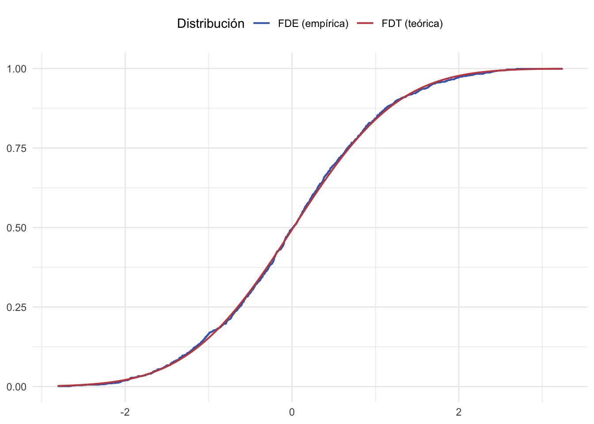
Esta no es una prueba formal como tal, y de hecho, en la siguiente sección analizaremos pruebas no paramétricas (gráficos) de normalidad, sin embargo, esta me pareció una excelente oportunidad para comparar la función de densidad empírica con la función de densidad teórica ddescritas en la prueba de KS, ya que esta también es una forma muy intuitiva de confirmar los resultados obtenidos.
6.2.5.4.3 Prueba de Jarque-Bera
Si tuviste clases de econometría o estadística aplicada, muy probablemente ya conoces esta prueba, pero de igual forma le dedicaré una sección a continuación.
Otra de las pruebas más utilizadas para evaluar la normalidad de una muestra es la prueba de Jarque-Bera (JB). Esta es de las más recientes, ya que fue propuesta en 1980 por Carlos Jarque y Anil K. Bera, y se basa en analizar si los coeficientes de asimetría y curtosis de los datos difieren significativamente de los que se esperarían en una distribución normal (Jarque and Bera 1980).
Esta prueba es particularmente interesante, ya que se apoya en momentos muestrales, lo que la hace especialmente útil en grandes muestras de datos. De hecho, una característica importante es que la potencia de la prueba se incrementa a medida que el tamaño muestral crece, lo que la hace considerablemente mejor que pruebas como la ya vista Shapiro-Wilk, en contextos donde las muestras son muy considerables.
Matemáticamente, el estadístico de Jarque-Bera se define de la siguiente forma:
\[ JB = \frac{n}{6} \left( S^2 + \frac{(K-3)^2}{ 4 } \right) \]
Donde:
- \(n\) es el tamaño de la muestra.
- \(S\) es el coeficiente de asimetría muestral.
- \(K\) es el coeficiente de curtosis muestral.
Como ya sabemos, en una distribución normal se espera que el valor esperado de \(S\) sea 0, mientras que se espera que el valor de \(K\) sea 3. Dado lo anterior, el estadístico \(JB\) mide cuánto se desvían la asimetría y la curtosis observadas de estos valores teóricos. Los valores del estadístico se pueden interpretar de la siguiente manera:
- Valores pequeños de \(JB\) indican que la muestra presenta niveles de asimetría y curtosis cercanos a los de la distribución normal, por lo que los datos se ajustan razonablemente bien a dicha distribución.
- Valores grandes de \(JB\) sugieren que existe una desviación significativa en la simetría o en el grado de apuntamiento de los datos respecto a lo esperado bajo normalidad.
Lógicamente, la prueba de hipótesis en este caso será (al igual que en las pruebas anteriores) será:
- Hipótesis nula \(H_0\): Los datos provienen de una distribución normal.
- Hipótesis alternativa \(H_1\): Los datos no provienen de una distribución normal.
Al igual que en otras pruebas de normalidad, la decisión se realiza a través del \(p-value\) comparado con un nivel de significancia \(\alpha\) (normalmente al 5%), sin embargo, en la prueba de Jarque-Bera este se obtiene a partir de la distribución \(\chi^2\) con 2 grados de libertad, ya que el estadístico \(JB\) combina la información de la asimetría y la curtosis de la muestra. De este modo, valores grandes del estadístico generan \(p-value\)’s pequeños, lo que indica evidencia en contra de la normalidad, mientras que valores pequeños de \(JB\) producen \(p-value\)’s altos, indicando que no existe evidencia suficiente para rechazar la hipótesis nula de normalidad.
Como no puede ser de otra manera, vamos ahora a ver un ejemplo sencillo en R de esta prueba. Para este caso, podemos usar la función jarque.bera.test() del paquete tseries, la cual evalúa si los coeficientes de asimetría y curtosis de los datos se alejan de lo esperado en una distribución normal. Para este ejercicio vamos a utilizar mil observaciones:
library(tseries)
# Muestra a analizar
set.seed(123)
muestra_norm <- rnorm(1000)
# Prueba de Jarque-Bera
jarque.bera.test(muestra_norm)
Jarque Bera Test
data: muestra_norm
X-squared = 0.94028, df = 2, p-value = 0.6249En este caso, al obtener un \(p-value\) considerablemente mayor que el nivel de significancia del 0.05 (5%), no podemos rechazar la hipótesis nula \(H_0\), lo cual indica que la muestra no presenta variaciones significativas respecto a la normalidad en términos de asimetría y curtosis.
Como mencionamos anteriormente, al basarse esta prueba en los momentos muestrales de asimetría y curtosis, tenderá a desempeñar mejor con muestras más grandes. Veamos lo que ocurre si, en lugar de usar mil observaciones, utilizamos diez mil:
# Muestra a analizar
set.seed(123)
muestra_norm <- rnorm(10000)
# Prueba de Jarque-Bera
jarque.bera.test(muestra_norm)
Jarque Bera Test
data: muestra_norm
X-squared = 0.16563, df = 2, p-value = 0.9205Como puedes darte cuenta, el valor del \(p\)-value se volvió a incrementar, lo que nos dice que al aumentar el tamaño de la muestra, la prueba de Jarque-Bera reconoce con mayor claridad que los datos provienen de una distribución normal. Esto confirma que, al ser una prueba asintótica, su capacidad de detección mejora con muestras grandes, volviéndose más confiable y precisa al evaluar la normalidad en contextos donde contamos con una gran cantidad de observaciones.
6.2.5.4.4 Prueba de D’Agostino-Pearson (\(K^2\))
Como última prueba a analizar, vamos a discutir la prueba de D’Agostino-Pearson, desarrollada a finales de la década de 1970 por Ralph D’Agostino. Esta prueba es sumamente interesante y conveniente para terminar la sección, ya que representa un punto intermedio respecto a las pruebas vistas anteriormente. Como recordarás, la prueba de Shapiro-Wilk es muy potente en muestras pequeñas y medias, ya que evalúa de forma directa el ajuste global de los datos a la distribución normal, aunque se vuelve demasiado estricta cuando el tamaño muestral se vuelve muy grande. Por otro lado, la prueba de Kolmogorov-Smirnov se centra en la distancia máxima entre la función de distribución empírica y la teórica, pero tiene limitaciones prácticas, ya que es menos sensible a diferencias en los extremos y depende de parámetros estimados. En contraste, la prueba de Jarque-Bera se construye a partir de los momentos de asimetría y curtosis, lo que la hace especialmente adecuada en contextos con grandes muestras, aunque menos precisa en muestras reducidas (D’Agostino 1971).
La prueba de D’Agostino-Pearson combina de manera explícita las ventajas de los dos últimos enfoques: al igual que Jarque-Bera, utiliza información de la asimetría y la curtosis, pero en lugar de hacerlo con una aproximación directa, transforma estos coeficientes en estadísticos \(Z\) que se distribuyen aproximadamente de forma normal bajo la hipótesis nula. Posteriormente, los combina en un único estadístico de contraste, \(K^2 = Z_1^2 + Z_2^2\), el cual sigue una distribución \(\chi^2\) con 2 grados de libertad.
El estadístico de prueba, denotado como \(K^2\), se calcula a partir de dos componentes:
- Una transformación del coeficiente de asimetría muestral para que siga, aproximadamente, una distribución normal bajo la hipótesis nula \(H_0\).
- Una transformación del coeficiente de curtosis muestral con el mismo objetivo.
Ambos valores se combinan en un único estadístico:
\[ K^2 = Z_1^2 + Z_2^2 \]
Donde:
- \(Z_1\) corresponde a la transformación del coeficiente de asimetría.
- \(Z_2\) corresponde a la transformación del coeficiente de curtosis.
De esta forma, \(K^2\) sigue, bajo la hipótesis nula de normalidad, una distribución \(\chi^2\) con 2 grados de libertad.
Respectivamente, la prueba de hipótesis se formula como:
- Hipótesis nula \(H_0\): Los datos provienen de una distribución normal.
- Hipótesis alternativa \(H_1\): Los datos no provienen de una distribución normal.
Lógicamente, podemos esperar que para valores pequeños de \(K^2\), se espera que la muestra sea consistente con la normalidad, mientras que valores grandes de \(K^2\) indican desviaciones significativas en simetría y/o curtosis, lo que implica evidencia en contra de la normalidad.
Al igual que en otras pruebas, la decisión se toma comparando el \(p\)-value con un nivel de significancia \(\alpha\) (usualmente 0.05). Como en el resto de casos, un \(p-value\) bajo (menor al nivel de significancia) lleva a rechazar la hipótesis de normalidad.
Vamos a concluir con un pequeño ejercicio en R, utilizando la función dagoTest() de la librería fBasics. Vamos a utilizar una muestra con mil observaciones:
library(fBasics)
# Muestra a analizar
set.seed(123)
muestra_norm <- rnorm(1000)
# Prueba de D’Agostino-Pearson
dagoTest(muestra_norm)
Title:
D'Agostino Normality Test
Test Results:
STATISTIC:
Chi2 | Omnibus: 0.8704
Z3 | Skewness: 0.8483
Z4 | Kurtosis: -0.3884
P VALUE:
Omnibus Test: 0.6471
Skewness Test: 0.3963
Kurtosis Test: 0.6977 Como podemos darnos cuenta, el estadístico \(\chi^2\), que combina la información de asimetría y curtosis, tiene un valor bastante bajo, lo que ya sugiere que no hay grandes desviaciones respecto a la normalidad. Respectivamente, el \(p-value\) global es mucho mayor que un nivel de significancia al 5%. Esto significa que no hay evidencia estadísticamente significativa para rechazar la hipótesis nula de normalidad.
6.2.5.5 Normalidad: Pruebas no formales (visuales)
En este capítulo abordaremos métodos visuales para evaluar la normalidad, los cuales resultan sumamente importantes, ya que nos ayudan a detectar patrones que a veces pasan desapercibidos con pruebas puramente numéricas, además de que nos ayudan a entender de mejor manera la naturaleza de nuestros datos. Estas herramientas no sustituyen a los tests formales, pero los complementan al ofrecer una lectura intuitiva de asimetrías, colas pesadas o la presencia de valores atípicos. Su valor práctico es doble: ayudan a decidir si procede aplicar transformaciones (p. ej., logaritmos) y permiten verificar, más adelante, si los residuales de un modelo cumplen el supuesto de normalidad requerido por ciertos procedimientos.
Trabajaremos con tres gráficos principales y cómo interpretarlos de manera consistente:
Q–Q plot (Quantile–Quantile): compara cuantiles muestrales con los cuantiles teóricos de la normal. Si los puntos siguen aproximadamente una recta, hay evidencia a favor de normalidad. Curvas en “S” delatan asimetría; pendientes más empinadas o aplanadas reflejan colas más pesadas o más ligeras que la normal; desalineaciones en extremos señalan outliers o problemas en las colas (Thode 2002).
P–P plot (Probability–Probability): contrasta probabilidades acumuladas empíricas y teóricas. Es más sensible al ajuste en la zona central de la distribución que en las colas, siendo bastante útil para confirmar que la masa principal de los datos es compatible con la normalidad, incluso cuando el Q–Q insinúa pequeños desvíos en los extremos (Cleveland 1993).
Gráfico de Detrended P–P (residuales de las probabilidades): muestra, en el eje vertical, la diferencia entre la probabilidad acumulada empírica y la teórica respecto a la recta ideal. Facilita ver en qué zonas del rango de probabilidades se aparta la muestra y resalta patrones sutiles que un P–P estándar puede ocultar (Cleveland 1993).
En esta categoría también entrarían los gráficos de densidad y los histogramas, sin embargo, ya los estudiamos en repetidas ocasiones en secciones pasadas, por lo que sería redundante volver a explicarlos.
Como seguramente ya lo sabes, podemos hacer estos gráficos de forma nativa en R con las funciones dedicadas, por ejemplo, qqplot(). Sin embargo, no voy a utilizarlas porque me parecen poco estéticos. Prefiero adaptarlos con Ggplot, ya que a mi consideración resultan más agradables a la vista, además de que son algo más personalizables y se adaptarán mejor al diseño de los informes/reportes que puedas trabajar en el futuro.
6.2.5.5.1 Q–Q plot (Quantile–Quantile)
Como primer gráfico a analizar, veremos el Q–Q plot, también conocido como gráfico de cuantiles. La idea principal de este gráfico es comparar los cuantiles teóricos de una distribución normal con los cuantiles observados de la muestra. Si los datos siguen aproximadamente una distribución normal, los puntos del gráfico deberían alinearse a lo largo de una línea recta (generalmente la diagonal).
Básicamente, un Q–Q plot grafica los pares:
\[ (Q_{teo}(p_i), \; Q_{emp}(p_i)) \]
Donde:
- \(Q_{teo}(p_i)\) es el cuantil teórico de la distribución normal en la probabilidad \(p_i\).
- \(Q_{emp}(p_i)\) es el cuantil empírico (dato ordenado) de la muestra.
Por lo que, si los datos provienen de una distribución normal, entonces para cada \(p_i\) se debería cumplir que:
\[ Q_{teo}(p_i) = Q_{emp}(p_i) \]
Es decir, que en el gráfico los puntos deben alinearse en la diagonal.
Volviendo a la parte práctica, en R podemos graficar el Q-Q plot de forma nativa con las funciones qqnorm() (para mostrar únicamente los puntos de la muestra), qqline() (para superponer la recta de referencia que indica el comportamiento esperado bajo normalidad) y qqplot() (para comparar cuantiles de dos distribuciones cualesquiera), pero como mencioné anteriormente, estos gráficos nativos me parecen poco atractivos visualmente, así que vamos a hacer el mismo ejercicio con su respectiva versión en Ggplot. Comencemos por graficar únicamente los puntos de una muestra de 100 observaciones utilizando stat_qq(), que genera automáticamente los cuantiles teóricos de una distribución normal y los compara contra los cuantiles de la muestra:
# Muestra aleatoria
set.seed(123)
muestra <- tibble(x = rnorm(100))
# Q-Q Plot
muestra |>
ggplot(aes(sample = x)) +
stat_qq(color = "#4167ba") +
labs(x = NULL,
y = NULL) +
theme_minimal() 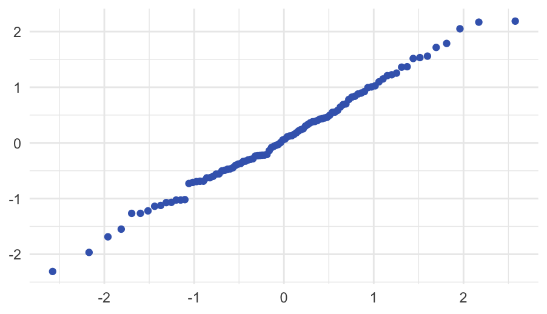
Como puedes ver, en el eje x tenemos los cuantiles teóricos de una normal estándar, mientras que en el eje y tenemos los cuantiles de la muestra simulada, y los puntos graficados nos muestran la relación entre ambos conjuntos de cuantiles. Obviamente, al graficar una distribución normal mediante rnorm(), los puntos se alinean de manera bastante cercana a una recta diagonal. En este gráfico también podemos incluir una recta teórica para una distribución normal mediante stat_qq_line() para comparar de mejor manera como se acoplan los datos:
# Q-Q Plot
muestra |>
ggplot(aes(sample = x)) +
stat_qq(color = "#4167ba") +
stat_qq_line(color = "#c74a4a", size = 1.1) +
labs(x = NULL,
y = NULL) +
theme_minimal() 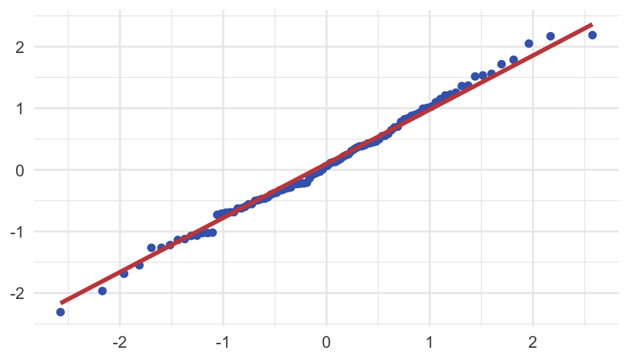
Podemos observar que, mientras la línea roja representa la trayectoria que seguirían los datos si se ajustaran perfectamente a la distribución normal de referencia, los puntos graficados se alinean en su mayoría con dicha pendiente. Como es de esperar, conforme aumente el tamaño de la muestra, los datos tenderán a ajustarse mejor a la distribución teórica, siempre y cuando la población de origen siga efectivamente una distribución normal, por ejemplo, aumentando la muestra a mil observaciones:
# Muestra aleatoria
set.seed(123)
muestra <- tibble(x = rnorm(1000))
# Q-Q Plot
muestra |>
ggplot(aes(sample = x)) +
stat_qq(color = "#4167ba") +
stat_qq_line(color = "#c74a4a", size = 1.1) +
labs(x = NULL,
y = NULL) +
theme_minimal() 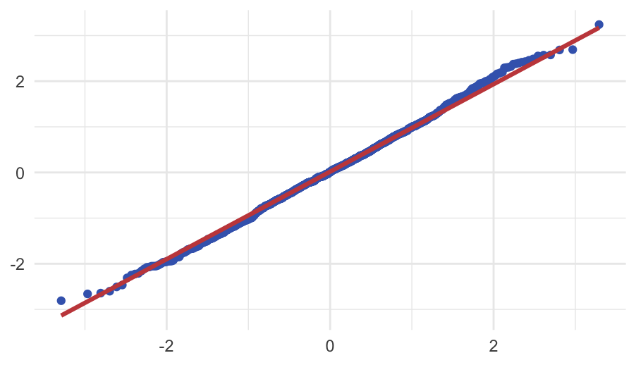
Ahora, si quisieramos identificar si una muestra sigue otra distribución que no sea normal, esto también lo podemos hacer con este tipo de gráficos, unicamente cambiando el parámetro distribution de las funciones stat_qq() y stat_qq_line(), por ejemplo, para validar una distribución exponencial:
# Muestra aleatoria
set.seed(123)
muestra_exp <- tibble(x = rexp(1000, rate = 1))
# Q-Q Plot
muestra_exp |>
ggplot(aes(sample = x)) +
stat_qq(distribution = qexp, dparams = list(rate = 1), color = "#4167ba") +
stat_qq_line(distribution = qexp, dparams = list(rate = 1),
color = "#c74a4a", size = 1.1) +
labs(x = NULL,
y = NULL) +
theme_minimal()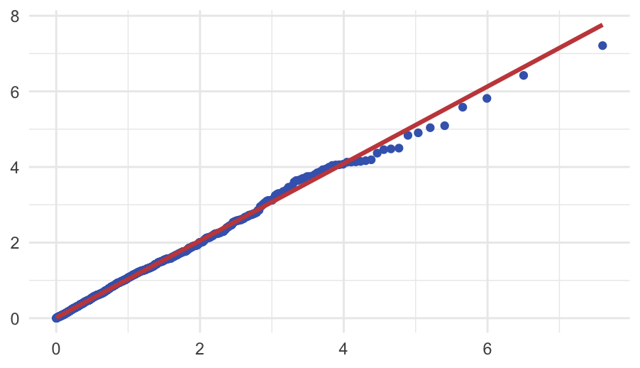
De esta forma, podemos validar casi cualquier tipo de distribución con la que nos topemos, para poder identificar si el patrón que siguen los datos de la muestra se acopla a la distribución teórica a la que se supone pertenecen.
6.2.5.5.2 P–P plot (Probability–Probability)
Como siguiente tipo de gráfico para analizar la normalidad de una muestra, utilizaremos el Probability–Probability plot. A diferencia del Q–Q plot, que compara cuantiles, el P–P plot compara las probabilidades acumuladas teóricas de una distribución normal con las probabilidades acumuladas empíricas de la muestra.
La idea principal es observar si los valores de la función de distribución empírica (EDF) de los datos coinciden con los valores de la función de distribución teórica (CDF) de la normal. Obviamente, si los datos siguen una distribución normal, los puntos en el gráfico deberían aliearse sobre la diagonal del gráfico, tal cual vimos en el Q-Q plot.
Formalmente, un P–P plot grafica los pares:
\[ (F_{teo}(x_{(i)}), \; F_{emp}(x_{(i)}) ) \]
Donde:
- \(F_{teo}(x_{(i)})\) es el valor de la función de distribución acumulada teórica (normal) en el dato \(x_{(i)}\).
- \(F_{emp}(x_{(i)})\) es la probabilidad acumulada empírica asociada al dato ordenado \(x_{(i)}\).
Evidentemente, en tanto los datos de la muestra tengan una distribución normal, entonces para cada \(x_{(i)}\) se debería cumplir que:
\[ F_{teo}(x_{(i)}) = F_{emp}(x_{(i)}) \]
Vamos ahora a la parte interesante. En R podemos construir el P–P plot manualmente calculando los valores de la CDF teórica con pnorm() y comparándolos contra los valores de la EDF obtenidos con ecdf(). Sin embargo, al igual que con el Q–Q plot, resulta mucho más atractivo visualizarlo con ggplot2. Vamos a generar un ejemplo con cien observaciones para comenzar:
# Muestra aleatoria
set.seed(123)
muestra <- tibble(x = rnorm(100))Ahora, vamos a calcular las probabilidades teórica y real:
# Cálculo de probabilidades teóricas y reales
muestra_pp <- muestra |>
arrange(x) |>
mutate(
# Probabilidades acumuladas reales
F_emp = (row_number() - 0.5) / n(),
# Probabilidades acumuladas teóricas (normal estimada)
F_teo = pnorm(x, mean(x), sd(x))
)Finalmente, vamos a graficar la probabilidad acumulada real respecto a la empírica:
# P–P Plot
muestra_pp |>
ggplot(aes(x = F_teo, y = F_emp)) +
geom_point(color = "#4167ba") +
geom_abline(intercept = 0, slope = 1,
color = "#c74a4a", size = 1.1) +
labs(x = NULL, y = NULL) +
theme_minimal()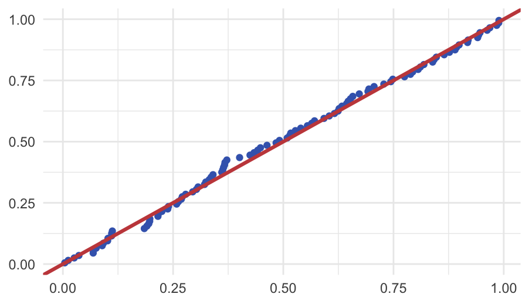
Obviamente, tal como vimos con los Q-Q Plots, conforme tengamos muestras más grandes los puntos tenderán a ajustarse mejor a la probabilidad teórica acumulada (suponiendo que la población tiene una distribución normal). Aumentando la muestra a mil observaciones:
set.seed(123)
muestra <- tibble(x = rnorm(1000))
# Cálculo de probabilidades teóricas y reales
muestra_pp <- muestra |>
arrange(x) |>
mutate(
F_emp = (row_number() - 0.5) / n(),
F_teo = pnorm(x, mean(x), sd(x))
)
# P–P Plot
muestra_pp |>
ggplot(aes(x = F_teo, y = F_emp)) +
geom_point(color = "#4167ba") +
geom_abline(intercept = 0, slope = 1,
color = "#c74a4a", size = 1.1) +
labs(x = NULL, y = NULL) +
theme_minimal()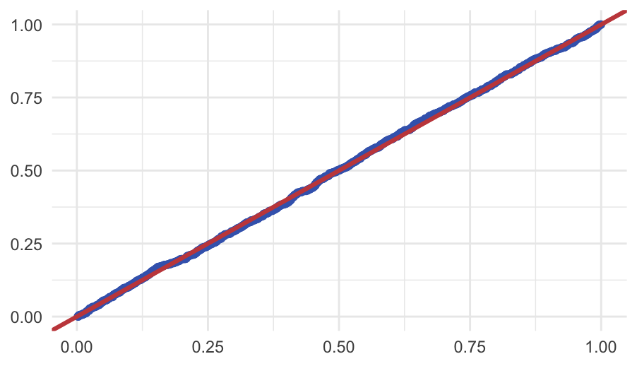
Como vimos en el caso anterior, no solo podemos comparar distribuciones normales, también podemos hacerlo con otro tipo de distribuciones, como la exponencial. Para ese caso, la lógica sería prácticamente la misma, solo que en lugar de calcular las probabilidades teóricas con pnorm(x, mean(x), sd(x)), lo haríamos con pexp(x, rate = 1), por ejemplo. Visualmente:
set.seed(123)
muestra <- tibble(x = rexp(1000, rate = 1)) # muestra ~ Exp(λ = 1)
# Cálculo de probabilidades teóricas y empíricas
muestra_pp <- muestra |>
arrange(x) |>
mutate(
F_emp = (row_number() - 0.5) / n(),
F_teo = pexp(x, rate = 1)
)
# P–P Plot
muestra_pp |>
ggplot(aes(x = F_teo, y = F_emp)) +
geom_point(color = "#4167ba") +
geom_abline(intercept = 0, slope = 1,
color = "#c74a4a", size = 1.1) +
labs(x = NULL, y = NULL) +
theme_minimal()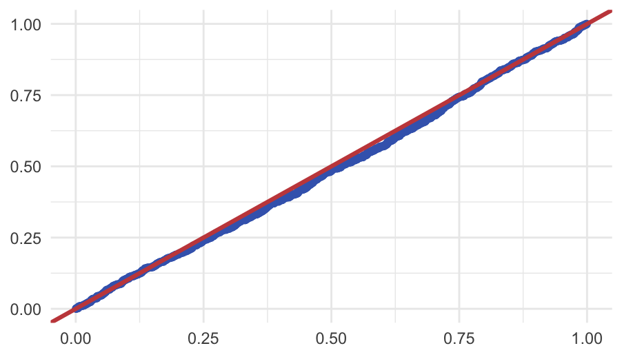
Así que sí, podemos aplicar este gráfico a cualquier tipo de distribución, aunque cuando lo hagamos con distribuciones de tipo discretas el visual cambiará, ya que la función de distribución acumulada avanza en saltos en lugar de ser continua. Esto provoca que los puntos del gráfico se agrupen en niveles o “escalones”, en lugar de formar una línea más uniforme como en el caso continuo. Aun así, el P–P plot sigue siendo válido y útil para evaluar el ajuste, aunque en distribuciones discretas suele complementarse con un Q–Q plot para una interpretación más clara de los cuantiles.
6.2.5.5.3 Detrended P–P plot (residuales de los cuantiles)
Como extensión del P-P plot, podemos utilizar el gráfico de Detrended P–P plot. Este gráfico tiene como objetivo resaltar las desviaciones respecto a la línea de referencia (la diagonal en el P–P plot tradicional).
En lugar de graficar directamente las probabilidades acumuladas teóricas contra las empíricas, el Detrended P–P plot representa en el eje vertical la diferencia entre ambas probabilidades, es decir:
\[ D(x_{(i)}) = F_{emp}(x_{(i)}) - F_{teo}(x_{(i)}) \]
Siendoq que en el eje horizontal se conserva el valor teórico acumulado:
\[ F_{teo}(x_{(i)}) \]
De esta manera, si los datos siguen una distribución teórica (en este caso, la normal), los puntos deberían concentrarse alrededor de la línea horizontal en cero.
Este tipo de gráfico es bastante más interesante que los vistos anteriormente, ya que nos permite detectar patrones de desviación, como:
Tendencias sistemáticas (curvas ascendentes o descendentes) que pueden indicar sesgo en la media o la varianza.
Oscilaciones, que pueden sugerir colas más pesadas o ligeras que las de la distribución teórica.
Dispersión amplia alrededor de cero refleja un ajuste deficiente del modelo teórico.
Como no puede faltar, vamos a ver un ejercicio práctico. En R podemos construirlo de manera manual, ya que basta con calcular la CDF teórica con pnorm() y la empírica con el método de posiciones muestrales. A partir de ahí, restamos una de la otra. Veamos un ejemplo con cien observaciones:
# Muestra aleatoria
set.seed(123)
muestra <- tibble(x = rnorm(100))Ahora calculamos las probabilidades y sus diferencias:
# Cálculo de probabilidades y residuales
muestra_pp <- muestra |>
arrange(x) |>
mutate(
# Probabilidades acumuladas empíricas
F_emp = (row_number() - 0.5) / n(),
# Probabilidades acumuladas teóricas (normal estimada)
F_teo = pnorm(x, mean(x), sd(x)),
# Residuales (diferencia entre empírico y teórico)
Residual = F_emp - F_teo
)Finalmente, graficamos los residuales respecto a las probabilidades teóricas:
# Detrended P–P Plot
muestra_pp |>
ggplot(aes(x = F_teo, y = Residual)) +
geom_point(color = "#4167ba") +
geom_hline(yintercept = 0, color = "#c74a4a", size = 1.1) +
labs(x = "Probabilidad Teórica", y = "Residual (Emp - Teo)") +
theme_minimal()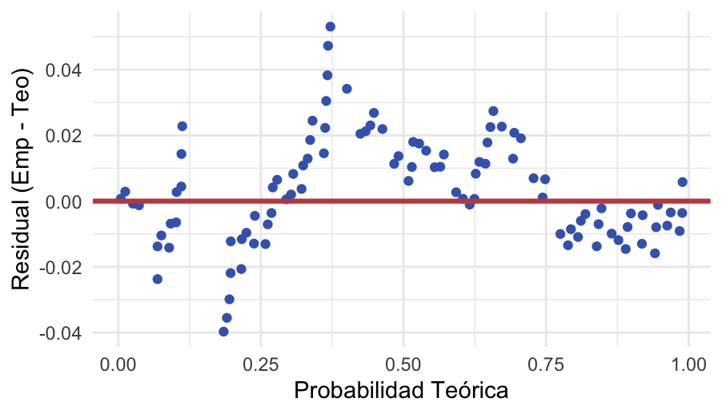
Este gráfico es útil porque centra la atención en las desviaciones respecto a la diagonal ideal. Si los datos siguen la distribución normal asumida, los puntos deberían agruparse alrededor de la línea horizontal en cero. Cuando se observan patrones sistemáticos, como curvas o tendencias persistentes por encima o por debajo de la línea, esto indica que la distribución teórica no se ajusta bien a los datos. En cambio, si las desviaciones son pequeñas y parecen aleatorias, se puede concluir que el modelo teórico ofrece un buen ajuste. Vamos a aumentar un poco las observaciones para analizar mejor las oscilaciones del ejemplo:
set.seed(123)
muestra <- tibble(x = rnorm(1000))
# Cálculo de probabilidades y residuales
muestra_pp <- muestra |>
arrange(x) |>
mutate(
F_emp = (row_number() - 0.5) / n(),
F_teo = pnorm(x, mean(x), sd(x)),
Residual = F_emp - F_teo
)
# Detrended P–P Plot
muestra_pp |>
ggplot(aes(x = F_teo, y = Residual)) +
geom_point(color = "#4167ba") +
geom_hline(yintercept = 0, color = "#c74a4a", size = 1.1) +
labs(x = "Probabilidad Teórica", y = "Residual (Emp - Teo)") +
theme_minimal()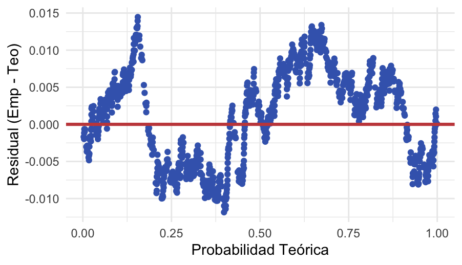
Los puntos se concentran alrededor de la línea horizontal en cero, lo cual indica que no existen desviaciones sistemáticas importantes y que las oscilaciones observadas corresponden principalmente a variaciones aleatorias de pequeña magnitud. Básicamente, podemos confirmar que la distribución teórica considerada ofrece un buen ajuste a los datos empíricos.
Ya que terminamos de analizar la normalidad de una variable aleatoria, ahora vamos a discutir otros supuestos que deben cumplirse en distribuciones normales, sin embargo, a partir de este punto, veremos supuestos de normalidad que no aplican específicamente a una variable aleatoria independiente, sino a modelos estadísticos o pruebas que dependen de la normalidad de los errores. Entre estos supuestos se incluyen la homoscedasticidad y la no autocorrelación, ya que la confiabilidad de muchas pruebas y/o modelos estadísticos, como la regresión lineal o el ANOVA, depende de que los errores o residuales del modelo tengan varianza constante y no estén correlacionados entre sí.
La razón por la que ya no nos limitamos a analizar una variable aleatoria independiente es que, dentro de un modelo estadístico (que discutiremos en el siguiente capítulo), lo relevante es cómo se comportan los errores y las relaciones entre variables, más que la distribución de una sola variable por sí sola.
6.2.5.6 Validando la homogeneidad de varianzas (Homoscedasticidad)
Uno de los supuestos fundamentales en la inferencia estadística, particularmente al aplicar modelos de regresión lineal o pruebas estadísticas comparativas entre grupos, es la homogeneidad de varianzas, también denominada homoscedasticidad. Este principio establece que la variabilidad de la variable dependiente debe permanecer constante a lo largo de los distintos niveles de la variable independiente, o a través del rango de valores predichos por un modelo. Cuando esta condición se cumple, los errores del modelo se distribuyen de manera uniforme, lo que permite obtener estimaciones eficientes y conclusiones estadísticamente válidas. Por el contrario, la presencia de heteroscedasticidad implica que la varianza cambia según el nivel de la variable explicativa, lo que puede sesgar las inferencias, afectar la significancia de los coeficientes e incrementar la imprecisión de los intervalos de confianza (Breusch and Pagan 1979).
La homoscedasticidad no se refiere a una variable aislada, sino a la relación entre una variable y uno o varios factores o predictores. En este capítulo se aborda desde una perspectiva exploratoria para detectar posibles patrones de variación desigual, mientras que su interpretación formal como supuesto del modelo de regresión se estudiará en el capítulo siguiente.
Desde el análisis exploratorio, es posible detectar patrones de variación no constante mediante herramientas visuales, como gráficos de dispersión, diagramas de caja por grupos o gráficos de residuos preliminares. Estas representaciones permiten observar si la dispersión de los datos aumenta, disminuye o se mantiene estable a lo largo del rango de otra variable, proporcionando una primera aproximación a la homogeneidad o heterogeneidad en la varianza.
Más adelante, cuando se introduzca el modelo lineal y se definan los residuales (las diferencias entre los valores observados y los predichos), se aplicarán pruebas estadísticas formales, como las de Breusch-Pagan o White, que permiten evaluar con rigor si la varianza de los errores es constante. En esta sección dichas pruebas se mencionarán de manera introductoria, con fines ilustrativos, mientras que su aplicación técnica y su interpretación detallada serán desarrolladas en el siguiente capítulo, una vez analizado el modelo de regresión.
A continuación, vamos a analizar cuatro tipos de gráficos que permiten evaluar de manera preliminar la presencia de patrones de variabilidad desigual en los datos. Si bien en esta etapa no contamos aún con residuales provenientes de un modelo de regresión, por ahora estos gráficos proporcionan evidencia visual suficiente para identificar si la varianza de una variable cambia en función de otra. Los gráficos a analizar son:
Boxplots por grupo: Los mismos gráficos que ya desarrollamos anteriormente, pero agrupados para comparar visualmente la varianza entre diferentes categorías o segmentos de la variable independiente.
Gráfico de dispersión simple: Para analizar cómo varía la dispersión de los datos a lo largo de los valores de una variable independiente.
Gráfico de dispersión con bandas de variabilidad: Para analizar cómo cambia la amplitud de los datos al agruparlos por intervalos, lo que facilita detectar aumentos o disminuciones en la varianza.
Gráfico de varianza móvil: Para analizar datos secuenciales (series de tiempo), permitiendo identificar cambios en la varianza a lo largo del tiempo.
6.2.5.6.1 Boxplots por grupo
Ya analizamos anteriormente los boxplots simples, por lo que no es necesario volver a explicar sus componentes ni su interpretación general. En esta sección, los utilizaremos específicamente como una herramienta visual para evaluar la homogeneidad de varianzas entre grupos. Esto se logra analizando si la dispersión de una variable \(Y\) es similar cuando se divide en distintos niveles de una variable \(X\), la cual puede ser categórica o continua segmentada en intervalos.
Desde una perspectiva más formal, si \(Y\) representa nuestra variable dependiente y \(X\) define grupos o estratos, estamos interesados en comparar la varianza condicional:
\[ Var(Y \;|\; X = x_1), \; Var(Y \;|\; X = x_2), ... , Var(Y \;|\; X = x_n) \]
El supuesto de homogeneidad de varianzas establece que:
\[ Var(Y \;|\; X = x_1) = Var(Y \;|\; X = x_2) = ... = Var(Y \;|\; X = x_n) = \sigma^2 \]
Siendo \(\sigma^2\) la varianza constante para todos los grupos.
En este caso, los boxplots permiten aproximar visualmente estas varianzas a través del rango intercuartílico, es decir:
\[ IQR = Q_3 - Q_1 \]
Siendo que, para una varianza homogenea, al agrupar y comparar los boxplots, estos deberían tener un rango intercuartílico similar, mientras que si existen diferencias marcadas entre cada rango, esto es un indicio de heterogeneidad de varianzas.
A su vez, la presencia o ausencia de valores atípicos (outliers) también puede interpretarse desde la perspectiva de la varianza. Si un grupo presenta un número significativamente mayor de valores alejados del rango intercuartílico, esto sugiere una mayor dispersión y, por lo tanto, una varianza condicional más alta.
Como es lógico, a continuación veremos un ejemplo en R. Para este caso particular, me parece más interesante utilizar datos reales, ya que permiten comprender de manera más clara la homocedasticidad y, consecuentemente, cómo este fenómeno puede afectar los análisis que realicemos posteriormente.
Para este ejercicio en particular vamos a usar de ingresos reportados en Estados Unidos por estado, los cuales tendremos disponibles en el repositorio oficial del libro, como puedes ver a continuación:
ruta <- "https://raw.githubusercontent.com/Jorge-hercas/
r-para-inteligencia-de-negocios/refs/heads/main/
CSV/concentrado_ingresos.csv"Vamos ahora a crear un boxplot para, por ejemplo, ocho estados al azar:
# Leer archivo
ingresos <- read.csv(ruta) |>
as_tibble()
# Estados
states <-
ingresos |>
distinct(GeoName) |>
filter(GeoName != "United States")
# Boxplot para ciertos estados
ingresos |>
filter(GeoName %in% head(states$GeoName, 8) &
between(X2024, 0, 4000000)) |>
ggplot(aes(x = GeoName, y = X2024)) +
geom_boxplot(fill = "#c74a4a") +
labs(
title = NULL,
x = NULL,
y = NULL
) +
scale_y_continuous(labels = scales::comma) +
theme_minimal() +
theme(
legend.position = "none",
axis.text.x = element_text(angle = 45, hjust = 1)
)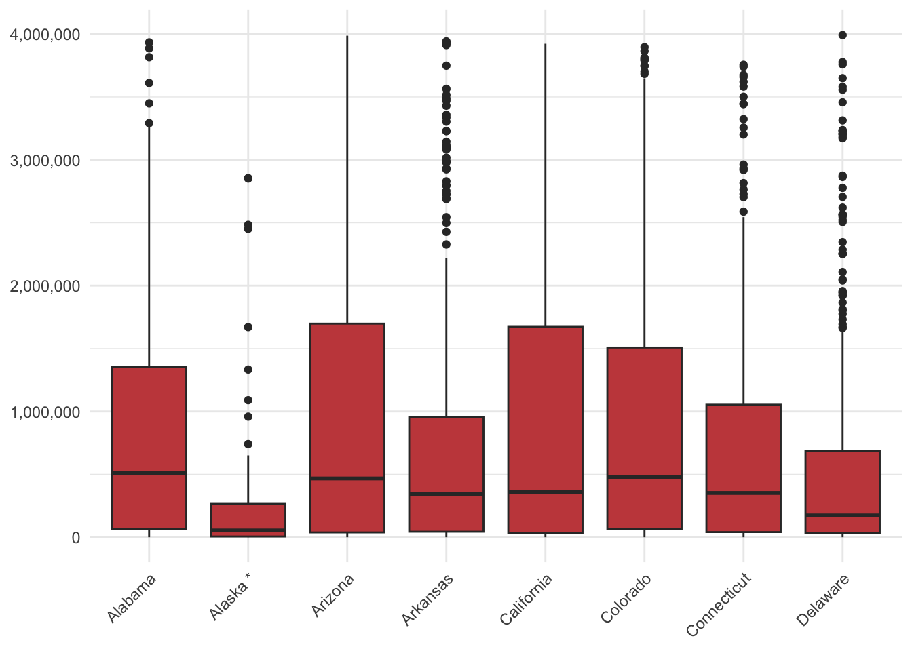
A partir del gráfico anterior podemos darnos cuenta de algo interesante, ya que el promedio de ingresos (y sus respectivos cuantiles) varían de estado a estado, siendo que estas variaciones pueden causar sesgos si quisieramos calcular estimaciones de ingreso a nivel nacional. Esto implica que los ingresos no se distribuyen de manera uniforme en todo el país, sino que existen diferencias estructurales que deben ser consideradas al momento de generar un modelo estadístico al respecto, o bien calcular pronósticos a un nivel más particular.
Este es un ejemplo claro de por qué debemos tener siempre presente el supuesto de homoscedasticidad, ya que si la variabilidad de los ingresos cambia significativamente entre estados, regiones o grupos poblacionales, el modelo podría perder validez al asumir una varianza constante en los errores.
Si bien la heteroscedasticidad no puede ser rechazada o no rechazada únicamente a nivel visual, sí comienza por darnos una mejor idea respecto a cómo se comportan los datos, identificando ciertos patrones que sugieren una posible variación no constante de la varianza, como lo es en el ejemplo que acabamos de analizar.
6.2.5.6.2 Gráfico de dispersión simple
Como siguiente apoyo gráfico para identificar la heteroscedasticidad, vamos a hacer uso de un gráfico de dispersión simple. Este tipo de gráficos permite observar cómo se distribuyen los valores de una variable dependiente (\(Y\)) a lo largo de los valores de una variable independiente (\(X\)). A diferencia de los boxplots, que agrupan los datos en categorías, el gráfico de dispersión nos brinda una visión continua de la relación entre ambas variables, lo que resulta especialmente útil cuando la variable explicativa es numérica.
Conceptualmente, si la varianza de \(Y\) condicionada a \(X\) (\(Var(Y|X)\)) permanece aproximadamente constante a lo largo de los valores de \(X\), entonces podemos suponer homoscedasticidad. En cambio, si los puntos muestran una dispersión creciente o decreciente conforme avanza el eje \(X\), esto indica heteroscedasticidad, es decir, una varianza no constante.
Visualmente, algunos patrones comunes que sugieren heteroscedasticidad son:
- Los puntos se abren o cierran en forma de abanico a medida que aumenta \(X\).
- La dispersión vertical de los puntos crece o disminuye según cambia \(X\).
- Se observan zonas con más o menos variabilidad a lo largo del gráfico.
Nótese que, hasta este punto, estamos diciendo que “suponemos” heteroscedasticidad, pero jamás hablamos de rechazar o no rechazar una hipótesis, ya que no estamos usando pruebas formales.
Vamos ahora a ver un ejemplo de esto en R. Para poder hacer un gráfico de dispersión, lógicamente necesitaremos dos variables continuas, pero en nuestros datos cargados para este ejercicio solo contamos con una (X2024, el ingreso promedio por estado), por lo que vamos a crear una variable simulada para este ejercicio:
set.seed(123)
# Variable dummy
ingresos <- ingresos |>
mutate(HouseholdSize = runif(n(), 2, 4))Ahora, vamos a generar un gráfico de dispersión entre ambas variables:
ingresos |>
filter(GeoName != "United States" & between(X2024, 0, 4000000)) |>
ggplot(aes(x = HouseholdSize, y = X2024)) +
geom_point(alpha = 0.6, color = "#c74a4a", size = 0.5) +
labs(
x = NULL,
y = NULL
) +
scale_y_continuous(labels = scales::comma) +
theme_minimal() 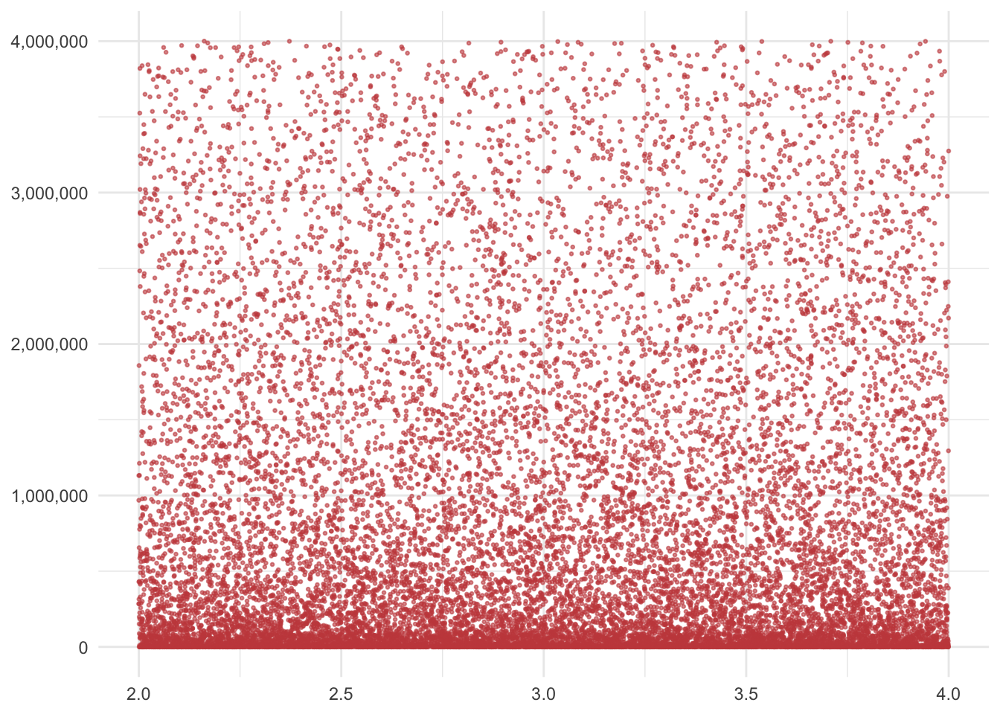
El gráfico anterior nos permite observar cómo se distribuyen los ingresos promedio por estado en función del tamaño del hogar simulada. Como esta nueva variable (HouseholdSize) fue creada aleatoriamente entre 2 y 4 para cada observación, no existe una relación real entre ambas variables, por lo que no esperamos ver un patrón definido en la nube de puntos, sin embargo, este gráfico es útil para ilustrar cómo se vería una relación potencialmente homoscedástica, siendo que, en un caso en el que los puntos se concentraran en ciertas regiones específicas con mayor frecuencia, formando ciertos patrones, podríamos estar en presencia de heteroscedasticidad.
Resulta interesante contrastar un caso en el que tenemos una posible heteroscedasticidad y otro en el que no (para los mismos datos), ya que aunque el gráfico de dispersión previo sugería una varianza aproximadamente constante respecto al tamaño del hogar, el análisis mediante boxplots muestra que la variabilidad de los ingresos sí cambia entre estados. Esto nos demuestra un punto clave: la homoscedasticidad depende de la variable con la que se evalúe. Un mismo conjunto de datos puede ser homoscedástico respecto a una variable y heteroscedástico respecto a otra.
6.2.5.6.3 Gráfico de dispersión con bandas de variabilidad
Como siguiente apoyo gráfico para identificar la heteroscedasticidad, haremos uso de un gráfico de dispersión con bandas de variabilidad. Este tipo de visualización parte del gráfico de dispersión tradicional, pero añade una banda suavizada (generalmente construida a partir de un ajuste LOESS9 o de intervalos basados en cuantiles) que permite observar no solo la relación central entre las variables, sino también cómo se comporta la variabilidad de la variable dependiente (\(Y\)) a lo largo de la variable independiente (\(X\)).
A diferencia del gráfico de dispersión simple, que muestra únicamente la distribución de puntos, las bandas de variabilidad aportan información adicional sobre la dispersión local de los datos. Esto resulta especialmente útil cuando la relación entre \(X\) y \(Y\) no es estrictamente lineal, o cuando queremos evaluar si la varianza condicional \(Var(Y|X)\) es aproximadamente constante.
Conceptualmente, si el ancho de estas bandas se mantiene relativamente constante a lo largo del eje \(X\), podemos suponer homoscedasticidad, ya que la variabilidad alrededor de la tendencia es estable. En cambio, si las bandas se ensanchan o estrechan sistemáticamente, esto sugiere heteroscedasticidad. Dicho de otro modo, un patrón en el que la banda “se abre” o“se cierra” (similar a un embudo) estaría indicando que la varianza de \(Y\) cambia en función de la variable \(X\).
Algunos patrones visuales típicos que suelen evidenciar heteroscedasticidad en un gráfico con bandas de variabilidad son:
- Bandas que aumentan de ancho conforme crece \(X\), lo que refleja una varianza creciente.
- Bandas que se estrechan, indicando una varianza decreciente.
- Bandas irregulares, con secciones claramente más amplias o más estrechas.
Es importante recalcar que, tal como en los dos casos anteriores, a pesar de ser una herramienta muy útil, este tipo de gráfico no permite aceptar o rechazar formalmente la presencia de heteroscedasticidad. Únicamente podemos usarlo como una referencia previa para sospechar de este posible problema.
Vamos ahora a ver un ejercicio en R, sin embargo, en este caso particular vamos a simular los datos de ambos ejes del gráfico, ya que buscaremos mostrar un caso en el que haya una relación más clara entre ambas variables:
# Simulación con relación clara
set.seed(123)
n <- 500
datos <- tibble(
X = runif(n, 0, 10),
Y = 5 + 2 * X + rnorm(n, mean = 0, sd = 0.5 + 0.4 * X)
)Vamos ahora a graficar nuestro ejemplo anterior:
datos |>
ggplot(aes(x = X, y = Y)) +
geom_point(alpha = 0.5, size = 1, color = "#c74a4a") +
geom_smooth(
method = "loess",
se = TRUE,
color = "#2c3e50",
fill = "#95a5a6",
span = 0.75
) +
labs(
x = "Variable independiente",
y = "Variable dependiente"
) +
theme_minimal()`geom_smooth()` using formula = 'y ~ x'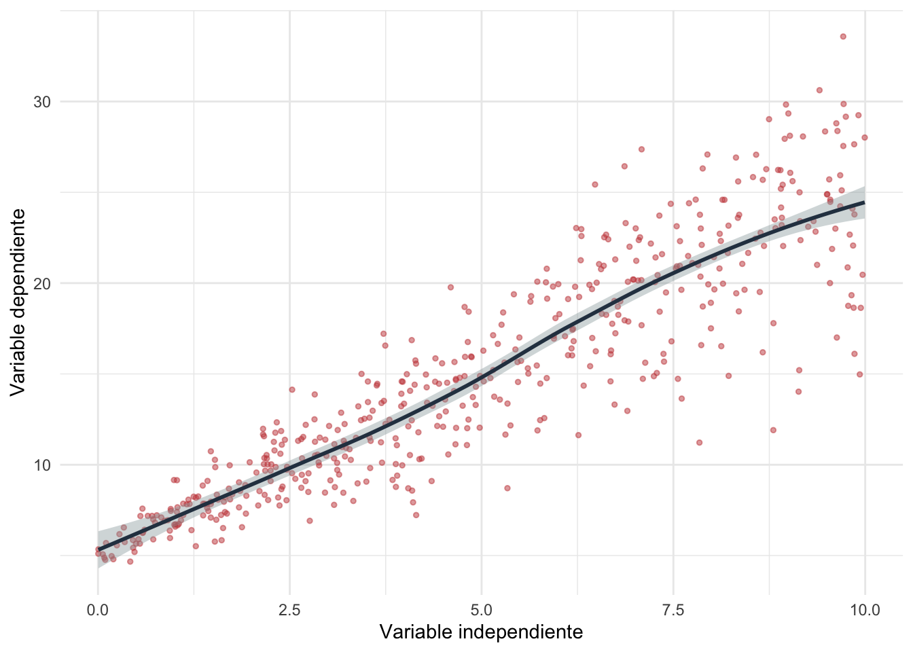
En el gráfico anterior podemos darnos cuenta de que la línea suavizada representa la tendencia central estimada mediante LOESS, siendo que la banda sombreada refleja la variabilidad local de \(Y\) alrededor de dicha tendencia.
Podemos darnos cuenta de que las bandas de variabilidad se ensanchan conforme aumenta \(X\) porque la varianza de la variable dependiente no es constante, sino que crece en función de la variable explicativa. Específicamente, los datos fueron generados de tal forma que la dispersión de \(Y\) alrededor de su valor esperado aumenta para valores más altos de \(X\), ya que la fórmula utilizada para este ejemplo, es decir:
\[ Y = 5+2X + \varepsilon \]
incorpora una desviación estándar dependiente de \(X\), haciendo que la variabilidad de \(Y\) se incremente de forma constante a medida que \(X\) crece. Este comportamiento nos puede mostrar cómo se verían casos en los que la varianza \(Var(Y∣X)\) no es constante, siendo casos de heteroscedasticidad sencillos de identificar visualmente.
6.2.5.6.4 Gráfico de varianza móvil
Finalmente, como último apoyo gráfico para identificar la heteroscedasticidad, haremos uso del gráfico de varianza móvil. Este tipo de visualización se basa en calcular la varianza de la variable dependiente \(Y\) dentro de ventanas móviles u observaciones agrupadas a lo largo de la variable independiente \(X\). De esta manera, en lugar de analizar la dispersión punto a punto, se examina cómo evoluciona la variabilidad local de \(Y\) conforme cambia \(X\).
A diferencia de los gráficos de dispersión, que permiten una inspección visual directa de la nube de puntos, el gráfico de varianza móvil resume la información de dispersión en una medida cuantitativa que se desplaza a lo largo del eje \(X\). Esto, de hecho, resulta particularmente útil cuando la relación entre \(X\) y \(Y\) es compleja o cuando la heteroscedasticidad no es fácilmente perceptible a simple vista.
En este tipo de gráficos, si la varianza móvil muestra una tendencia creciente, decreciente o patrones claros, esto sugiere la presencia de heteroscedasticidad. Dicho de otra manera, cambios persistentes en el nivel de la varianza a lo largo de \(X\) indican que \(VAR(Y|X)\) no es constante.
Algunos patrones visuales comunes que suelen evidenciar heteroscedasticidad en un gráfico de varianza móvil son:
- Una varianza que aumenta progresivamente conforme crece \(X\).
- Una varianza que disminuye a medida que \(X\) aumenta.
- Fluctuaciones marcadas de la varianza entre distintas regiones del eje \(X\).
No creo que en este punto haga falta repetirlo, pero sigue siendo importante el tener en cuenta que estos gráficos no son una prueba formal que nos permita rechazar o no rechazar la heteroscedasticidad, por lo que debemos tomarlos con pinzas, como ya mencioné en los tres casos anteriores.
Finalmente, como último ejemplo en R, vamos a simular un gráfico de varianza movil. Al igual que en el ejemplo anterior, simularemos ambas variables de forma controlada, de modo que la varianza de la variable dependiente aumente conforme crece la variable independiente. Esto nos permitirá observar con claridad el comportamiento de la varianza móvil a lo largo del eje \(X\).
# Simulación con heteroscedasticidad
set.seed(123)
n <- 500
datos <- tibble(
X = runif(n, 0, 10),
Y = 5 + 2 * X + rnorm(n, mean = 0, sd = 0.5 + 0.4 * X)
)Ahora, para construir el gráfico de varianza móvil, primero ordenamos los datos por la variable independiente y luego calculamos la varianza de \(Y\) dentro de ventanas móviles de tamaño fijo. En este ejemplo, cada ventana contendrá 30 observaciones consecutivas.
# Cálculo de varianza móvil
window_size <- 30
datos_var_movil <- datos |>
arrange(X) |>
mutate(
var_movil = zoo::rollapply(
Y,
width = window_size,
FUN = var,
fill = NA,
align = "center"
)
)Finalmente, graficamos la varianza móvil:
datos_var_movil |>
ggplot(aes(x = X, y = var_movil)) +
geom_line(color = "#c74a4a", linewidth = 0.8) +
labs(
x = "Variable independiente",
y = "Varianza móvil"
) +
theme_minimal()Warning: Removed 29 rows containing missing values or values outside the scale range
(`geom_line()`).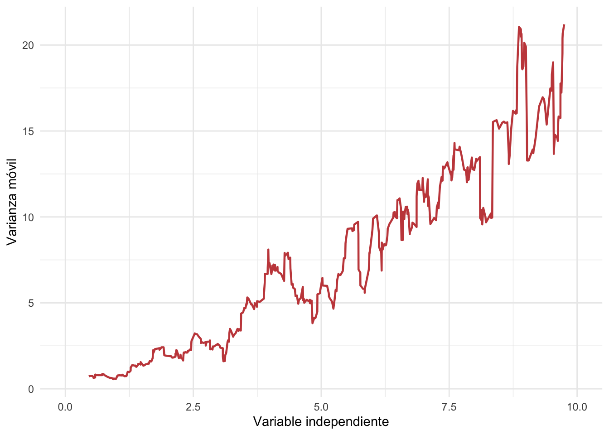
En este gráfico, una tendencia creciente de la varianza móvil conforme aumenta \(X\) indica que la dispersión de \(Y\) no es constante a lo largo del rango de la variable explicativa. Este patrón es bastante evidente con un escenario de heteroscedasticidad y refuerza, desde una perspectiva meramente visual, lo observado previamente mediante gráficos de dispersión con bandas de variabilidad.
6.2.5.7 Comparación de medias para más de dos grupos: ANOVA
Como recordarás (ya que eso ocurrió hace solo unas cuantas páginas), previamente ya discutimos cómo comparar medias mediante pruebas t, las cuales son especialmente útiles cuando queremos contrastar una media contra un valor de referencia, comparar dos grupos independientes o evaluar mediciones antes y después sobre los mismos individuos, sin embargo, en la práctica no siempre trabajaremos únicamente con uno o dos grupos, ya que muchas veces necesitaremos comparar tres o más categorías al mismo tiempo, por ejemplo, ventas promedio entre distintas regiones, tiempos promedio de entrega entre varios centros de distribución o niveles de satisfacción entre diferentes segmentos de clientes. Para estos casos utilizamos el análisis de varianza, mejor conocido como ANOVA, cuyo objetivo es determinar si existen diferencias estadísticamente significativas entre las medias de varios grupos (Fisher 1925).
Ahora bien, probablemente el nombre pueda parecer un poco confuso, ya que si estamos comparando medias, ¿por qué se llama análisis de varianza? Esto es simplemente porque ANOVA no compara las medias de manera directa como lo hace una prueba t, sino que evalúa si la variabilidad que existe entre los grupos es suficientemente grande en comparación con la variabilidad que existe dentro de los grupos, es decir, si las medias de los grupos son muy parecidas entre sí, entonces la variabilidad entre grupos será pequeña, mientras que si algunas medias están muy alejadas de otras, la variabilidad entre grupos será mayor. Precisamente, el ANOVA se encarga de comparar estas dos fuentes de variación:
- Variabilidad entre grupos: Qué tanto se alejan las medias de cada grupo respecto a la media global.
- Variabilidad dentro de los grupos: Qué tanta dispersión existe entre las observaciones individuales de cada grupo.
Básicamente, si las diferencias entre grupos son grandes, pero dentro de cada grupo los datos son relativamente consistentes, entonces es más probable que las diferencias observadas no sean producto del azar. Matemáticamente, el planteamiento de hipótesis para un ANOVA de un factor es:
\[ H_0: \mu_1 = \mu_2 = \mu_3 = ... = \mu_k \]
\[ H_1: \text{Al menos una media es diferente} \]
Donde \(k\) representa el número total de grupos que estamos comparando.
Nótese que la hipótesis alternativa no dice exactamente cuál media es diferente, ni cuántas medias difieren entre sí, únicamente nos indica que existe evidencia estadística para afirmar que al menos una de las medias poblacionales no es igual a las demás, algo que será importante más adelante, porque si el ANOVA resulta significativo, necesitaremos aplicar pruebas adicionales para identificar específicamente entre qué grupos existen diferencias.
Seguramente en este punto te estarás preguntando algo como ¿por qué no hacemos simplemente varias pruebas t entre todos los grupos? Supongamos por ejemplo que tenemos tres regiones, por ejemplo: Norte, Centro y Sur. Obviamente, utilizando pruebas t, podríamos comparar:
- Norte vs Centro.
- Norte vs Sur.
- Centro vs Sur.
El problema es que, al realizar muchas pruebas por separado, incrementamos la probabilidad de cometer un error tipo I. Si cada prueba se realiza con un nivel de significancia de \(\alpha = 0.05\), cada una tiene individualmente un 5% de probabilidad de encontrar una diferencia falsa, sin embargo, al acumular varias pruebas, esa probabilidad conjunta aumenta. De hecho, la probabilidad de cometer al menos un error tipo I en múltiples comparaciones puede calcularse como:
\[ P(\text{Al menos un error}) = 1 - (1-\alpha)^m \]
Donde \(m\) es el número de comparaciones realizadas, por ejemplo, si hacemos 10 comparaciones con \(\alpha = 0.05\):
\[ P(\text{Al menos un error}) = 1 - (1-.05)^{10} \]
Resultando en:
1 - (1 - 0.05)^10[1] 0.4012631Prácticamente un 40% de probabilidades de encontrar al menos un falso positivo, lo cual es demasiado. Por este detalle no vale la pena hacer múltiples comparaciones mediante pruebas t, además de que sería un proceso mucho más engorroso.
Ahora bien, el estadístico principal del ANOVA es el estadístico \(F\), el cual se calcula como la razón entre la variabilidad promedio entre grupos y la variabilidad promedio dentro de los grupos:
\[ F = \frac{MS_{entre}}{MS_{dentro}} \]
Donde: - \(MS_{entre}\): Es el cuadrado medio entre grupos. - \(MS_{dentro}\): Es el cuadrado medio dentro de los grupos.
Si \(F\) es cercano a 1, significa que la variabilidad entre grupos no es mucho mayor que la variabilidad dentro de los grupos, por lo que no habría suficiente evidencia para pensar que las medias son diferentes, mientras que, lógicamente, si \(F\) es considerablemente mayor a 1, significa que la variabilidad entre grupos es grande en relación con la variabilidad interna, lo que podría sugerir diferencias significativas entre las medias. Para construir este estadístico, primero necesitamos calcular la suma de cuadrados entre grupos:
\[ SS_{\text{entre}} = \sum_{j=1}^{k} n_j(\bar{x}_j - \bar{x})^2 \] Donde:
- \(k\): Es el número de grupos.
- \(n_j\): Es el número de observaciones del grupo \(j\).
- \(\bar{x}_j\): Es la media del grupo \(j\).
- \(\bar{x}\): Es la media global.
Después, calculamos la suma de cuadrados dentro de los grupos:
\[ SS_{\text{dentro}} = \sum_{j=1}^{k} \sum_{i=1}^{n_j} (x_{ij} - \bar{x}_j)^2 \]
Donde \(x_{ij}\) representa cada observación individual dentro del grupo \(j\). Como siguiente paso, vamos a dividir cada suma de cuadrados entre sus respectivos grados de libertad:
\[ MS_{\text{entre}} = \frac{SS_{\text{entre}}}{k - 1} \]
\[ MS_{\text{dentro}} = \frac{SS_{\text{dentro}}}{N - k} \]
Y, finalmente:
\[ F = \frac{MS_{\text{entre}}}{MS_{\text{dentro}}} \]
Donde \(N\) representa el número total de observaciones.
Bajo la hipótesis nula, el estadístico \(F\) sigue una distribución \(F\) con \(k - 1\) y \(N - k\) grados de libertad:
\[ F \sim F_{k-1, N-k} \]
Con esto en mente, vamos ahora a construir un ejemplo práctico en R. Supongamos que queremos comparar las ventas promedio de cuatro regiones diferentes: Norte, Centro, Sur y Occidente (para fines ilustrativos, voy a inventarme los datos):
set.seed(123)
datos_anova <- dplyr::tibble(
region = rep(c("Norte", "Centro", "Sur", "Occidente"), each = 30),
ventas = c(
rnorm(30, mean = 100, sd = 12),
rnorm(30, mean = 108, sd = 12),
rnorm(30, mean = 98, sd = 12),
rnorm(30, mean = 122, sd = 12)
)
)
datos_anova |>
head()# A tibble: 6 × 2
region ventas
<chr> <dbl>
1 Norte 93.3
2 Norte 97.2
3 Norte 119.
4 Norte 101.
5 Norte 102.
6 Norte 121. Antes de pasar propiamente a ver el ANOVA, no está de más darle una visualización rápida a nuestros datos, para tener una mejor idea de qué esperar al respecto:
datos_anova |>
group_by(region) |>
summarise(
observaciones = n(),
media = mean(ventas),
desviacion = sd(ventas),
minimo = min(ventas),
maximo = max(ventas),
.groups = "drop"
)# A tibble: 4 × 6
region observaciones media desviacion minimo maximo
<chr> <int> <dbl> <dbl> <dbl> <dbl>
1 Centro 30 110. 10.0 89.4 134.
2 Norte 30 99.4 11.8 76.4 121.
3 Occidente 30 121. 10.9 102. 148.
4 Sur 30 98.3 10.4 70.3 123.A pesar de lo que puedas pensar a primera instancia, observar medias diferentes no implica automáticamente que las diferencias sean estadísticamente significativas, ya que las diferencias podrían deberse simplemente a la variabilidad natural de la muestra.
Fácilmente podríamos comenzar con un boxplot para ver si tenemos medias diferentes, sin embargo, este recurso sería meramente exploratorio, por lo que no podemos saber con seguridad si las diferencias en las medias de cada región son estadísticamente significativas, para esto, debemos pasar directamente a calcular el ANOVA, mediante la función aov():
modelo_anova <- aov(ventas ~ region, data = datos_anova)
summary(modelo_anova) Df Sum Sq Mean Sq F value Pr(>F)
region 3 10057 3352 28.75 0.0000000000000567 ***
Residuals 116 13525 117
---
Signif. codes: 0 '***' 0.001 '**' 0.01 '*' 0.05 '.' 0.1 ' ' 1Como podemos ver, dado el p-value menor a 0.05, podemos decir que existe evidencia de diferencias estadísticamente significativas en las ventas promedio entre regiones.
Nótese que el factor region tiene 3 grados de libertad, lo que significa que se compararon 4 regiones en total, ya que:
\[ k - 1 = 3 \Rightarrow k = 4 \]
Como lo mencionamos anteriormente (si, tampoco me hacía mucho sentido al principio).
Por otra parte, la suma de los cuadrados del factor region es 10057, mientras que la suma de cuadrados residual es 13525, lo que nos estaría diciendo que una parte importante de la variabilidad total en las ventas se explica por las diferencias entre regiones. De hecho, el estadístico \(F\) es igual a 28.75, lo que significa que la variabilidad entre regiones es mucho mayor que la variabilidad promedio dentro de las regiones.
Ahora bien, como cualquier prueba estadística, el ANOVA tiene supuestos que debemos considerar antes de interpretar sus resultados, específicamente: Independencia de las observaciones, normalidad de los residuos y homogeneidad de varianzas.
Comencemos analizando la normalidad en los residuos de forma gráfica,así como ya lo hichimos previamente, mediante un Q-Q plot:
residuales_anova <- residuals(modelo_anova)
# Gráfico Q-Q
tibble(residuales = residuales_anova) |>
ggplot(aes(sample = residuales)) +
stat_qq(color = "#c74a4a") +
stat_qq_line(color = "#c74a4a") +
labs(
x = NULL,
y = NULL
) +
theme_minimal()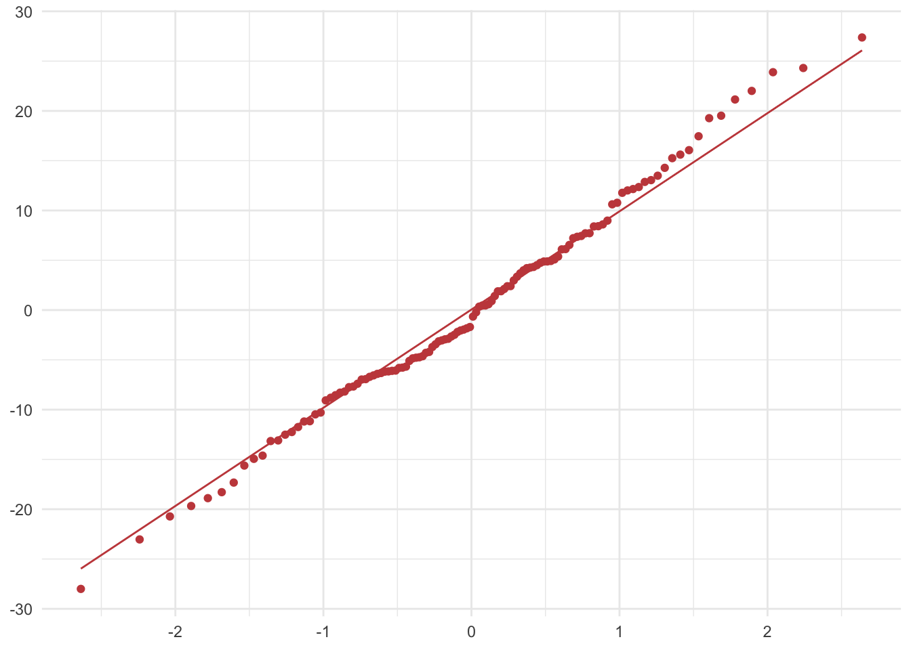
Así como aplicar una sencilla prueba de Shapiro-Wilk, es decir:
shapiro.test(residuales_anova)
Shapiro-Wilk normality test
data: residuales_anova
W = 0.9932, p-value = 0.8292Donde rápidamente podemos concluir que no hay evidencia de que los datos provengan de una distribución no normal, afortunadamente (o no tan afortunadamente en realidad, considerando que son datos inventados).
6.2.5.7.1 Prueba de Tukey
Dado que estamos en un capítulo meramente exploratorio, voy a suponer que los datos también cuentan con homogeneidad en las varianzas, ya que discutiremos pruebas formales para ello hasta el siguiente capítulo, así que por ahora estaríamos suponiendo que tenemos un ANOVA con resultados válidos, por lo que en tal caso, ahora tenemos otro problema: No tenemos idea de cuál es la región que tiene una media diferente. Para resolver esto, necesitamos aplicar una prueba posterior al ANOVA que nos permita comparar los grupos entre sí, controlando el problema de comparaciones múltiples, siendo en este caso la prueba formal de Tukey (Tukey 1949).
En esta prueba tenemos que, para cada par de grupos \(i\) y \(j\), donde \(i \neq j\), entonces la hipótesis a contrastar será:
- \(H_0\): \(\mu_i = \mu_j\), es decir, las medias de los dos grupos son iguales.
- \(H_1\): \(\mu_i \neq \mu_j\), es decir, las medias de los dos grupos son diferentes.
Esta prueba no utiliza la distribución \(t\) de Student convencional, sino la distribución del rango estudiantizado, donde el estadístico de prueba \(q\) para comparar dos medias se calcula como:
\[ q = \frac{\overline{Y}_{max} - \overline{Y}_{min}}{ SE} \]
Donde:
- \(\overline{Y}_{max}\) y \(\overline{Y}_{min}\): Son la mayor y la menor media muestral de los grupos que se están comparando.
- \(SE\): Es el error estándar de las medias.
Regresando a la parte práctica, en R podemos aplicar esta prueba mediante la función TukeyHSD(), tal que:
tukey_anova <- TukeyHSD(modelo_anova)
tukey_anova Tukey multiple comparisons of means
95% family-wise confidence level
Fit: aov(formula = ventas ~ region, data = datos_anova)
$region
diff lwr upr p adj
Norte-Centro -10.70531 -17.972790 -3.437820 0.0011399
Occidente-Centro 10.73327 3.465788 18.000758 0.0011001
Sur-Centro -11.84702 -19.114500 -4.579530 0.0002521
Occidente-Norte 21.43858 14.171093 28.706063 0.0000000
Sur-Norte -1.14171 -8.409195 6.125775 0.9767157
Sur-Occidente -22.58029 -29.847773 -15.312803 0.0000000Como puedes ver, la prueba nos da una combinación de comparaciones para todas las regiones que estemos analizando (o todas las variables en si, dependiendo de nuestro caso), y si filtramos a aquellas con un p-value menor a 0.05:
tukey_df <- as.data.frame(tukey_anova[[1]])
comparaciones_significativas <- tukey_df[tukey_df$`p adj` < 0.05, ]
comparaciones_significativas diff lwr upr p adj
Norte-Centro -10.70531 -17.972790 -3.43782 0.001139946156511806
Occidente-Centro 10.73327 3.465788 18.00076 0.001100066796821175
Sur-Centro -11.84702 -19.114500 -4.57953 0.000252082599446979
Occidente-Norte 21.43858 14.171093 28.70606 0.000000000031613268
Sur-Occidente -22.58029 -29.847773 -15.31280 0.000000000003776535Entonces podemos decir que, para estas combinaciones de regiones, tenemos evidencia de diferencia estadísticamente significativa, y de hecho, podemos ver la diferencia estimada entre medias, en la columna diff del output.
Vamos ahora a graficar los intervalos de confianza de la prueba, pero mediante Ggplot2, porque el gráfico base es horrible visualmente:
tukey_df <- comparaciones_significativas |>
tibble::rownames_to_column(var = "comparacion")
ggplot(tukey_df, aes(x = comparacion, y = diff)) +
geom_hline(yintercept = 0, linetype = "dashed",
color = "#e74c3c", size = 0.8) +
geom_errorbar(aes(ymin = lwr, ymax = upr),
width = 0.2, color = "#2c3e50", size = 0.8) +
geom_point(color = "#e74c3c", size = 2) +
coord_flip() +
labs(x = "Comparaciones", y = "Diferencia de medias") +
theme_minimal()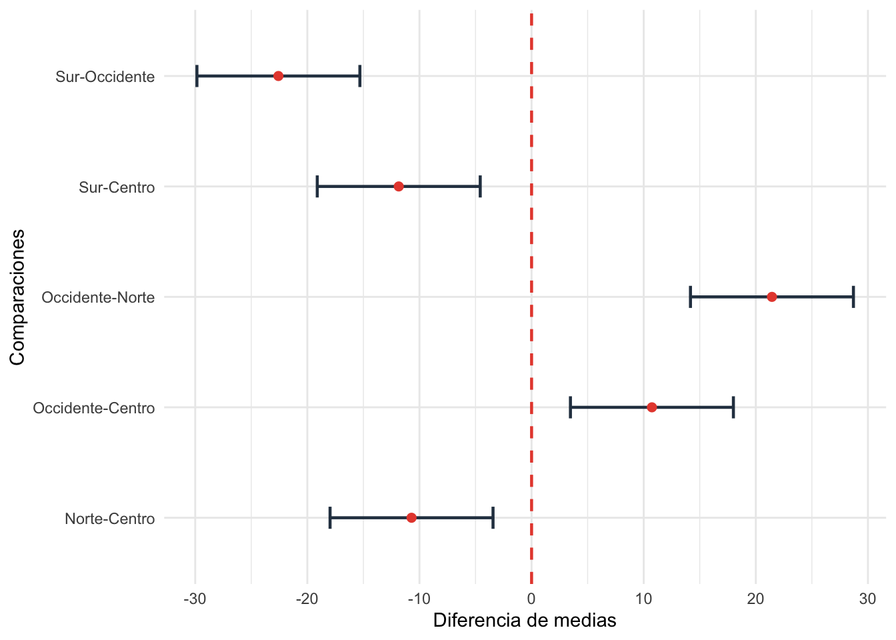
Con ello, podemos darnos una mejor idea de las diferencias respecto a cada grupo de regiones (específicamente en aquellas donde tenemos una diferencia significativa estadísticamente).
Más adelante discutiremos algunas pruebas no paramétricas para ANOVA, en caso de que alguno de los supuestos que vimos no se cumplan.
6.2.5.8 Validando la autocorrelación
Otro de los supuestos fundamentales en la inferencia estadística, especialmente en el contexto de modelos de regresión y análisis de series de tiempo, es la independencia de los errores, estrechamente relacionada con la autocorrelación. Este supuesto establece que los errores del modelo no deben estar correlacionados entre sí; es decir, el valor del error asociado a una observación no debe depender del valor de los errores correspondientes a observaciones previas o posteriores. Cuando esta condición se cumple, se garantiza que cada observación aporta información independiente al modelo, permitiendo obtener estimaciones insesgadas e inferencias estadísticas confiables. En contraste, la presencia de autocorrelación indica que los errores siguen un patrón sistemático a lo largo del tiempo o del orden de las observaciones, lo que puede conducir a una subestimación de la varianza de los coeficientes y generar conclusiones erróneas (Durbin and Watson 1950).
La autocorrelación no se refiere a una variable considerada de manera aislada, sino a la relación existente entre los errores de distintas observaciones, generalmente ordenadas en el tiempo o en una secuencia lógica. En este capítulo se aborda desde una perspectiva exploratoria, tal cual fue el caso de la heteroscedasticidad, mientras que su tratamiento formal como supuesto del modelo de regresión será desarrollado en el capítulo siguiente.
Desde el análisis exploratorio, es posible identificar indicios de autocorrelación mediante herramientas gráficas, tales como gráficos de la serie temporal, gráficos de residuos ordenados en el tiempo o diagramas de dispersión de residuos rezagados. Estas visualizaciones permiten detectar patrones persistentes, ciclos o tendencias en los errores, los cuales sugieren que la información contenida en una observación no es completamente independiente de las demás.
Posteriormente, una vez que se haya estimado un modelo lineal y se disponga de los residuales, se podrán aplicar pruebas estadísticas formales para evaluar la autocorrelación de manera formal, pudiendo rechazar o no rechazar este supuesto de una manera más contundente. Entre las más utilizadas se encuentran la prueba de Durbin-Watson, orientada principalmente a detectar autocorrelación de primer orden, y pruebas más generales como la de Breusch-Godfrey, que permiten evaluar autocorrelación de órdenes superiores. En esta sección no abordaremos estas pruebas por el momento.
A continuación, se analizarán distintos tipos de gráficos exploratorios que permiten evaluar de forma preliminar la posible presencia de autocorrelación en los datos. Aunque en esta etapa aún no se cuenta con residuales derivados de un modelo de regresión, estos gráficos proporcionan evidencia visual suficiente para identificar dependencias temporales o secuenciales entre las observaciones, lo cual constituye una primera aproximación al diagnóstico de autocorrelación. Los gráficos a analizar serán:
Gráfico de series de tiempo: Representa los valores de la variable (o de los errores) ordenados en el tiempo o en la secuencia de observaciones, lo que permite identificar patrones persistentes, tendencias o comportamientos constantes que sugieren dependencia entre observaciones consecutivas.
Gráfico de dispersión de residuos rezagados (lag plot): Muestra la relación entre un valor y su rezago inmediato (por ejemplo, \(t\) frente a \(t-1\)), facilitando la detección visual de correlación entre observaciones consecutivas cuando se observa una estructura definida en lugar de una nube aleatoria de puntos.
Correlograma (ACF): Muestra los coeficientes de autocorrelación para distintos rezagos, permitiendo identificar hasta qué punto las observaciones están correlacionadas con valores pasados y en qué rezagos dicha dependencia es estadísticamente relevante.
6.2.5.8.1 Gráfico de series de tiempo
Como no es de extrañar, para las siguientes secciones del libro (y para el resto de tu vida laboral, obviamente) vamos a utilizar bastante los gráficos de series de tiempo y, sobre todo, los datos de este estilo, por lo que me parece importante comenzar con una explicación breve de estos gráficos, aunque la definición formal y explicación matemática de las series de tiempo la veremos con profundidad en el siguiente capítulo. Por ahora nos quedaremos con el apoyo visual para el análisis exploratorio de datos.
Como primer apoyo gráfico para identificar la autocorrelación (de forma parcial), vamos a hacer uso de un gráfico de una serie temporal. Este tipo de gráfico permite observar la evolución de una variable aleatoria \(\{ k_t \}_{t=1}^{T}\) a lo largo del tiempo, representando los valores observados en el eje vertical y el orden temporal en el eje horizontal, siendo cada valor \(Y_t\) una observación indexada en un periodo temporal (años, meses, días, etc). A diferencia de otros gráficos exploratorios que analizan relaciones entre variables distintas, el gráfico de la serie temporal se enfoca en la dependencia interna de la variable consigo misma a través del tiempo (Hyndman and Athanasopoulos 2021).
De manera muy resumida, los componentes más comunes de una serie de tiempo son:
Tendencia: Refleja el movimiento de largo plazo de la serie, es decir, si los valores tienden a aumentar, disminuir o permanecer estables conforme avanza el tiempo.
Estacionalidad: Captura patrones que se repiten de forma regular en intervalos fijos de tiempo, como meses, trimestres o años.
Ciclo: Representa fluctuaciones de mediano o largo plazo que no siguen una periodicidad fija, usualmente asociadas a fenómenos económicos, sociales o estructurales.
Componente aleatorio: Agrupa la variabilidad no explicada por los componentes anteriores y que responde a factores impredecibles o errores de medición.
Aunque en esta etapa no realizaremos una descomposición formal de la serie, tener claros estos componentes facilita enormemente la interpretación visual del gráfico y sienta las bases para entender por qué la autocorrelación y la dependencia temporal son propiedades esperables y, en muchos casos, inevitables.
Ahora, hablando más específicamente de autocorrelación, podemos decir que esta situación ocurre cuando:
\[ \text{Cov}(Y_t, Y_{t-k} \neq 0 \text{ Para algún } k\geq 1) \]
Lo que dicho en español significa que el valor que toma la variable en un periodo \(t\) no es independiente de los valores que tomó en periodos anteriores, por lo que la información contenida en \(Y_{t-k}\) puede ayudar a explicar en cierta medida el comportamiento de \(Y_t\).
Regresando al gráfico de series de tiempo, los patrones visuales que nos pueden ayudar a identificar posibles casos de autocorrleación suelen ser:
- Secuencias prolongadas de observaciones con el mismo signo relativo respecto a la media \(E(Y_t)\).
- Comportamientos cíclicos o estacionales, donde \(Y_t \approx Y_{t-s}\) para algún periodo \(s\).
- Cambios graduales entre observaciones consecutivas, lo que podría indicar que \(Y_t\) depende en cierta medida de \(Y_{t-s}\).
Es aproximadamente la cuarta vez que lo menciono, pero me parece sumamente importante enfatizar que solo estamos realizando un análisis gráfico y descriptivo. Aunque la presencia de estos patrones implica que el supuesto de independencia temporal podría no cumplirse, el gráfico de la serie temporal no permite rechazar o no rechazar formalmente la existencia de autocorrelación ni cuantificar su magnitud.
Ahora si, vamos a la parte interesante. Vamos a realizar un ejemplo de una serie de tiempo, utilizando datos reales de casos de ébola en 2014, disponibles en el repositorio oficial del libro:
Comencemos por leer los datos:
ebola_data <- "https://raw.githubusercontent.com/Jorge-hercas/
r-para-inteligencia-de-negocios/refs/heads/main/CSV/
ebola.csv"
ebola_data <- vroom::vroom(ebola_data, delim = "|")# A tibble: 6 × 7
Country Localite Category Value Date Sources Link
<chr> <chr> <chr> <dbl> <dttm> <chr> <chr>
1 Guinea Guekedou, Macenta, N… Cases 86 2014-03-24 00:00:00 WHO http…
2 Guinea Guekedou, Macenta, N… Deaths 59 2014-03-24 00:00:00 WHO http…
3 Guinea ( Guekedou, Macenta … Cases 86 2014-03-25 00:00:00 WHO http…
4 Guinea ( Guekedou, Macenta … Deaths 60 2014-03-25 00:00:00 WHO http…
5 Guinea ( Guekedou, Macenta … Cases 86 2014-03-26 00:00:00 WHO http…
6 Guinea ( Guekedou, Macenta … Deaths 62 2014-03-26 00:00:00 WHO http…Ahora, vamos a generalizar la información, tomando únicamente casos semanales para todos los países registrados en este dataset:
# Resumen
ebola_data_resumen <-
ebola_data |>
filter(Category == "Cases") |>
mutate(Date = lubridate::floor_date(as.Date(Date),
"weeks")) |>
group_by(Date) |>
summarise(
Cases = sum(Value, na.rm = T)
)
ebola_data_resumen |>
head()# A tibble: 6 × 2
Date Cases
<date> <dbl>
1 2014-03-23 361
2 2014-03-30 535
3 2014-04-06 870
4 2014-04-13 1101
5 2014-04-20 1432
6 2014-04-27 940Vamos ahora a generar un gráfico de series de tiempo, para ver a grandes razgos la tendencia:
ebola_data_resumen |>
ggplot(aes(x = Date, y = Cases)) +
geom_line(color = "#c74a4a", linewidth = 0.8) +
scale_y_continuous(labels = scales::label_comma()) +
labs(
x = NULL,
y = NULL
) +
theme_minimal()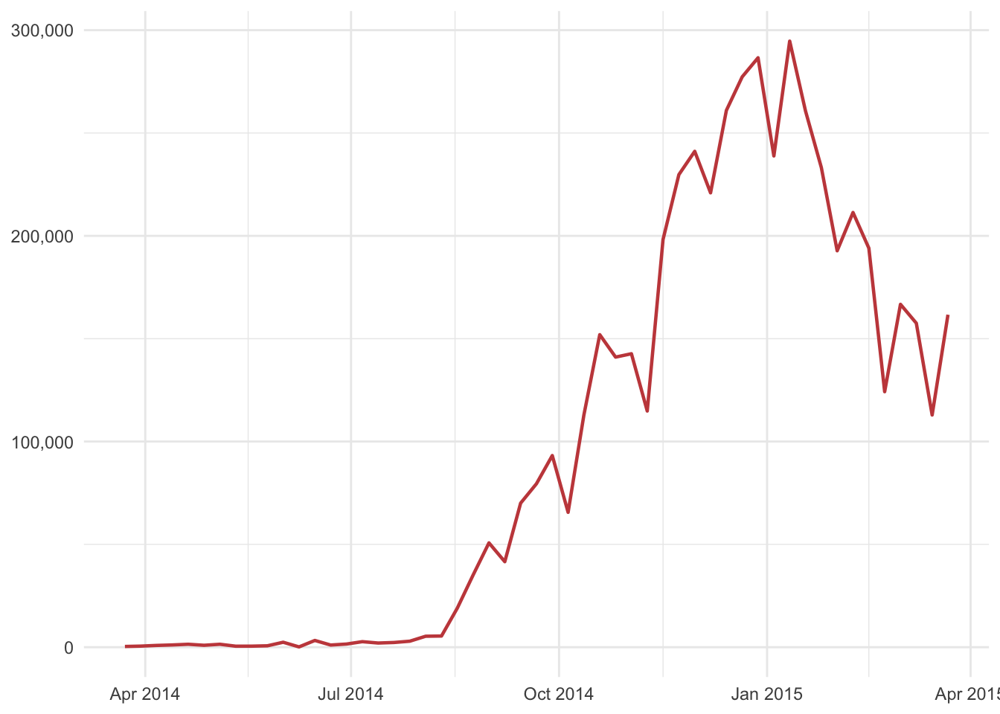
A partir del gráfico anterior podemos observar varios de los patrones que mencionamos previamente. En primer lugar, se aprecia una tendencia claramente creciente durante gran parte de 2014, seguida por un punto máximo a finales de ese mismo año e inicios de 2015, y posteriormente una disminución gradual, aunque con fluctuaciones importantes entre semanas consecutivas. Este comportamiento difícilmente sería compatible con una serie compuesta por observaciones independientes, ya que los cambios entre periodos son, en su mayoría, progresivos y no abruptos. Es posible identificar rachas prolongadas de valores por encima y por debajo de la media, lo que podría sugerir la presencia de dependencia temporal. Dicho de una forma más sencilla, cuando el número de casos comienza a aumentar en una semana determinada, es altamente probable que en las semanas siguientes los valores continúen siendo elevados, y algo similar ocurre durante la fase de descenso. Este patrón suele indicar la presencia de autocorrelación positiva.
Es importante notar que el gráfico no muestra un patrón estacional claro y repetitivo en intervalos más amplios, por ejemplo, a nivel mensual. Repitiendo el gráfico con una granularidad menor, tenemos:
# Resumen
ebola_data_resumen_mensual <-
ebola_data |>
filter(Category == "Cases") |>
mutate(Date = lubridate::floor_date(as.Date(Date),
"months")) |>
group_by(Date) |>
summarise(
Cases = sum(Value, na.rm = T)
)
ebola_data_resumen_mensual |>
ggplot(aes(x = Date, y = Cases)) +
geom_line(color = "#c74a4a", linewidth = 0.8) +
scale_y_continuous(labels = scales::label_comma()) +
labs(
x = NULL,
y = NULL
) +
theme_minimal()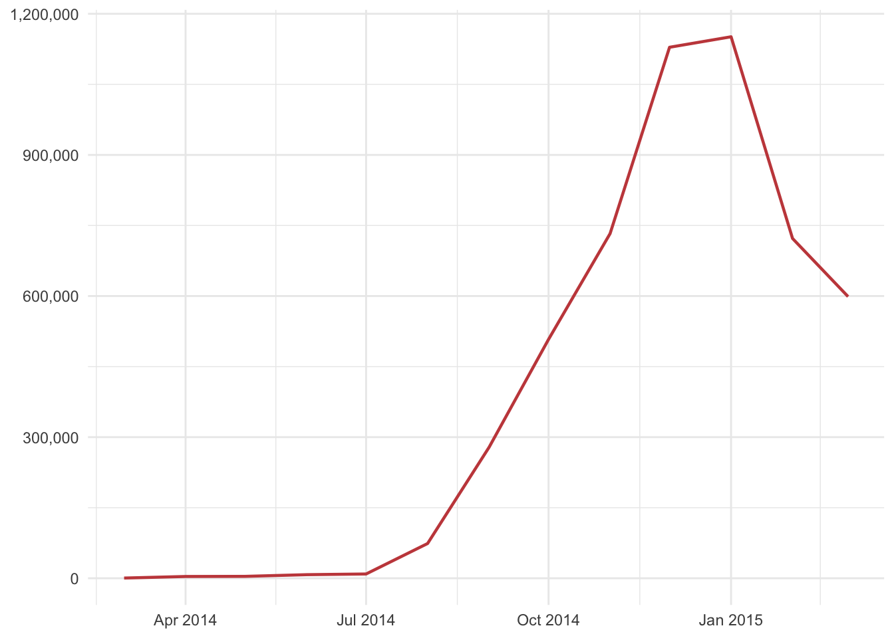
Podemos ver que el patrón estacional se pierde, lo cual tiene sentido considerando el tipo de datos epidemiológicos que estamos tratando. A diferencia de fenómenos como ventas, donde existen ciclos claramente asociados al calendario, la evolución de un brote epidémico suele estar dominada por factores estructurales y eventos exógenos, como la tasa de contagio, la efectividad de las medidas de contención, la capacidad del sistema de salud. etc, lo que si, nos puede llevar a pensar que situaciones del pasado van a interferir directamente en lo que ocurrirá después para esta serie de tiempo.
Obviamente, este gráfico de la serie temporal nos permite comenzar a inferir la existencia de autocorrelación, pero no podemos rechazarla o no rechazarla hasta tener una prueba formal al respecto.
6.2.5.8.2 Gráfico de dispersión de residuos rezagados (lag plot)
Si bien un gráfico de serie temporal general es una herramienta útil para comenzar a entender la naturaleza de nuestros datos, vamos ahora a avanzar con gráficos que nos permitan explorar esta dependencia de forma un poco más explícita, comenzando con un gráfico de dispersión de residuos rezagados (lag plot).
Un lag plot no es más que un gráfico de dispersión, donde en el eje horizontal se representan los valores de la serie en el periodo \(t-k\) y en el eje vertical los valores en el periodo \(t\), es decir, se grafica \(Y_t\) contra \(Y_{t-k}\) para algún rezago \(k \geq 1\). Básicamente, cada punto del gráfico corresponde a un par ordenado \((Y_{t-k}, Y_t)\).
Este tipo de gráfico es bastante sencillo de interpretar, ya que si no nos encontramos ante una situación de autocorrelación, entonces no debería existir una relación visible entre ambas variables, por lo que el gráfico debería asemejarse a una nube de puntos sin estructura aparente. Por el contrario, si existe autocorrelación, el gráfico tenderá a mostrar algún tipo de patrón reconocible. Los patrones que podemos encontrar en este gráfico son:
- Nube de puntos sin forma definida: Indica ausencia de autocorrelación para el rezago analizado.
- Relación lineal positiva: Indica autocorrelación positiva, valga la redundancia, donde valores altos en \(t-k\) tienden a ser seguidos por valores altos en \(t\).
- Relación lineal negativa: Indica autocorrelación negativa, de forma inversa que el caso anterior.
Terminando con las explicaciones, vamos ahora a ver un ejemplo en R utilizando los datos que venimos trabajando en el gráfico anterior sobre casos de ébola. Vamos a hacer el ejercicio con nuestros datos semanales, utilizando un rezago de \(k = 1\), es decir, mirando solamente un periodo hacia atrás:
# Rezago de K = 1
ebola_data_resumen |>
arrange(Date) |>
mutate(
Cases_lag_1 = dplyr::lag(Cases, 1)
) |>
ggplot(aes(x = Cases_lag_1, y = Cases)) +
geom_point(color = "#c74a4a", alpha = 0.7) +
labs(
x = expression(Y[t-1]),
y = expression(Y[t])
) +
theme_minimal()Warning: Removed 1 row containing missing values or values outside the scale range
(`geom_point()`).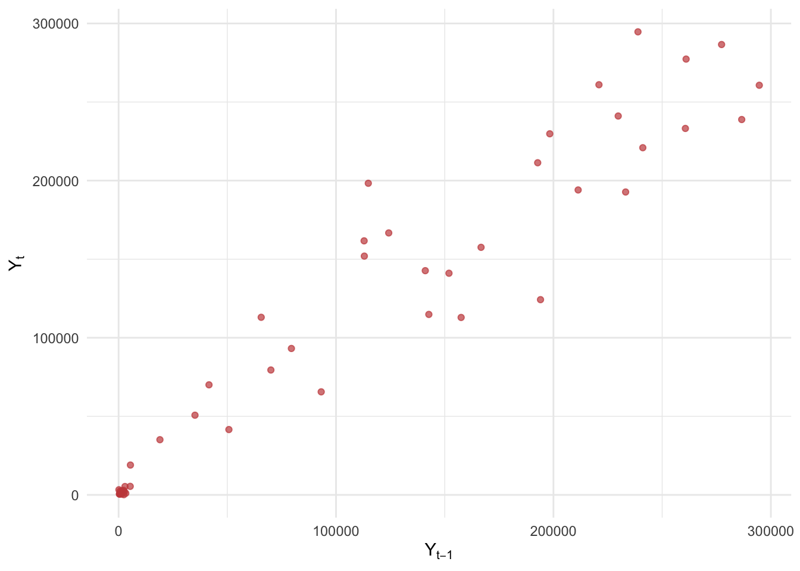
Rápidamente, podemos darnos cuenta de la presencia de una relación positiva claramente definida entre \(Y_{t-1}\) y \(Y_t\), siendo que los puntos no se distribuyen de forma aleatoria, sino que tienden a alinearse a lo largo de una diagonal creciente, lo cual indica que valores altos en un periodo suelen ser seguidos por valores altos en el periodo siguiente, por ejemplo. Básicamente, el número de casos registrados en una semana contiene información relevante para explicar el número de casos de la semana siguiente.
Este Lag Plot refuerza la intuición obtenida a partir del gráfico de la serie temporal: la serie no cumple el supuesto de independencia temporal, aunque, al igual que en los casos anteriores, esta evidencia es únicamente descriptiva.
6.2.5.8.3 Correlograma (ACF)
Hasta ahora hemos utilizado herramientas gráficas que nos permiten intuir la presencia de dependencia temporal en nuestros datos, sin embargo, tanto el gráfico de la serie temporal como el lag plot se enfocan en relaciones puntuales o visuales entre observaciones. Para avanzar un paso más en el análisis exploratorio, resulta conveniente utilizar una herramienta que nos permita resumir de forma sistemática la relación entre \(Y_t\) y sus valores pasados para múltiples rezagos simultáneamente. Para esto, vamos a utilizar el correlograma (función de autocorrelación) (Box et al. 2015).
La función de autocorrelación mide, para cada rezago \(k \geq 1\), la correlación lineal entre \(Y_t\) y \(Y_{t-k}\), y podemos definirlo formalmente como:
\[ p(k) = \text{Corr} (Y_t, \; Y_{t-k} ) \]
Básicamente, el correlograma se encarga de representar gráficamente los coeficientes de autocorrelación para distintos valores de \(k\), donde el eje horizontal indica el rezago y el eje vertical el valor de la autocorrelación estimada.
Este gráfico se interpreta de forma sencilla: Si la serie no presenta autocorrelación, los valores de la ACF deberían ser cercanos a cero para todos los rezagos y permanecer dentro de las bandas de confianza. Por el contrario, la presencia de autocorrelación se manifiesta a través de barras significativamente distintas de cero para uno o varios rezagos.
Terminemos ahora con un ejemplo sencillo de un correlograma basado en los datos que hemos venido trabajando en esta sección. De forma nativa, es posible generar este gráfico utilizando la función acf() de R; sin embargo, creo que como lector ya tienes bastante claro cuál es mi postura respecto a los gráficos nativos. Por ello, construiremos el correlograma paso a paso utilizando ggplot2. Como primer paso, vamos a calcular los coeficientes de autocorrelación:
# Calcular el ACF
acf_data <- ebola_data_resumen |>
arrange(Date) |>
with(acf(Cases, plot = FALSE))
# Convertir a data frame
acf_df <- tibble(
lag = as.numeric(acf_data$lag),
acf = as.numeric(acf_data$acf)
)Vamos ahora a calcular un intervalo de confianza:
# Límite de confianza
n <- nrow(ebola_data_resumen)
conf_limit <- 1.96 / sqrt(n)Ya que tenemos lo anterior, podemos generar el gráfico, siendo:
acf_df |>
ggplot( aes(x = lag, y = acf)) +
geom_hline(yintercept = 0, linewidth = 0.4, color = "gray50") +
geom_segment(
aes(xend = lag, yend = 0),
color = "#c74a4a",
linewidth = 0.8
) +
geom_hline(
yintercept = c(-conf_limit, conf_limit),
linetype = "dashed",
color = "gray60"
) +
labs(
x = "Rezago",
y = "Autocorrelación"
) +
theme_minimal()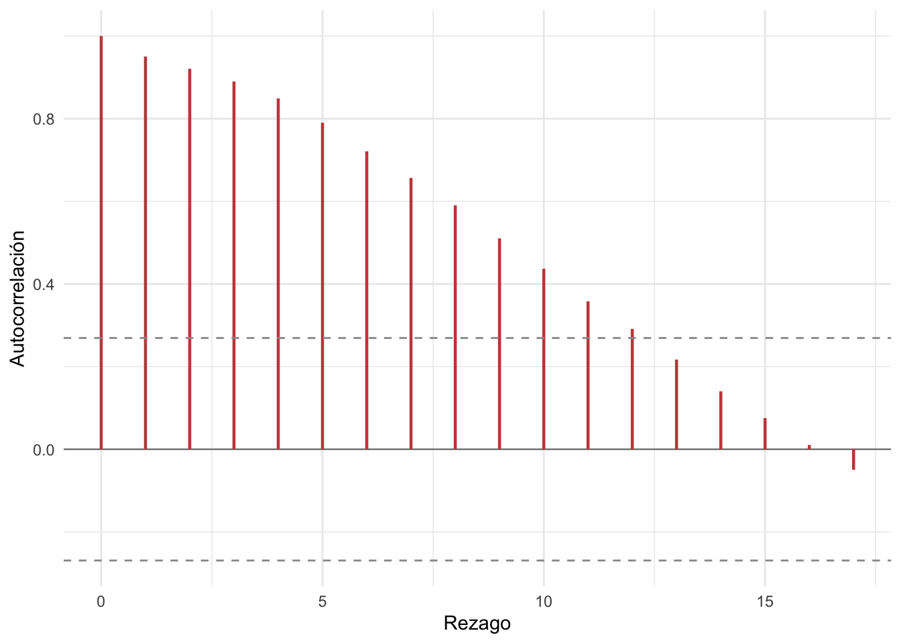
Lo que rápidamente nos muestra que, a este intervalo de confianza del 94%, la mayoría de los coeficientes de autocorrelación para los primeros rezagos se encuentran significativamente alejados de cero y sobrepasan con claridad el límite establecido para este ejercicio. Esto nos indica que, en los rezagos iniciales, existe una fuerte evidencia de autocorrelación positiva, es decir, que los valores observados en una semana determinada están estrechamente relacionados con los valores registrados en semanas previas. Además, el hecho de que la autocorrelación vaya bajando poco a poco conforme aumenta el rezago nos estaría diciendo que la serie temporal guarda cierta “memoria”, es decir, que lo que ocurre en una semana sigue influyendo durante varias semanas después, siendo este un comportamiento bastante común en datos epidemiológicos y poblacionales (aunque eso ya es tema para otro libro).
En el siguiente capítulo, cuando tengamos residuales provenientes de un modelo de regresión, este mismo análisis cobrará aún mayor importancia, ya que uno de los supuestos del modelo de regresión lineal es que los errores no estén autocorrelacionados. Por ahora, basta con reconocer que el correlograma nos proporciona una primera evidencia clara de que la serie presenta dependencia temporal, y que este problema (que para ciertos modelos no es un problema en sí) deberá ser tomado en cuenta en cualquier análisis estadístico más formal.
6.2.6 ¿Por qué se deben cumplir estos supuestos?
Cuando vamos más allá de la estadística descriptiva y comenzamos a hacer inferencia estadística, o incluso a generar pronósticos a partir de los datos, dejamos de limitarnos a resumir la información que tenemos enfrente y empezamos a responder preguntas mucho más interesantes, como:
- ¿Qué tan confiables son mis estimaciones?
- ¿Puedo generalizar estos resultados a una población más grande?
- ¿Qué tan seguro puedo estar de una predicción futura?
Pero para poder llegar a responder estas preguntas, primero debemos entender cómo se comportan nuestros datos, así como la distribución que estos siguen, ya que la mayoría de las herramientas inferenciales que utilizamos en estadística se construyen bajo ciertos supuestos teóricos. cuando aplicamos un modelo estadístico o una prueba de hipótesis, los resultados que obtenemos solo son válidos si los datos cumplen las condiciones que hemos visto hasta ahora: Normalidad, homoscedasticidad, no autocorrelación, entre otros supuestos.
Claro que, el tener que validar estas suposiciones cada vez que vamos a hacer inferencia es bastante molesto, pero tiene una razón de ser que, si no hemos trabajado con datos que presenten problemas, puede ser un poco dificil de entender.
Una forma útil de ver la importancia de estos supuestos es pensar en las consecuencias directas de ignorarlos. En inferencia estadística siempre existe la posibilidad de cometer errores al tomar decisiones, particularmente los llamados errores tipo I y tipo II. Un error tipo I ocurre cuando rechazamos una hipótesis nula verdadera, es decir, detectamos un efecto que en realidad no existe (un falso positivo), mientras que un error tipo II ocurre cuando no rechazamos una hipótesis nula falsa, es decir, no logramos detectar un efecto real (un falso negativo) (ya habíamos explicado esto previamente, pero no está de más recordarlo). Cuando los supuestos estadísticos no se cumplen, las probabilidades de cometer este tipo de errores aumentan, haciendo que los p-values, los intervalos de confianza y las conclusiones generales pierdan validez.
Regresemos a nuestro ejemplo de casos de ébola, y hagamos un análisis sencillo para entender la distribución de los datos:
# Gráfico de densidad
ebola_data_resumen |>
ggplot(aes(x = Cases)) +
geom_density(alpha = 0.8) +
scale_y_continuous(labels = scales::label_number()) +
scale_x_continuous(labels = scales::label_number()) +
labs(x = NULL,
y = NULL,
fill = NULL) +
theme_minimal(base_size = 11)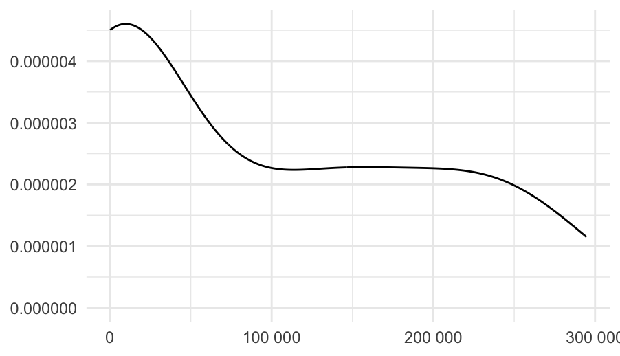
Como podemos darnos cuenta, esta forma para nada es representativa de una distribución normal, ya que la mayor parte de las observaciones se concentra en valores relativamente bajos, mientras que existe una cola larga hacia la derecha que representa periodos con un número extremadamente alto de casos (que podemos ver en la evolución a lo largo del tiempo). ¿Qué pasaría si quisiéramos obtener un promedio de contagios a lo largo de toda la muestra? Obtendríamos un valor que, en apariencia, resume el comportamiento general de los datos. Sin embargo, en un caso como este, ese promedio estaría fuertemente influenciado por los periodos donde los contagios se disparan de manera extrema.
Este es uno de los primeros problemas que aparecen cuando trabajamos con datos no normales: muchas de las herramientas estadísticas que dependen de la media y la desviación estándar comienzan a perder interpretabilidad. Si quisiéramos construir un intervalo de confianza para ese promedio, o realizar una prueba de hipótesis bajo el supuesto de normalidad, estaríamos utilizando un marco teórico que no se ajusta a la realidad de los datos.
En este contexto, el riesgo no es únicamente técnico, sino inferencial: podríamos concluir erróneamente que existe un cambio significativo en los contagios cuando en realidad se trata solo de variabilidad mal modelada (error tipo I), o bien podríamos no detectar un aumento real en los casos porque el modelo no tiene la potencia adecuada bajo supuestos incorrectos (error tipo II).
Si extrapolamos estos problemas a querer hacer un pronóstico utilizando una muestra no normal, al final tendremos estimaciones demasiado (o muy poco) agresivas y poco realistas, p-values poco confiables o modelos que subestiman la incertidumbre real del fenómeno.
Entendiendo lo anterior, me parece que queda bastante clara la razón por la que los supuestos estadísticos que hemos analizado hasta ahora se deben cumplir. Antes de aplicar cualquier procedimiento inferencial, es indispensable evaluar si los supuestos fundamentales son razonables en el contexto del problema, y de esta forma obtener conclusiones estadísticamente válidas.
6.2.6.1 ¿Qué hacer cuando estos supuestos no se cumplen?
Cuando los supuestos clásicos no se cumplen, no necesariamente debemos abandonar el análisis, pero sí ajustar el enfoque. En lugar de aplicar automáticamente pruebas paramétricas, es fundamental evaluar qué tan grave es la violación y qué alternativas existen. Esto implica validar los supuestos incluso en contextos donde la normalidad no está presente, apoyándonos tanto en herramientas visuales como en criterios estadísticos más flexibles.
En muchos casos, la solución puede ser utilizar pruebas no paramétricas, que no dependen estrictamente de distribuciones normales ni de varianzas constantes. En otros, es posible transformar los datos para aproximar mejor los supuestos requeridos y mantener la interpretabilidad del modelo. Sin embargo, estas estrategias tienen límites, y cuando no son suficientes, existen métodos más robustos, como regresiones resistentes (que discutiremos hasta el siguiente capítulo), ajustes como el test de Welch o técnicas de remuestreo como bootstrapping.
En las siguientes secciones revisaremos estas alternativas de manera práctica: cómo validar supuestos en distribuciones no normales, cuándo conviene recurrir a pruebas no paramétricas, qué transformaciones son útiles y qué opciones robustas existen cuando los enfoques tradicionales dejan de ser confiables.
6.2.7 Validando estos supuestos en distribuciones no normales
En las secciones anteriores analizamos con detalle cómo se comportan distintas distribuciones, tanto normales como no normales, y por qué esta distinción es relevante dentro del análisis estadístico. También discutimos que muchos fenómenos reales pueden presentar estructuras alejadas de la normalidad, lo cual tiene implicaciones importantes cuando queremos avanzar más allá de la estadística descriptiva. Por supuesto, en este punto ya ha quedado bastante claro el por qué los supuestos estadísticos son importantes de acuerdo, y por qué ignorarlos puede llevarnos a conclusiones incorrectas. Sin embargo, ya que nos dimos cuenta de que los datos no siempre encajan dentro del marco ideal de la normalidad, el siguiente paso lógico es preguntarnos cómo debemos proceder en estos escenarios.
La inferencia estadística no depende únicamente de que los datos “se vean normales”, sino de que el procedimiento que utilicemos sea consistente con la estructura real de la muestra. Lo anterior nos lleva a la idea de que validar supuestos en distribuciones no normales no significa “comprobar normalidad”, sino evaluar si el enfoque inferencial elegido sigue siendo apropiado. Lo anterior es, de hecho, algo interesante, porque ahora la validación se vuelve un proceso más flexible. En lugar de centrarnos únicamente en una prueba formal de normalidad, debemos ampliar el análisis hacia otros elementos igual o más importantes, como:
- La estabilidad de la varianza a lo largo de los grupos o del tiempo.
- La independencia entre observaciones.
- La estructura de los residuales.
Este escenario introduce una distinción fundamental entre los tipos de familias de herramientas inferenciales: Enfoques paramétricos y no paramétricos (Hollander, Wolfe, and Chicken 2013).
Los métodos paramétricos, como ya hemos mencionado, suelen asumir una forma funcional específica para la distribución (normalidad, varianza constante, etc), lo cual permite construir resultados analíticos más típicos, intervalos cerrados y pruebas con alta potencia estadística cuando los supuestos se cumplen. Sin embargo, cuando estos supuestos se violan (como en ejemplos anteriores), su desempeño puede deteriorarse rápidamente.
Por otra parte, los métodos no paramétricos surgen precisamente como una alternativa para situaciones donde no queremos (o podemos) asumir una distribución particular. En lugar de basarse directamente en parámetros como la media o la varianza, muchas de estas técnicas utilizan rangos, medianas o procedimientos de remuestreo, permitiendo realizar inferencia bajo condiciones mucho más generales.
Ahora, los métodos no paramétricos no son mejores respecto a los paramétricos. Simplemente, cada tipo de enfoque responde a al contexto de nuestros datos. La elección entre un enfoque paramétrico o no paramétrico dependerá de factores como el tamaño muestral, la severidad de la desviación respecto a la normalidad, la presencia de outliers y, obviamente, el tipo de pregunta que queremos responder.
6.2.7.1 Uso de pruebas no paramétricas
En esta sección revisaremos algunas de las pruebas no paramétricas más utilizadas en estadística aplicada, junto con el tipo de preguntas que responden y los contextos donde conviene emplearlas. En particular, abordaremos:
- Prueba de Mann–Whitney U: como alternativa al t-test para dos muestras independientes.
- Prueba de Wilcoxon: para comparaciones pareadas.
- Prueba de Kruskal–Wallis: como equivalente no paramétrico del ANOVA.
Con esto, comenzaremos a desarrollar un análisis inferencial más flexible, que no dependa exclusivamente del caso ideal (con todos los supuestos funcionando perfectamente), sino que se adapte a la estructura real de los datos que estamos analizando.
6.2.7.1.1 Prueba de Mann–Whitney U
Como recordarás, anteriormente discutimos el uso de las pruebas \(t\) para comparar muestras basándonos en la diferencia entre sus medias. Algo que no mencionamos en ese punto, pero que en este momento ya debes tener bastante claro, es que la prueba resulta muy poderosa cuando se cumplen los supuestos paramétricos clásicos: normalidad aproximada en los datos (o en los residuales), varianzas homogéneas entre grupos e independencia entre observaciones. Sin embargo, en la gran mayoría de los escenarios reales estos supuestos simplemente no aplican. Podemos encontrarnos con distribuciones altamente sesgadas, con presencia de valores extremos, o con tamaños muestrales pequeños donde la aproximación normal no es suficientemente confiable. En estos casos, aplicar directamente una prueba \(t\) no será la mejor opción. Aquí es donde entra la prueba de Mann–Whitney U (propuesta formalmente en 1947 por Henry B. Mann y Donald R. Whitney), también conocida como Wilcoxon rank-sum test. Esta prueba es una alternativa no paramétrica al t-test para dos muestras independientes. Su principal ventaja es que no requiere asumir normalidad, ya que no se basa directamente en las medias de los grupos, sino en el orden relativo de las observaciones (Mann and Whitney 1947).
Esta prueba busca evaluar si dos grupos provienen de la misma distribución, tal como en la \(t\). Formalmente, su prueba de hipótesis será:
\[ \begin{aligned} H_0: \text{las dos poblaciones tienen la misma distribución} \\ H_1: \text{las distribuciones difieren en localización} \end{aligned} \]
O bien:
\[ \begin{aligned} H_0: F_1 (x) = F_2 (x) \\ H_1: F_1 (x) \neq F_2 (x) \end{aligned} \]
Ahora, el estadístico Mann–Whitney \(U\) de la prueba se constriye a partir de la siguiente idea: Si ambas poblaciones provienen de la misma distribución, entonces sus observaciones deberían mezclarse aleatoriamente al ordenarlas. En caso contrario, si una población tiende a generar valores mayores que la otra, sus observaciones ocuparán rangos más altos. Para establecer el estadístico \(U\), vamos a suponer dos muestras independientes:
\[ \begin{aligned} X_1, X_2, ... , X_n \\ Y_1, Y_2, ... , Y_n \end{aligned} \]
Con tamaños \(n_1\) y \(n_2\), respectivamente. Se combinan ambas muestras, tal que:
\[ n = n_1 + n_2 \]
Y se ordenan las observaciones de menor a mayor (asignando rangos y obteniendo el promedio de estos mismos en caso de valores iguales). Dado lo anterior, podemos definir la suma de rangos del primer grupo como:
\[ R_X = \sum_{i = 1}^{n_1} R(X_i) \]
Y:
\[ R_Y = \sum_{j = 1}^{n_2} R(Y_i) \]
Para el segundo rango.
Formalmente, podemos definir al estadístico \(U\) para la muestra \(X\) como:
\[ U_X = R_X - \frac{n_1 (n_1 + 1)}{2} \]
Donde \(\frac{n_1 (n_1 + 1)}{2}\) corresponde a la suma mínima posible de rangos, si todos los valores de \(X\) fueran los más pequeños del conjunto combinado. Lógicamente, el estadístico \(U\) para la muestra \(Y\) tendrá una forma equivalente, por lo que se puede definir la siguiente identidad:
\[ U_X + U_Y = n_1 n_2 \]
Lo que, de forma generalizada, puede escribirse como:
\[ U = \text{min}(U_X, U_Y) \]
Finalmente, para interpretar este estadístico, podemos reescribirlo como:
\[ U = \sum_{i = 1}^{n_1} \sum_{j = 1}^{n_2} I(X_i > Y_j) \]
Donde \(I(X_i > Y_j)\) nos da la función indicadora10.
Básicamente, \(U\) cuenta el número de veces que una observación del grupo \(X\) es mayor que una del grupo \(Y\). Bajo la hipótesis nula, esperaríamos que aproximadamente la mitad de las comparaciones favorezcan a cada grupo, es decir:
\[ E(U) = \frac{n_1 n_2}{2} \]
Por su parte, la varianza del estadístico \(U\) bajo ausencia de empates será:
\[ Var (U) = \frac{n_1 n_2(n_1 + n_1 + 1)}{12} \]
Obviamente, en casos donde una población tiende a generar valores mayores, el estadístico \(U\) se desviará de ese valor esperado.
Vamos ahora a la parte interesante. Veamos un ejemplo en R utilizando el dataset birthwt referente al peso de bebés al nacer, disponible en el repositorio oficial del grupo (originalmente obtenido de la librería MASS). Este dataset es interesante para este ejercicio en particular, ya que podemos crear grupos de control basados en diferentes parámetros. Para este ejercicio buscaremos saber si existen diferencias en el peso de los bebés al nacer, dependiendo de si la madre era fumadora/no fumadora. Comencemos por segmentar un par de muestras para casos de madres fumadoras y no fumadoras (valga la redundancia):
# Datos
path <- paste0(
"https://raw.githubusercontent.com/Jorge-hercas/",
"r-para-inteligencia-de-negocios/refs/heads/main/",
"CSV/birthwt.csv")
birthwt <- read.csv(path)
# Generación de grupos
grupo_fumadoras <- birthwt$bwt[birthwt$smoke == 1]
grupo_no_fumadoras <- birthwt$bwt[birthwt$smoke == 0]Ahora, vamos a generar la prueba en cuestión. Afortunadamente para nosotros, de manera nativa ya tenemos la prueba wilcox.test() en R, por lo que solo debemos ejecutar:
# Prueba Mann–Whitney U
wilcox.test(grupo_fumadoras, grupo_no_fumadoras,
alternative = "two.sided")
Wilcoxon rank sum test with continuity correction
data: grupo_fumadoras and grupo_no_fumadoras
W = 3260.5, p-value = 0.006768
alternative hypothesis: true location shift is not equal to 0Como podemos darnos cuenta rápidamente, el \(p-value\) es mucho menor a un nivel de significancia del 5%, por lo que podemos rechazar la hipótesis nula y, por lo tanto, decir que las distribuciones del peso al nacer si son diferentes entre madres fumadoras y no fumadoras.
Este caso previamente analizado es interesante, sin embargo, este fue realizado usando una muestra con una distribución probablemente normal, que podemos verificar rápidamente con una prueba formal:
shapiro.test(birthwt$bwt)
Shapiro-Wilk normality test
data: birthwt$bwt
W = 0.99244, p-value = 0.4353Por lo que ahora vamos a hacer uso de una muestra que no siga esta distribución, ya que lo realmente atractivo de esta prueba no paramétrica es utilizarla en distribuciones que no sigan la normalidad. Vamos a hacer otro ejercicio utilizando el dataset insurance, referente a costos médicos, y disponible en el repositorio oficial del libro. Comencemos por cargar la información y darle un pequeño vistazo, utilizando la columna charges para este ejercicio:
# Datos
path <- paste0(
"https://raw.githubusercontent.com/Jorge-hercas/",
"r-para-inteligencia-de-negocios/refs/heads/main/",
"CSV/insurance.csv")
insurance <- read.csv(path)
# Distribución de la columna "charges"
insurance |>
ggplot(aes(x = charges)) +
geom_histogram(bins = 50,
color = "white") +
labs(x = NULL, y = NULL, fill = NULL) +
theme_minimal(base_size = 10)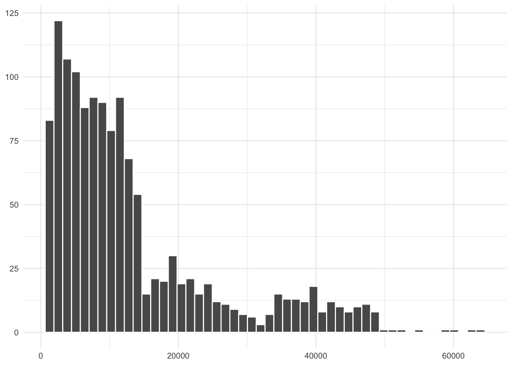
Claramente, la forma de la distribución de los datos no es normal, y, haciendo una comprobación rápida:
shapiro.test(insurance$charges)
Shapiro-Wilk normality test
data: insurance$charges
W = 0.81469, p-value < 0.00000000000000022Podemos decir que no tenemos evidencia para demostrar normalidad, lo que hace a este dataset perfecto para hacer uso del estadístico \(U\) como prueba alternativa al test \(t\). Para este ejercicio vamos a analizar si existe diferencia significativa entre las facturas de personas fumadoras y no fumadoras. Vamos a separar los datos en dos muestras:
grupo_fumadores <- insurance$charges[insurance$smoker == "yes"]
grupo_no_fumadores <- insurance$charges[insurance$smoker == "no"]Y vamos a evaluar si existe diferencia respecto a los cargos hechos a pacientes fumadores/no fumadores:
wilcox.test(grupo_fumadores, grupo_no_fumadores)
Wilcoxon rank sum test with continuity correction
data: grupo_fumadores and grupo_no_fumadores
W = 284133, p-value < 0.00000000000000022
alternative hypothesis: true location shift is not equal to 0En este caso, el \(p-value\) también es mucho menor a un nivel de significancia del 5%, por lo que podemos rechazar la hipótesis nula y, como es de suponer, decir que los cargos promedio del hospital a pacientes si son diferentes entre aquellos que son fumadores y no fumadores, sin embargo,
antes de cerrar este ejemplo, vale la pena hacer una aclaración importante, ya que aunque en términos prácticos muchas veces interpretamos esta prueba como una comparación entre grupos, la prueba de Mann–Whitney U no compara directamente las medias, como lo haría una prueba \(t\). En realidad, compara la posición relativa de las observaciones entre ambos grupos, es decir, evalúa si los valores de un grupo tienden a ser sistemáticamente mayores o menores que los valores del otro, razón por la que una interpretación más precisa sería decir que los cargos médicos de las personas fumadoras tienden a ubicarse en rangos más altos que los cargos médicos de las personas no fumadoras. Para observar esto de forma más clara, podemos comparar visualmente las distribuciones de ambos grupos:
insurance |>
ggplot(aes(x = smoker, y = charges, fill = smoker)) +
geom_boxplot(alpha = 0.7, outlier.alpha = 0.4) +
scale_fill_manual(values = c("#c74a4a", "#4167ba")) +
labs(
x = "Condición de fumador",
y = "Cargos médicos",
fill = NULL) +
theme_minimal()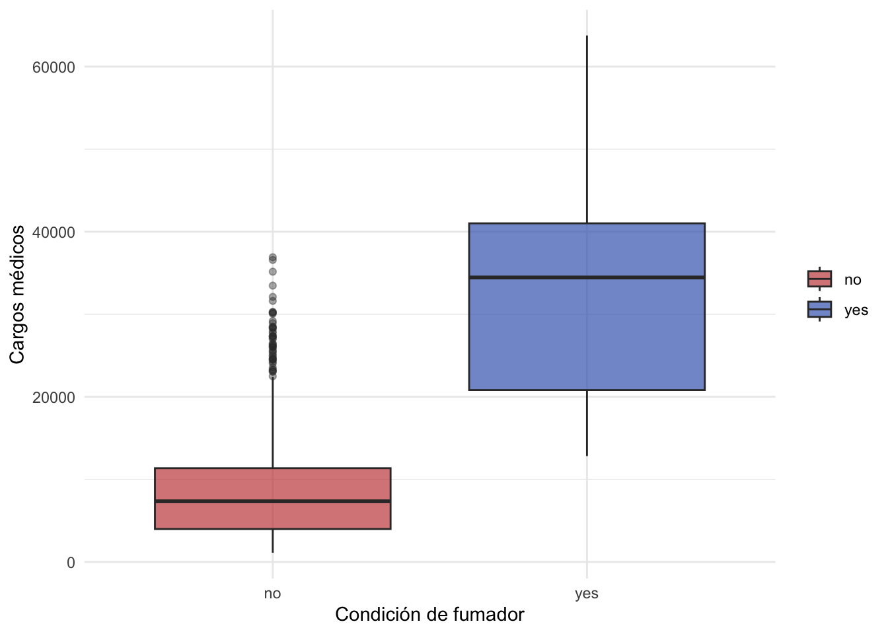
Aquí podemos ver de forma más clara que los pacientes fumadores presentan cargos médicos considerablemente más altos, ya que además, no solo cambia el centro de la distribución, sino también la dispersión, al tener que el grupo de fumadores concentra una mayor cantidad de observaciones con costos elevados.
6.2.7.1.2 Prueba de Wilcoxon
Ya que discutimos la prueba de Mann–Whitney U y sabemos qué alternativa podemos cuando no podemos asumir normalidad, el siguiente paso lógico es preguntarnos qué ocurre cuando las observaciones no son independientes, sino que vienen en pares, es decir, cuando tenemos dos mediciones relacionadas entre sí, como una medición antes y después sobre los mismos individuos, dos evaluaciones aplicadas al mismo grupo o dos condiciones experimentales observadas sobre las mismas unidades.
En estos casos, la prueba más común es la prueba de Wilcoxon para rangos con signo (propuesta por Frank Wilcoxon en 1945), también conocida como Wilcoxon signed-rank test, la cual funciona como una alternativa no paramétrica a la prueba \(t\) pareada, pero con una diferencia importante: En lugar de analizar directamente la media de las diferencias, trabaja con los rangos de las diferencias absolutas, incorporando además el signo de cada diferencia, y lo que queremos evaluar mediante esta prueba es si existe un cambio sistemático entre dos mediciones relacionadas, pero no queremos asumir que las diferencias siguen una distribución normal (Wilcoxon 1945).
En este punto es posible que estes un poco confundido respecto al uso de esta prueba y el uso de la prueba de Mann–Whitney U, ya que por la descripción actual suenan muy parecidas, sin embargo, la diferencia fundamental entre ambas es la relación entre grupos, por ejemplo, en el caso de insurance.csv, al comparar cargos médicos entre fumadores y no fumadores, usamos Mann–Whitney U, porque son personas distintas en dos grupos independientes, mientras que si, por ejemplo, tuviéramos los cargos médicos de los mismos pacientes antes y después de un tratamiento, entonces usaríamos el test de Wilcoxon, ya que son las mismas personas y sus datos van a estar relacionados. Para simplificarlo de forma sencilla, podemos verlo en la siguiente tabla:
| Prueba | Uso | ¿Qué se ordena en rangos? | Alternativa no paramétrica a: |
|---|---|---|---|
| Mann–Whitney U / Wilcoxon rank-sum | Tienes dos grupos independientes | Las observaciones combinadas de ambos grupos | Prueba \(t\) para dos muestras independientes |
| Wilcoxon signed-rank | Tienes datos pareados o relacionados | Las diferencias absolutas entre pares | Prueba \(t\) pareada |
Regresandoa a la prueba de Wilcoxon, hay que entender este método en el sentido de que cada observación de la primera medición tiene una correspondencia directa con una observación de la segunda medición, por eso decimos que se trata de datos pareados.
Matemáticamente, supongamos que tenemos dos mediciones relacionadas:
\[ X_1, X_2, \dots, X_n \]
\[ Y_1, Y_2, \dots, Y_n \]
Donde cada par \((X_i, Y_i)\) corresponde a la misma unidad de análisis, por ejemplo, \(X_i\) podría representar el valor antes de una intervención y \(Y_i\) el valor después de la misma intervención para el individuo \(i\). A partir de esto, calculamos las diferencias:
\[ D_i = Y_i - X_i \]
Entonces, en este punto nos podemos preguntar lo siguiente: ¿Estas diferencias se distribuyen de forma simétrica alrededor de cero? Por lo tanto, la prueba de hipótesis será:
- \(H_0:\) La mediana de las diferencias es igual a cero.
- \(H_1:\) La mediana de las diferencias es diferente de cero.
O bien:
\[ \begin{aligned} H_0 &: \tilde{D} = 0 \\ H_1 &: \tilde{D} \neq 0 \end{aligned} \]
Donde \(\tilde{D}\) es la mediana de las diferencias pareadas.
Nótese que, a diferencia de la prueba \(t\) pareada, la prueba de Wilcoxon no se centra directamente en la media de las diferencias, sino en la posición relativa de dichas diferencias, razón por la que la prueba es particularmente útil cuando las diferencias presentan asimetría moderada, valores extremos o cuando el tamaño de muestra es pequeño.
Ahora bien, el procedimiento de la prueba es bastante simple. Comencemos calculando las diferencias entre pares:
\[ D_i = Y_i - X_i \]
Después, se eliminan aquellas diferencias iguales a cero, ya que no aportan evidencia ni a favor ni en contra de un cambio, tomando posteriormente los valores absolutos de las diferencias:
\[ |D_i| \]
Y reasignamos rangos, ordenándolos de menor a mayor, aunque si tenemos empates, se asigna el promedio de los rangos correspondientes, de forma similar a lo que ocurre en la prueba de Mann–Whitney. Una vez asignados los rangos, se recupera el signo original de cada diferencia, es decir, si \(D_i\) era positiva, su rango se considera positivo; si \(D_i\) era negativa, su rango se considera negativo, y a partir de esto, podemos definir la suma de rangos positivos como:
\[ W^+ = \sum_{D_i > 0} R(|D_i|) \]
Y, respectivamente, para la suma de rangos negativos:
\[ W^- = \sum_{D_i < 0} R(|D_i|) \]
Donde \(R(|D_i|)\) representa el rango asignado al valor absoluto de la diferencia \(D_i\).
Por su parte, el estadístico de prueba suele definirse como:
\[ W = \min(W^+, W^-) \]
Donde, si la hipótesis nula fuera cierta (no la rechazamos), esperaríamos que las diferencias positivas y negativas se distribuyeran de manera relativamente equilibrada, es decir, no debería existir una tendencia clara a que las segundas mediciones sean mayores o menores que las primeras, por lo que las sumas de rangos positivos y negativos deberían ser similares. Respectivamente, si existe un cambio sistemático, entonces una de las dos sumas tenderá a ser mucho mayor que la otra, por ejemplo, si después de una intervención la mayoría de los valores aumentan, entonces \(W^+\) será considerablemente mayor que \(W^-\). Bajo la hipótesis nula, y para muestras suficientemente grandes, el valor esperado de \(W^+\) es:
\[ E(W^+) = \frac{n(n+1)}{4} \]
Por su parte, la varianza en ausencia de empates puede escribirse como:
\[ Var(W^+) = \frac{n(n+1)(2n+1)}{24} \]
Y, por tanto, se puede construir una aproximación normal mediante:
\[ Z = \frac{W^+ - E(W^+)}{\sqrt{Var(W^+)}} \]
Lo que nos permite obtener un p-value para evaluar si la suma de rangos observada se aleja lo suficiente de lo que esperaríamos bajo la hipótesis nula, donde, como es de costumbre, si el valor \(p\) de la prueba resulta menor que nuestro nivel de significancia, por ejemplo \(\alpha = 0.05\), entonces rechazamos la hipótesis nula y concluimos que existe evidencia estadística de una diferencia sistemática entre las dos mediciones pareadas.
Pasemos ahora a la parte práctica, utilizando el dataset german para ver mediciones de errores en un texto, antes y después de un curso de alemán, el cual obtuve originalmente del repositorio de la librería educationR, y también está disponible en el repositorio oficial del libro:
german <- read.csv(paste0("https://raw.githubusercontent.com/Jorge-hercas/",
"r-para-inteligencia-de-negocios/refs/heads/",
"main/CSV/german.csv"))[-1]
german |>
head() rownames student when errors
1 1 1 Before 10
2 2 2 Before 6
3 3 3 Before 8
4 4 4 Before 7
5 5 5 Before 7
6 6 6 Before 12Precisamente el hecho de que sea un dataset pequeño nos sirve para ver el potencial de esta prueba cuando no tenemos muchas observaciones. Ahora bien, antes de aplicar directamente la prueba, necesitamos transformar un poco la base, ya que actualmente cada medición se encuentra en una fila distinta, teniendo una fila para el momento Before y otra para el momento After. Para aplicar correctamente una prueba pareada, necesitamos que cada estudiante tenga sus dos mediciones en la misma fila, de forma que podamos calcular la diferencia entre errores antes y después del curso:
german_wide <- german |>
dplyr::select(student, when, errors) |>
tidyr::pivot_wider(
names_from = when,
values_from = errors
) |>
mutate(
diferencia = After - Before
)
german_wide# A tibble: 10 × 4
student Before After diferencia
<int> <int> <int> <int>
1 1 10 6 -4
2 2 6 4 -2
3 3 8 5 -3
4 4 7 3 -4
5 5 7 6 -1
6 6 12 8 -4
7 7 4 0 -4
8 8 0 1 1
9 9 7 8 1
10 10 10 5 -5Como puedes ver, la columna diferencia resume el cambio observado en cada estudiante, siendo que, si el curso experimental tuvo un efecto positivo, esperaríamos que el número de errores después del curso fuera menor que antes, por lo que las diferencias deberían ser negativas en la mayoría de los casos. Hagamos un resumen rápido para darnos una mejor idea de las diferencias:
german_wide |>
summarise(
errores_antes = mean(Before),
errores_despues = mean(After),
diferencia_promedio = mean(diferencia),
diferencia_mediana = median(diferencia)
)# A tibble: 1 × 4
errores_antes errores_despues diferencia_promedio diferencia_mediana
<dbl> <dbl> <dbl> <dbl>
1 7.1 4.6 -2.5 -3.5Así como el cambio estudiante por estudiante:
german |>
mutate(
when = factor(when, levels = c("Before", "After"))
) |>
ggplot(aes(x = when, y = errors, group = student)) +
geom_line(alpha = 0.5) +
geom_point(size = 2) +
labs(
x = "Momento de medición",
y = "Número de errores"
) +
theme_minimal()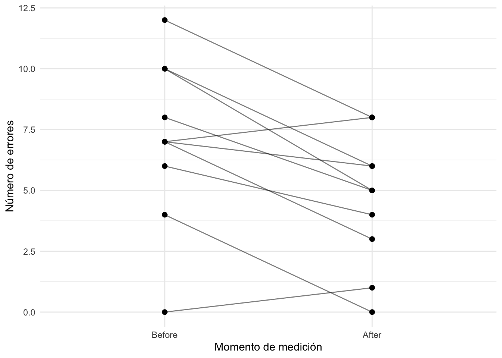
Este tipo de gráficos me parecen más interesantes cuando trabajamos con datos pareados, porque también nos muestran la trayectoria individual, lo que nos da una mejor idea del desempeño que podemos esperar en las pruebas formales.
Ahora si, pasando formalmente a la prueba de Wilcoxon en R, podemos aplicarla utilizando la función wilcox.test(), misma que usamos para la prueba de Mann–Whitney U, pero con la diferencia clave de que en este caso debemos indicar explícitamente que se trata de una prueba pareada usando paired = TRUE:
wilcox.test(
german_wide$After, german_wide$Before, paired = TRUE,
alternative = "two.sided", exact = FALSE
)
Wilcoxon signed rank test with continuity correction
data: german_wide$After and german_wide$Before
V = 4, p-value = 0.01798
alternative hypothesis: true location shift is not equal to 0Donde rápidamente podemos confirmar que, dado el p-value menor al nivel de significancia, podemos concluir que existe evidencia estadística de que el número de errores cambió después del curso experimental (aunque en este caso era algo esperado).
Nótese que en este ejercicio usamos el argumento alternative = "two.sided", ya que de esta forma se evalua si hubo cambios tanto positivos como negativos, sin embargo, para este ejercicio en particular tenemos una hipótesis bastante clara, ya que esperamos que el curso reduzca el número de errores, por lo que podríamos plantear una prueba unilateral para evaluar si los errores después del curso son menores que antes:
wilcox.test(
german_wide$After, german_wide$Before, paired = TRUE,
alternative = "less", exact = FALSE
)
Wilcoxon signed rank test with continuity correction
data: german_wide$After and german_wide$Before
V = 4, p-value = 0.008991
alternative hypothesis: true location shift is less than 0Como podemos ver, es de hecho más claro para la prueba unilateral que hay evidencia estadística de un cambio negativo (reducción de los errores después del curso). Ahora bien, la prueba de Wilcoxon no nos dice directamente que la media de errores disminuyó, sino que las diferencias pareadas tienden a ubicarse sistemáticamente por debajo de cero, por lo que podríamos complementar la prueba con una medida descriptiva sencilla, para tener un panorama más claro:
german_wide |>
summarise(
mediana_antes = median(Before),
mediana_despues = median(After),
mediana_diferencia = median(diferencia)
)# A tibble: 1 × 3
mediana_antes mediana_despues mediana_diferencia
<dbl> <dbl> <dbl>
1 7 5 -3.56.2.7.1.3 Prueba de Kruskal–Wallis
Como siguiente y último caso de pruebas no paramétricas, vamos a discutir la prueba de Kruskal–Wallis (propuesta por William H. Kruskal y W. Allen Wallis en 1952), enfocada a reemplazar a ANOVA si la variable de interés presenta una distribución claramente no normal, si tenemos valores extremos importantes o estamos trabajando con tamaños de muestra pequeños (Kruskal and Wallis 1952).
Esta prueba puede entenderse como una extensión de la prueba de Mann–Whitney U para el caso de tres o más grupos independientes, y, de hecho, mientras que esta última nos permite comparar dos grupos independientes, Kruskal–Wallis generaliza la misma lógica basada en rangos para evaluar si existen diferencias sistemáticas entre varios grupos.
Básicamente, esta prueba funciona como una alternativa no paramétrica al ANOVA de una vía, como ya lo mencioné previamente, pero la diferencia principal radica en que, mientras que ANOVA compara medias directamente, Kruskal–Wallis compara los rangos de las observaciones, razón por la que no requiere asumir normalidad en la variable dependiente. Supongamos, por ejemplo, que queremos comparar los cargos médicos entre más de dos regiones, los tiempos de entrega entre varios centros de distribución, las ventas entre distintos canales comerciales o los niveles de satisfacción entre diferentes sucursales, por lo que si la variable de interés no cumple los supuestos paramétricos necesarios para aplicar un ANOVA, entonces podemos usar Kruskal–Wallis como alternativa.
Matemáticamente, la prueba busca evaluar si las muestras provienen de la misma distribución, por lo que podemos plantear la prueba de hipótesis como:
- \(H_0: F_1(x) = F_2(x) = \dots = F_k(x)\).
- \(H_1:\) Al menos una distribución difiere de las demás.
Respectivamente, cuando las distribuciones de los grupos tienen formas similares, esta prueba suele interpretarse como una comparación de medianas:
- \(H_0: \tilde{X}_1 = \tilde{X}_2 = \dots = \tilde{X}_k\).
- \(H_1:\) Al menos una mediana es diferente.
Aunque hay que tener cuidado con esta interpretación, ya que Kruskal–Wallis no compara directamente las medianas, sino los rangos promedio de los grupos.
Matemáticamente, supongamos que tenemos \(k\) grupos independientes, donde el grupo \(j\) tiene \(n_j\) observaciones:
\[ X_{j1}, X_{j2}, \dots, X_{jn_j} \]
El tamaño total de la muestra será:
\[ N = \sum_{j = 1}^{k} n_j \]
El procedimiento de la prueba comienza combinando todas las observaciones de los \(k\) grupos en una sola muestra, para después ordenarlas de menor a mayor y asignarles rangos, aunque si existen empates, se asigna el promedio de los rangos correspondientes, igual que en las pruebas anteriores.
Ya que asignamos los rangos, calculamos la suma de rangos para cada grupo:
\[ R_j = \sum_{i = 1}^{n_j} R(X_{ji}) \]
Donde \(R_j\) representa la suma de rangos del grupo \(j\), y \(R(X_{ji})\) es el rango asignado a la observación \(i\) dentro del grupo \(j\). A partir de estas sumas de rangos, el estadístico de Kruskal–Wallis se define como:
\[ H = \frac{12}{N(N+1)} \sum_{j = 1}^{k} \frac{R_j^2}{n_j} - 3(N+1) \]
Donde:
- \(N\): Es el número total de observaciones.
- \(k\): Es el número de grupos.
- \(n_j\): Es el tamaño del grupo \(j\).
- \(R_j\): Es la suma de rangos del grupo \(j\).
Lo que nos estaría diciendo esta prueba es que, si la hipótesis nula fuera cierta (no se rechaza), esperaríamos que los rangos se distribuyeran de forma relativamente equilibrada entre todos los grupos, es decir, ningún grupo debería concentrar sistemáticamente los rangos más altos o más bajos, mientras que si uno o varios grupos tienden a tener observaciones mayores o menores, sus rangos promedio se alejarán del patrón esperado bajo igualdad de distribuciones, haciendo que el estadístico \(H\) aumente.
Bajo la hipótesis nula, y para muestras suficientemente grandes, el estadístico \(H\) se aproxima a una distribución \(\chi^2\) con \(k - 1\) grados de libertad:
\[ H \sim \chi^2_{k-1} \]
Por lo tanto, el criterio de decisión será el mismo que hemos seguido en pruebas anteriores, donde si el p-value es menor al nivel de significancia \(\alpha\), entonces rechazamos la hipótesis nula y concluimos que existe evidencia estadística de diferencias entre al menos dos grupos.
Ahora bien, al igual que en ANOVA no tenemos idea de en cuáles grupos específicos hay diferencias, en Kruskal–Wallis ocurre lo mismo, ya que solamente nos dice si existe evidencia de diferencia entre los grupos, razón por la que, después de una prueba de Kruskal–Wallis significativa, podríamos aplicar comparaciones múltiples mediante versiones pareadas de la prueba, que discutiremos más adelante.
Vamos ahora al ejercicio en R, en el cual vamos a utilizar el clásico dataset penguins (básicamente porque después de varias horas de búsqueda, no encontré ningún dataset que no sea meramente ilustrativo para esta prueba en particular):
penguins <- palmerpenguins::penguins
penguins |>
head()# A tibble: 6 × 8
species island bill_length_mm bill_depth_mm flipper_length_mm body_mass_g
<fct> <fct> <dbl> <dbl> <int> <int>
1 Adelie Torgersen 39.1 18.7 181 3750
2 Adelie Torgersen 39.5 17.4 186 3800
3 Adelie Torgersen 40.3 18 195 3250
4 Adelie Torgersen NA NA NA NA
5 Adelie Torgersen 36.7 19.3 193 3450
6 Adelie Torgersen 39.3 20.6 190 3650
# ℹ 2 more variables: sex <fct>, year <int>Este dataset nos da información morfológica de distintas especies de pingüinos observados en el archipiélago Palmer, en la Antártida, por lo que podríamos preguntarnos si la masa corporal de los pingüinos difiere significativamente según su especie. Como podemos ver, tenemos tres grupos independientes: Adelie, Chinstrap y Gentoo, las cuales son las que vamos a comparar, pero primero, comencemos por preparar los datos eliminando información faltante:
penguins_kw <- penguins |>
dplyr::select(species, body_mass_g) |>
filter(
!is.na(species),
!is.na(body_mass_g)
)Ahora, para darnos una mejor idea de los datos que estamos trabajando, generemos un resumen rápido:
penguins_kw |>
group_by(species) |>
summarise(
n = n(),
media = mean(body_mass_g),
mediana = median(body_mass_g),
desviacion = sd(body_mass_g),
minimo = min(body_mass_g),
maximo = max(body_mass_g)
)# A tibble: 3 × 7
species n media mediana desviacion minimo maximo
<fct> <int> <dbl> <dbl> <dbl> <int> <int>
1 Adelie 151 3701. 3700 459. 2850 4775
2 Chinstrap 68 3733. 3700 384. 2700 4800
3 Gentoo 123 5076. 5000 504. 3950 6300Con ello, podemos empezar a dilucidar que sí habrá diferencia estadísticamente significativa respecto a la masa, dado el promedio de esta, aunque esto lo confirmaremos una vez que hagamos la prueba, pero antes, visualicemos la distribución de la masa corporal por especie:
penguins_kw |>
ggplot(aes(x = species, y = body_mass_g, fill = species)) +
geom_boxplot(alpha = 0.7, outlier.alpha = 0.4) +
scale_fill_manual(values = c("#c74a4a", "#4167ba", "#55a868")) +
labs(
x = "Especie",
y = "Masa corporal en gramos",
fill = NULL
) +
scale_y_continuous(labels = scales::comma) +
theme_minimal(base_size = 10)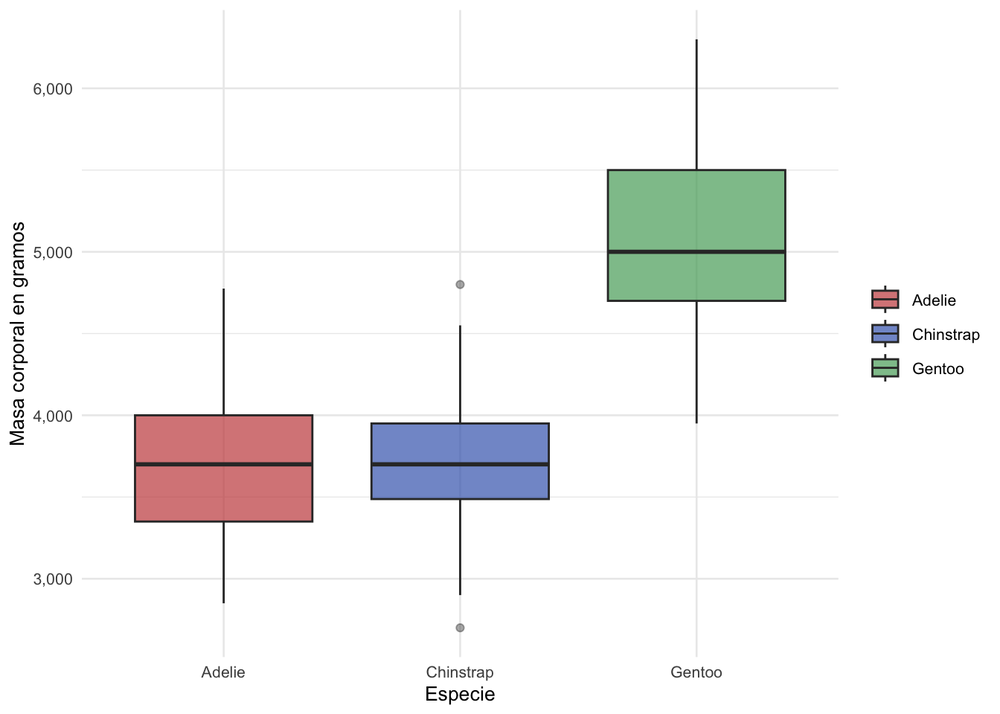
Claramente podemos darnos cuenta de que la especie Gentoo tiende a presentar una masa corporal considerablemente mayor que las especies Adelie y Chinstrap. Veamos ahora rápidamente si la variable body_mass_g sigue una distribución normal dentro de cada grupo:
penguins_kw |>
group_by(species) |>
summarise(
p_value_shapiro = shapiro.test(body_mass_g)$p.value
)# A tibble: 3 × 2
species p_value_shapiro
<fct> <dbl>
1 Adelie 0.0324
2 Chinstrap 0.561
3 Gentoo 0.234 Como puedes ver, Adelie no sigue una distribución normal a un nivel de significancia del \(5\%\), por lo que podemos justificar el uso de la prueba Kruskal–Wallis, la cual podemos calcular en R mediante la función kruskal.test():
kruskal.test(
body_mass_g ~ species,
data = penguins_kw
)
Kruskal-Wallis rank sum test
data: body_mass_g by species
Kruskal-Wallis chi-squared = 217.6, df = 2, p-value <
0.00000000000000022Y, como es de esperarse, rechazamos la hipótesis nula de igualdad de distribuciones entre los grupos. Si bien ya tenemos una idea de cuál es el grupo que presenta diferencias, no podemos decirlo con seguridad hsata que apliquemos otra prueba formal, ya que solo sería inferencia de parte nuestra. Una forma sencilla de hacerlo en R es mediante comparaciones pareadas usando pairwise.wilcox.test(), ajustando los valores \(p\) para controlar el problema de comparaciones múltiples:
pairwise.wilcox.test(
x = penguins_kw$body_mass_g, g = penguins_kw$species,
p.adjust.method = "bonferroni"
)
Pairwise comparisons using Wilcoxon rank sum test with continuity correction
data: penguins_kw$body_mass_g and penguins_kw$species
Adelie Chinstrap
Chinstrap 1 -
Gentoo <0.0000000000000002 <0.0000000000000002
P value adjustment method: bonferroni Como puedes ver en la matriz, la diferencia proviene de dos grupos a comparar: Gentoo contra Adelie y Gentoo contra Chinstrap, lo que de hecho hace bastante sentido, dado el boxplot que generamos hace un momento.
Para terminar este ejercicio, vamos a calcular los rangos promedio por especie, ya que como recordarás, la prueba de Kruskal–Wallis no trabaja directamente con los valores originales, sino con sus rangos:
penguins_kw |>
mutate(
rango = rank(body_mass_g)
) |>
group_by(species) |>
summarise(
rango_promedio = mean(rango),
mediana_masa = median(body_mass_g),
n = n()
) |>
arrange(desc(rango_promedio))# A tibble: 3 × 4
species rango_promedio mediana_masa n
<fct> <dbl> <dbl> <int>
1 Gentoo 277. 5000 123
2 Chinstrap 116. 3700 68
3 Adelie 111. 3700 151Este resultado nos ayuda a interpretar la prueba de forma más coherente, ya que la especie con el rango promedio más alto será aquella cuyos individuos tienden a presentar mayor masa corporal, lógicamente.
Como anéctoda personal, cuando estaba en la universidad esta era la prueba que más solía recordar y aplicar, simplemente porque me recordaba al nombre del crustáceo cascarudo.
6.2.7.2 Transformaciones en los datos
Hasta ahora hemos revisado una primera familia de alternativas cuando los supuestos clásicos no se cumplen: Las pruebas no paramétricas, las cuales son bastante útiles cuando no queremos asumir normalidad, cuando tenemos valores extremos o cuando la estructura de los datos hace poco razonable trabajar directamente con medias, sin embargo, esta no es la única forma o estrategia disponible. Como mencionamos al inicio de esta sección, otra posibilidad consiste en transformar los datos para intentar aproximar mejor los supuestos requeridos por ciertos métodos paramétricos (Box and Cox 1964).
La idea de transformar una variable es bastante simple, ya que en lugar de analizar directamente la variable original, por ejemplo, \(Y\), analizamos una nueva versión de ella, digamos \(Y^*\), obtenida mediante alguna función matemática:
\[ Y^* = g(Y) \]
Donde \(g(\cdot)\) representa una transformación aplicada a los datos originales, por ejemplo, podríamos transformar una variable mediante logaritmos, raíces cuadradas, potencias o alguna transformación más flexible como Box-Cox. En estas transformaciones el objetivo no es manipular los datos para que nos den el resultado que queremos, sino modificar la escala de análisis para que ciertos patrones sean más fáciles de modelar, algo que es especialmente útil cuando tenemos distribuciones muy asimétricas, varianzas que aumentan conforme aumenta el nivel de la variable o relaciones no lineales entre variables, por ejemplo, en datos de ingresos, ventas, costos médicos, tiempos de espera o precios, es muy común observar distribuciones sesgadas hacia la derecha, donde la mayoría de las observaciones se concentran en valores bajos o moderados, pero existen algunos valores extremadamente altos. En estos casos, una transformación logarítmica puede ayudar a comprimir la escala y reducir el impacto visual y estadístico de los valores extremos.
La transformación logarítmica se define como:
\[ Y^* = \log(Y) \]
Y suele utilizarse cuando la variable es estrictamente positiva, es decir, cuando:
\[ Y > 0 \]
Esto tiene sentido, ya que el logaritmo de cero o de valores negativos no está definido dentro de los números reales, siendo que en la práctica, esta transformación es muy útil cuando los datos presentan una asimetría positiva fuerte, como en el caso de los costos médicos del dataset insurance, donde algunos pacientes tienen cargos extremadamente altos en comparación con el resto.
Una segunda transformación bastante común es la raíz cuadrada:
\[ Y^* = \sqrt{Y} \]
Esta suele utilizarse en variables de conteo, por ejemplo, número de accidentes, número de visitas, número de errores o número de eventos observados en un periodo, ya que a diferencia del logaritmo, la raíz cuadrada es menos agresiva, por lo que puede ser útil cuando la asimetría existe, pero no es demasiado extrema.
También podemos encontrar transformaciones inversas, como:
\[ Y^* = \frac{1}{Y} \]
Aunque esta transformación debe utilizarse con más cuidado, porque cambia de forma importante la interpretación de la variable, además, si existen valores cercanos a cero, la transformación inversa puede generar valores extremadamente grandes, lo cual podría introducir nuevos problemas en lugar de resolver los existentes (de hecho, es posible que esta sea la transformación que menos uses en la práctica, porque suele causar más problemas de los que resuelve, en mi experiencia).
De forma general, podemos resumir algunas transformaciones frecuentes de la siguiente manera:
| Transformación | Forma matemática | Uso común |
|---|---|---|
| Logarítmica | \(Y^* = \log(Y)\) | Variables positivas con asimetría fuerte hacia la derecha |
| Raíz cuadrada | \(Y^* = \sqrt{Y}\) | Conteos o variables con asimetría moderada |
| Inversa | \(Y^* = 1/Y\) | Relaciones muy no lineales o asimetría extrema |
| Potencia | \(Y^* = Y^\lambda\) | Familia general de transformaciones |
| Box-Cox | Depende de \(\lambda\) | Selección automática de una potencia adecuada |
Una de las transformaciones más conocidas dentro de esta familia es la transformación Box-Cox, la cual busca encontrar una potencia óptima para transformar la variable dependiente. Matemáticamente, la podemos definir como:
\[ Y^{(\lambda)} = \begin{cases} \dfrac{Y^\lambda - 1}{\lambda}, & \lambda \neq 0 \\ \log(Y), & \lambda = 0 \end{cases} \]
Donde \(\lambda\) es el parámetro que determina la forma de la transformación. Si \(\lambda = 1\), prácticamente mantenemos la variable en su escala original, mientras que si \(\lambda = 0\), la transformación equivale a aplicar logaritmos, pero si \(\lambda = 0.5\), sería cercana a una raíz cuadrada, por eso, Box-Cox puede entenderse como una familia flexible que incluye varias transformaciones comunes dentro de una misma estructura.
Ahora bien, hay una aclaración importante, ya que transformar una variable no significa que automáticamente los datos se vuelvan normales. De hecho, en muchos casos, especialmente cuando tenemos muestras grandes, una prueba formal como Shapiro-Wilk puede seguir rechazando normalidad incluso después de transformar los datos, por eso, más que obsesionarnos con obtener una normalidad perfecta, debemos preguntarnos si la transformación mejora el comportamiento general de la variable, reduce la asimetría, estabiliza la varianza y permite construir un modelo más interpretable.
Veamos esto de forma más clara con el dataset insurance, que ya utilizamos previamente:
insurance |>
head() X age sex bmi children smoker region charges
1 1 19 female 27.900 0 yes southwest 16884.924
2 2 18 male 33.770 1 no southeast 1725.552
3 3 28 male 33.000 3 no southeast 4449.462
4 4 33 male 22.705 0 no northwest 21984.471
5 5 32 male 28.880 0 no northwest 3866.855
6 6 31 female 25.740 0 no southeast 3756.622(Lo estoy imprimiendo de nuevo, porque seguramente ya olvidaste a qué datos nos estamos refiriendo, dado que ya fue hace un rato que trabajamos con esta información).
Recordemos primero cómo se distribuye la variable original charges:
insurance |>
ggplot(aes(x = charges)) +
geom_histogram(bins = 50, color = "white") +
labs(
x = "Cargos médicos",
y = "Frecuencia"
) +
scale_x_continuous(labels = scales::comma) +
theme_minimal(base_size = 10)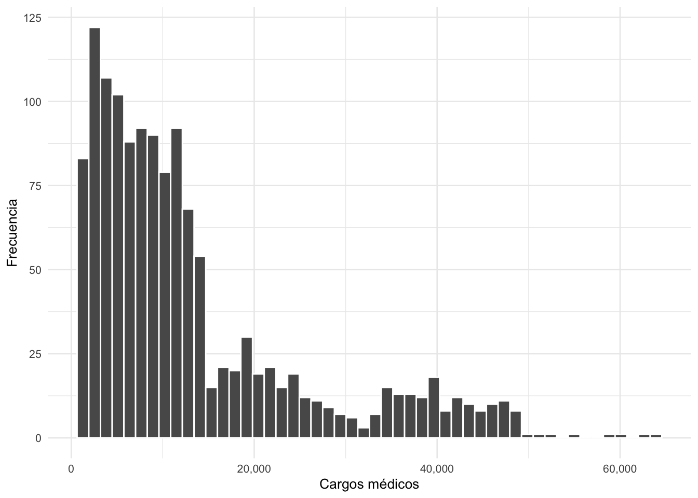
Como vimos anteriormente, esta variable presenta una asimetría positiva bastante clara, ya que la mayoría de los pacientes se concentran en cargos relativamente bajos, mientras que existe un grupo menor con cargos considerablemente altos. En este caso, una transformación logarítmica puede sernos útil:
insurance <- insurance |>
mutate(
charges_log = log(charges)
)Veamos ahora a la la variable transformada:
insurance |>
ggplot(aes(x = charges_log)) +
geom_histogram(bins = 50, color = "white") +
labs(
x = "Logaritmo de cargos médicos",
y = "Frecuencia"
) +
theme_minimal(base_size = 10)Como puedes notar, la transformación logarítmica reduce la asimetría de la distribución en gran medida, aunque los valores extremadamente altos siguen existiendo, pero ahora tienen menos peso visual y estadístico, porque el logaritmo comprime la escala. Claro que esto no significa que hayamos eliminado la variabilidad de los datos, simplemente ahora estamos viéndolos desde una escala distinta.
Vamos a generar algunos resúmenes descriptivos antes y después de la transformación:
insurance |>
summarise(
media_original = mean(charges),
mediana_original = median(charges),
sd_original = sd(charges),
media_log = mean(charges_log),
mediana_log = median(charges_log),
sd_log = sd(charges_log)
) media_original mediana_original sd_original media_log mediana_log sd_log
1 13270.42 9382.033 12110.01 9.098659 9.146552 0.9195271Nótese que los valores en escala logarítmica ya no se interpretan como dólares directamente, sino como logaritmos de los cargos médicos, y esta es una de las principales desventajas de transformar nuestros datos, ya que ganamos estabilidad estadística, pero perdemos interpretación directa en la escala original, y si, se vuelve bastante engorroso cuando tenemos que llevar esto a explicaciones con el negocio, o en general, cuando tenemos que explicar nuestros resultados de forma intuitiva a un tercero.
Ahora bien, supongamos que queremos comparar los cargos médicos entre fumadores y no fumadores, pero en lugar de aplicar la prueba sobre la variable original, queremos trabajar con la variable transformada, por lo que, visualizando el resultado:
insurance |>
ggplot(aes(x = smoker, y = charges_log, fill = smoker)) +
geom_boxplot(alpha = 0.7, outlier.alpha = 0.4) +
scale_fill_manual(values = c("#c74a4a", "#4167ba")) +
labs(
x = "Condición de fumador",
y = "Logaritmo de cargos médicos",
fill = NULL
) +
theme_minimal(base_size = 10)La diferencia entre ambos grupos sigue siendo clara, pero ahora la comparación se realiza sobre una escala logarítmica. Si aplicamos una prueba \(t\) sobre la variable transformada:
t.test(charges_log ~ smoker, data = insurance)
Welch Two Sample t-test
data: charges_log by smoker
t = -46.371, df = 842.66, p-value < 0.00000000000000022
alternative hypothesis: true difference in means between group no and group yes is not equal to 0
95 percent confidence interval:
-1.580041 -1.451713
sample estimates:
mean in group no mean in group yes
8.788232 10.304110 Ya no podríamos decir directamente que “los cargos médicos promedio difieren en cierta cantidad de dólares”, sino que la diferencia ocurre en escala logarítmica, lo cual modifica la forma en la que tenemos que interpretarla.
Una forma más intuitiva de complementar el análisis consiste en calcular los promedios en escala logarítmica y después regresarlos a la escala original mediante la función exponencial:
insurance |>
group_by(smoker) |>
summarise(
n = n(),
media_original = mean(charges),
mediana_original = median(charges),
media_log = mean(charges_log),
media_geometrica = exp(media_log)
)# A tibble: 2 × 6
smoker n media_original mediana_original media_log media_geometrica
<chr> <int> <dbl> <dbl> <dbl> <dbl>
1 no 1064 8434. 7345. 8.79 6557.
2 yes 274 32050. 34456. 10.3 29855.Esta parte se pone interesante, ya que cuando calculamos el promedio en escala logarítmica y luego aplicamos exp(), ya no obtenemos exactamente la media aritmética original, sino una medida más cercana a una media geométrica, la cual suele ser menos sensible a valores extremos y, de hecho, puede ser bastante útil cuando trabajamos con variables como ingresos, costos, precios o montos monetarios, donde unos cuantos valores muy altos pueden distorsionar de forma considerable el promedio tradicional.
Respectivamente, también podemos calcular una comparación relativa entre ambos grupos, por ejemplo, en lugar de decir que un grupo tiene cierta cantidad adicional de dólares, podemos expresar cuántas veces mayor es el valor típico de un grupo frente al otro:
resumen_log <- insurance |>
group_by(smoker) |>
summarise(
media_log = mean(charges_log),
media_geometrica = exp(media_log)
)
resumen_log# A tibble: 2 × 3
smoker media_log media_geometrica
<chr> <dbl> <dbl>
1 no 8.79 6557.
2 yes 10.3 29855.Y si queremos obtener la razón entre fumadores y no fumadores:
razon <- resumen_log |>
summarise(
razon_fumador_no_fumador =
media_geometrica[smoker == "yes"] /
media_geometrica[smoker == "no"]
)
razon# A tibble: 1 × 1
razon_fumador_no_fumador
<dbl>
1 4.55Esta razón es más fácil de comunicar, porque si el resultado fuera, por ejemplo, cercano a 3, podríamos decir que los cargos médicos típicos de los fumadores son aproximadamente tres veces los de los no fumadores. Obviamente la frase exacta dependerá del resultado obtenido, pero la idea importante aquí es que la transformación logarítmica nos lleva a interpretar las diferencias de manera relativa y no tanto como diferencias absolutas en la escala original. De hecho, en muchas aplicaciones de negocio, las diferencias relativas suelen ser más informativas que las diferencias absolutas, por ejemplo, no es lo mismo que un costo aumente de 100 a 200 que de 10,000 a 10,100, aunque en ambos casos podríamos hablar de un aumento de 100 unidades en términos absolutos, por lo que, desde una perspectiva relativa, el primer caso representa un cambio mucho más fuerte que el segundo.
Vamos a comparar visualmente ambas escalas:
insurance |>
dplyr::select(charges, charges_log) |>
pivot_longer(
cols = everything(),
names_to = "variable",
values_to = "valor"
) |>
ggplot(aes(x = valor)) +
geom_histogram(bins = 50, color = "white") +
facet_wrap(~ variable, scales = "free") +
labs(
x = "Valor",
y = "Frecuencia"
) +
theme_minimal(base_size = 10)Con este gráfico podemos observar claramente cómo la transformación logarítmica cambia la forma de la distribución, ya que la variable original se encuentra mucho más concentrada en valores bajos, con una cola larga hacia la derecha, mientras que la variable transformada presenta una forma más equilibrada, aunque esto no quiere decir que la transformación sea mejor en todos los sentidos, sino que nos ayuda a trabajar con una escala donde la comparación sea menos dominada por los valores extremos.
Discutamos ahora la transformación Box-Cox un poco más a fondo, ya que a diferencia de aplicar directamente un logaritmo o una raíz cuadrada, aquí no decidimos manualmente qué transformación utilizar, sino que buscamos un valor de \(\lambda\) que nos permita transformar la variable de una manera más conveniente.
Podemos saltarnos la explicación de los diferentes valores de \(\lambda\) y lo que implican para la transformación en sí, ya que ya mencionamos eso previamente, por lo que ahora nos concentraremos en una pregunta más práctica: ¿cómo encontramos ese valor de \(\lambda\)? Una forma intuitiva de hacerlo consiste en probar distintos valores posibles de \(\lambda\) y quedarnos con aquel que produzca una distribución más estable, menos asimétrica y, en términos generales, más cercana a una forma aproximadamente simétrica (básicamente, debuggeando). Para hacer esto, primero podemos crear una función que aplique la transformación Box-Cox:
boxcox_transform <- function(y, lambda) {
if (lambda == 0) {
log(y)
} else {
(y^lambda - 1) / lambda
}
}Recordemos que esta transformación solo puede aplicarse cuando la variable toma valores estrictamente positivos (\(Y > 0\)). Ahora bien, en nuestro caso, la variable charges cumple esta condición, ya que los cargos médicos registrados en el dataset son valores positivos, aunque si tuviéramos ceros o valores negativos, tendríamos que hacer algún ajuste previo, como sumar una constante, aunque eso tendría que justificarse con cuidado porque también modificaría la interpretación de la variable.
Ahora podemos probar diferentes valores de \(\lambda\) y evaluar cuál de ellos reduce más la asimetría de la variable, siendo que para hacer esto, vamos a definir una función sencilla para calcular la asimetría:
asimetria <- function(x) {
media <- mean(x)
desviacion <- sd(x)
mean((x - media)^3) / desviacion^3
}La idea es que una distribución perfectamente simétrica tendría una asimetría cercana a cero (si la asimetría es positiva, significa que la distribución tiene una cola más larga hacia la derecha, y si es negativa, la cola se extiende más hacia la izquierda), por lo que como charges tiene una asimetría positiva muy marcada, nos interesa encontrar una transformación que acerque ese valor a cero. Probemos una secuencia de valores de \(\lambda\):
lambdas <- seq(-2, 2, by = 0.05)
resultados_lambda <- tibble(
lambda = lambdas
) |>
mutate(
asimetria = purrr::map_dbl(
lambda,
~ asimetria(boxcox_transform(insurance$charges, .x))
),
abs_asimetria = abs(asimetria)
)
resultados_lambda |>
arrange(abs_asimetria) |>
head()# A tibble: 6 × 3
lambda asimetria abs_asimetria
<dbl> <dbl> <dbl>
1 0.0500 0.00307 0.00307
2 0 -0.0899 0.0899
3 0.100 0.0955 0.0955
4 -0.0500 -0.183 0.183
5 0.150 0.187 0.187
6 -0.100 -0.277 0.277 En este caso aplicamos la transformación Box-Cox con muchos valores posibles de \(\lambda\), calculamos la asimetría de cada variable transformada y después ordenamos los resultados según qué tan cercana a cero queda dicha asimetría, por lo tanto, podemos guardar el mejor valor de \(\lambda\), tal que:
lambda_optimo <- resultados_lambda |>
slice_min(abs_asimetria, n = 1) |>
pull(lambda)
lambda_optimo[1] 0.05Una vez que tenemos este valor, podemos transformar la variable charges:
insurance <- insurance |>
mutate(
charges_boxcox = boxcox_transform(charges, lambda_optimo)
)Veamos ahora cómo se distribuye la variable transformada:
insurance |>
ggplot(aes(x = charges_boxcox)) +
geom_histogram(bins = 50, color = "white") +
labs(
x = "Cargos médicos transformados con Box-Cox",
y = "Frecuencia"
) +
theme_minimal(base_size = 10)Tenemos de hecho una transformación muy similar a la vista en la transformación logarítmica, obviamente menos sesgada que la variable original, la cual no necesariamente será una distribución normal perfecta, pero sí una versión más equilibrada.
Comparemos ahora la variable original, la transformación logarítmica y la transformación Box-Cox:
insurance |>
dplyr::select(
charges,
charges_log,
charges_boxcox
) |>
pivot_longer(
cols = everything(),
names_to = "variable",
values_to = "valor"
) |>
ggplot(aes(x = valor)) +
geom_histogram(bins = 50, color = "white") +
facet_wrap(~ variable, scales = "free") +
labs(
x = "Valor",
y = "Frecuencia"
) +
theme_minimal(base_size = 10)Si bien la transformación Box-Cox en algunos casos puede parecerse mucho a la logarítmica, en otros casos se puede encontrar una transformación menos agresiva o más agresiva, dependiendo de la forma de los datos.
De igual forma, podemos comparar algunos estadísticos descriptivos antes y después de transformar:
insurance |>
summarise(
media_original = mean(charges),
sd_original = sd(charges),
asimetria_original = asimetria(charges),
media_log = mean(charges_log),
sd_log = sd(charges_log),
asimetria_log = asimetria(charges_log),
media_boxcox = mean(charges_boxcox),
sd_boxcox = sd(charges_boxcox),
asimetria_boxcox = asimetria(charges_boxcox)
) media_original sd_original asimetria_original media_log sd_log
1 13270.42 12110.01 1.512483 9.098659 0.9195271
asimetria_log media_boxcox sd_boxcox asimetria_boxcox
1 -0.08989561 11.55461 1.447958 0.003066401Aquí la comparación más importante no es tanto la media, porque cada transformación está en una escala distinta, sino la asimetría, ya que si la asimetría de charges_boxcox es menor que la asimetría de charges (lo cual de hecho si se cumple en este caso),entonces la transformación ayudó a reducir el sesgo de la variable original.
Ahora bien, podemos repetir la comparación entre fumadores y no fumadores, pero usando la variable transformada mediante Box-Cox:
insurance |>
ggplot(aes(x = smoker, y = charges_boxcox, fill = smoker)) +
geom_boxplot(alpha = 0.7, outlier.alpha = 0.4) +
scale_fill_manual(values = c("#c74a4a", "#4167ba")) +
labs(
x = "Condición de fumador",
y = "Cargos médicos transformados con Box-Cox",
fill = NULL
) +
theme_minimal(base_size = 10)Si aplicamos una rápida prueba de normalidad, entonces:
shapiro.test(insurance$charges_boxcox)
Shapiro-Wilk normality test
data: insurance$charges_boxcox
W = 0.98348, p-value = 0.00000000003141Si bien en este caso aún no tenemos normalidad total en nuestra variable transformada, el estadístico \(W\) es casi 1, lo que nos estaría indicando que la variable está muy cerca a tener una distribución normal (y definitivamente es ganancia, ya que la transformación mejora el comportamiento de la variable, aunque no tanto como nos gustaría).
6.2.7.3 Cuando lo anterior no funciona: Otros métodos más robustos
Ya discutimos dos estrategias bastante útiles cuando los supuestos clásicos no se cumplen: Utilizar pruebas no paramétricas o aplicar transformaciones sobre los datos, y en realidad, ambas opciones suelen funcionar bien en muchos escenarios, pero no siempre es el caso. Hay situaciones en donde los datos siguen siendo problemáticos incluso después de transformar la variable, o donde una prueba no paramétrica no responde exactamente la pregunta que queremos contestar, por ejemplo, una transformación Box-Cox puede reducir la asimetría de una variable, pero eso no garantiza que la distribución transformada sea perfectamente normal, tal como lo vimos en el ejercicio pasado, en el que la prueba de Shapiro-Wilk aún nos dio un p-value menor al nivel de significancia.
En estos casos podemos recurrir a una tercera y última familia de herramientas: Los métodos robustos.
En este tipo de métodos queremos utilizar procedimientos que no se vean afectados de forma excesiva por valores extremos, asimetrías fuertes o pequeñas desviaciones respecto a los supuestos clásicos. Cuando las pruebas no paramétricas no son suficientes y las transformaciones tampoco resuelven del todo el problema, podemos apoyarnos en herramientas como estimadores robustos, medidas basadas en rangos, remuestreo, bootstrap y pruebas por permutación, métodos que vamos a discutir a continuación (Huber 1981).
6.2.7.3.1 Estimadores robustos
Empecemos por la parte sencilla. En estadística descriptiva, una de las primeras formas de hacer un análisis más robusto es dejar de depender únicamente de la media y la desviación estándar, ya que ambas medidas son bastante sensibles a valores extremos, por ejemplo, si tenemos una variable como charges, donde algunos pacientes tienen cargos médicos extremadamente altos, la media puede quedar muy influenciada por esos pocos casos, mientras que, medidas como la mediana, el rango intercuartílico y la desviación absoluta mediana suelen ser más estables (las cuales ya discutimos al principio de este capítulo). Otra medida robusta bastante útil es la desviación absoluta mediana, o MAD por sus siglas en inglés, la cual se define como:
\[ MAD = \text{mediana}(| X_i - \tilde{X} |) \]
Y la idea de esta medida es, valga la redundancia, medir qué tan lejos están los valores respecto a la mediana, en lugar de medir su distancia respecto a la media, lo que hace que el MAD sea menos sensible a valores extremos que la desviación estándar tradicional. Veamos esto rápidamente en R:
insurance |>
summarise(
media = mean(charges),
mediana = median(charges),
sd = sd(charges),
iqr = IQR(charges),
mad = mad(charges),
minimo = min(charges),
maximo = max(charges)
) media mediana sd iqr mad minimo maximo
1 13270.42 9382.033 12110.01 11899.63 7440.809 1121.874 63770.43En una distribución muy asimétrica, como la de los cargos médicos, es normal que la media sea bastante mayor que la mediana, ya que unos cuantos valores muy altos empujan el promedio hacia arriba, razón por la que en estos casos la mediana puede representar mejor el valor típico de la variable.
6.2.7.3.2 Media recortada
Otra alternativa interesante es la media recortada, la cual consiste en calcular la media después de eliminar un porcentaje de los valores más extremos en ambos lados de la distribución, por ejemplo, una media recortada al 10% elimina el 10% de los valores más pequeños y el 10% de los valores más grandes antes de calcular el promedio. Matemáticamente, si ordenamos los datos como:
\[ X_{( 1 )} \leq X_{( 2 )} \leq \cdots \leq X_{( n )} \]
Y eliminamos \(k\) observaciones en cada extremo, la media recortada puede escribirse como:
\[ \bar{X}_{trim} = \frac{1}{n - 2k} \sum_{i = k+1}^{n-k} X_{(i)} \]
Donde:
\[ k = [ \alpha n ] \]
Y \(\alpha\) representa la proporción de recorte.
En R, podemos calcular esto directamente con el argumento trim dentro de mean():
insurance |>
summarise(
media_original = mean(charges),
media_recortada_10 = mean(charges, trim = 0.10),
media_recortada_20 = mean(charges, trim = 0.20),
mediana = median(charges)
) media_original media_recortada_10 media_recortada_20 mediana
1 13270.42 11076.02 9877.31 9382.033La media recortada es útil porque conserva parte de la lógica de la media, pero reduce la influencia de los valores más extremos, y de hecho, en este ejemplo podemos darnos cuenta cómo es que los datos se van acercando cada vez más a la mediana, ya que, en cierto sentido, se encuentra en un punto intermedio entre la media tradicional y la mediana.
6.2.7.3.3 Winsorización
La siguiente estrategia es particularmente interesante, ya que la winsorización consiste en limitar los valores extremos en lugar de eliminarlos, es decir, en lugar de quitar los valores más bajos y más altos, los reemplazamos por ciertos percentiles, por ejemplo, si winsorizamos al \(5\%\), los valores por debajo del percentil 5 se reemplazan por el valor del percentil 5, y los valores por encima del percentil 95 se reemplazan por el valor del percentil 95. En R, podemos crear una función sencilla para hacerlo:
winsorizar <- function(x, probs = c(0.05, 0.95)) {
limites <- quantile(x, probs = probs, na.rm = TRUE)
x |>
pmax(limites[1]) |>
pmin(limites[2])
}Y aplicarla sobre charges:
insurance <- insurance |>
mutate(charges_winsor = winsorizar(charges))Después, podemos comparar la variable original contra la variable winsorizada:
insurance |>
summarise(
media_original = mean(charges), media_winsorizada = mean(charges_winsor),
sd_original = sd(charges), sd_winsorizada = sd(charges_winsor)
) media_original media_winsorizada sd_original sd_winsorizada
1 13270.42 13011.48 12110.01 11342.88A pesar de que este método puede ser útil cuando sabemos que los valores extremos son reales, debe usarse con cuidado, porque estamos modificando los datos originales. De hecho, si se aplica, siempre conviene reportarlo explícitamente y justificar por qué fue necesario.
6.2.7.3.4 Bootstrap
La siguiente herramienta (y una de las más poderosas) cuando los supuestos teóricos no son claros es el bootstrap, método que se basa en estimar la incertidumbre de un estadístico mediante remuestreo, en lugar de depender completamente de fórmulas analíticas basadas en supuestos fuertes. Supongamos que tenemos una muestra:
\[ X_1, X_2, \dots, X_n \]
El procedimiento bootstrap consiste en tomar muchas muestras del mismo tamaño \(n\), pero con reemplazo, a partir de los datos originales, por lo que, para cada muestra, calculamos el estadístico de interés, por ejemplo, una media, una mediana o una diferencia entre grupos,y si repetimos este proceso muchas veces, obtenemos una distribución empírica del estadístico:
\[ \hat{\theta}^{*}_1, \hat{\theta}^{*}_2, \dots, \hat{\theta}^{*}_B \]
Donde \(B\) representa el número de remuestreos realizados.
Esta distribución nos permite construir intervalos de confianza sin depender tanto de la normalidad de los datos, por ejemplo, un intervalo bootstrap basado en percentiles puede calcularse como:
\[ IC_{95\%} = \left[ Q_{0.025}(\hat{\theta}^{*}), Q_{0.975}(\hat{\theta}^{*}) \right] \]
Veamos un ejemplo sencillo con la mediana de charges:
set.seed(123)
B <- 1000
bootstrap_mediana <- replicate(B, {
muestra <- sample(insurance$charges,
size = nrow(insurance),
replace = TRUE)
median(muestra)
})
quantile(bootstrap_mediana, probs = c(0.025, 0.975)) 2.5% 97.5%
8825.086 9877.898 Este intervalo nos da un rango plausible para la mediana de los cargos médicos, sin asumir que la variable original sigue una distribución normal. Respectivamente, podemos visualizar la distribución bootstrap:
tibble(mediana_bootstrap = bootstrap_mediana) |>
ggplot(aes(x = mediana_bootstrap)) +
geom_histogram(bins = 40, color = "white") +
labs(x = "Mediana bootstrap", y = "Frecuencia") +
scale_x_continuous(labels = scales::comma) +
theme_minimal(base_size = 10)La cual, a pesar de no ser perfecta, se asemeja ahora más a una distribución normal.
Lo interesante del bootstrap es que podemos aplicarlo prácticamente a cualquier estadístico, por ejemplo, si queremos estimar la diferencia de medianas entre fumadores y no fumadores:
set.seed(123)
bootstrap_diferencia <- replicate(B, {
muestra <- insurance |>
slice_sample(n = nrow(insurance), replace = TRUE)
median_fumadores <- muestra |>
filter(smoker == "yes") |>
summarise(mediana = median(charges)) |>
pull(mediana)
median_no_fumadores <- muestra |>
filter(smoker == "no") |>
summarise(mediana = median(charges)) |>
pull(mediana)
median_fumadores - median_no_fumadores
})
quantile(bootstrap_diferencia, probs = c(0.025, 0.975)) 2.5% 97.5%
22102.38 28747.78 Si el intervalo no contiene al cero, tendríamos evidencia de que la diferencia de medianas entre ambos grupos es estadísticamente relevante, y la ventaja es que esta conclusión no depende directamente de asumir normalidad en charges.
6.2.7.3.5 Pruebas por permutación
Las últimas alternativas robustas que vamos a discutir son las pruebas por permutación, las cuales son particularmente útiles cuando queremos evaluar si dos grupos difieren, pero no queremos depender demasiado de supuestos distribucionales.
La idea tras este enfoque es que si la hipótesis nula fuera cierta, entonces las etiquetas de los grupos serían intercambiables, es decir, si realmente no hubiera diferencia entre fumadores y no fumadores, entonces podríamos mezclar las etiquetas yes y no sin modificar sistemáticamente la diferencia entre grupos.
Por norma general, el procedimiento para este método suele ser:
- Calcular la diferencia observada entre grupos.
- Reordenar aleatoriamente las etiquetas de los grupos.
- Calcular nuevamente la diferencia.
- Repetir el proceso muchas veces.
- Comparar la diferencia observada contra la distribución de diferencias permutadas.
Por ejemplo, podemos evaluar la diferencia de medianas entre fumadores y no fumadores:
set.seed(123)
diferencia_observada <- insurance |>
group_by(smoker) |>
summarise(mediana = median(charges)) |>
summarise(diferencia = mediana[smoker == "yes"] - mediana[smoker == "no"]) |>
pull(diferencia)
diferencia_observada[1] 27110.94Ahora generamos la distribución nula mediante permutaciones:
B <- 1000
permutaciones <- replicate(B, {
insurance_perm <- insurance |>
mutate(
smoker_perm = sample(smoker)
)
insurance_perm |>
group_by(smoker_perm) |>
summarise(mediana = median(charges)) |>
summarise(
diferencia = mediana[smoker_perm == "yes"] -
mediana[smoker_perm == "no"]
) |>
pull(diferencia)
})Como punto adicional, es recomendable utilizar más permutaciones si queremos tener una mayor estabilidad en el resultado (ej. 10,000), pero por ahora mantendremos este ejercicio en 1,000, para fines de practicidad.
Ahora, calculamos el valor \(p\) empírico:
p_value_perm <- mean(abs(permutaciones) >= abs(diferencia_observada))
p_value_perm[1] 0Sin embargo, en pruebas por simulación suele usarse una corrección para evitar obtener exactamente 0, como fue el caso aquí:
p_value_perm <- (sum(abs(permutaciones) >= abs(diferencia_observada)) + 1) / (B + 1)
p_value_perm[1] 0.000999001Lo cual tiene una interpretación bastante simple, ya que si la diferencia observada es mucho más extrema que las diferencias obtenidas al mezclar aleatoriamente los grupos, entonces es poco probable que dicha diferencia haya ocurrido por azar.
Vamos ahora a visualizar esta diferencia:
tibble(diferencia = permutaciones) |>
ggplot(aes(x = diferencia)) +
geom_histogram(bins = 40, color = "white") +
geom_vline(xintercept = diferencia_observada,
linetype = "dashed", linewidth = 0.8) +
labs(x = "Diferencias permutadas de medianas", y = "Frecuencia") +
scale_x_continuous(labels = scales::comma) +
theme_minimal(base_size = 10)La línea vertical representa la diferencia observada en los datos reales y, como podemos observar, se encuentra bastante alejada del centro de la distribución permutada, por lo que tenemos evidencia para decir que la diferencia entre grupos no parece explicarse únicamente por azar.
Si bien existen otros métodos robustos que podemos discutir, como son los estimadores M, las pruebas basadas en rangos más especializadas o algunos enfoques bayesianos menos sensibles a valores extremos, no los voy a abarcar, ya que en la práctica solo he usado los métodos que discutimos hasta ahora, por lo que me parece más honesto y útil cerrar esta sección con herramientas que realmente son comunes en un flujo de análisis aplicado en el día a día. Esto no significa que estos otros métodos no se usen, pero realmente serán situaciones muy específicas que escaparían del enfoque de este libro.
6.3 A/B testing: Comparando muestras
Ya que tenemos todas las bases de la estadística inferencial, vamos a discutir un tema más comúnmente aplicado en la práctica (y que me han preguntado en el 90% de las entrevistas que he tenido de análisis de datos): El A/B testing.
Si bien el nombre puede sonar como algo muy propio del área de marketing (y sí, es muy usado en esa área), la idea estadística detrás de un A/B testing es muy básica en realidad, ya que queremos comparar dos poblaciones, o más específicamente, dos versiones de una misma experiencia, producto, proceso o estrategia, para saber si una de ellas genera mejores resultados que la otra, por ejemplo, pensemos en una empresa que quiere evaluar si cambiar el diseño de un botón incrementa la tasa de conversión de una página web; o si una nueva estrategia de precios aumenta el ingreso promedio por usuario; o si una nueva política de asignación de repartidores reduce el tiempo promedio de entrega. En todos estos casos, el problema de fondo es el mismo, ya que tenemos una versión actual, que representa el comportamiento base, y una nueva versión, que queremos evaluar contra esa referencia (Kohavi, Tang, and Xu 2020).
A la versión actual normalmente la llamamos grupo control, mientras que a la nueva versión la llamamos grupo tratamiento, y el objetivo del A/B testing es determinar si la diferencia observada es suficientemente grande como para no atribuirla únicamente al azar. Esto es importante porque, como ya vimos previamente en las pruebas de hipótesis, siempre existe variabilidad muestral, por ejemplo, dos grupos pueden tener resultados diferentes incluso si en realidad pertenecen a la misma población o si el tratamiento no tiene ningún efecto real, por lo tanto, el A/B testing puede entenderse como una aplicación práctica de las pruebas de hipótesis que ya discutimos, pero llevada a preguntas de negocio más directas: ¿la nueva versión mejora la métrica que nos interesa?, ¿la mejora es estadísticamente significativa?, etc.
6.3.1 Grupo control y grupo tratamiento
En un A/B testing, partimos de una muestra de la población de interés, por ejemplo usuarios, clientes, órdenes, tiendas, repartidores, sesiones o cualquier otra unidad de análisis relevante para el problema. A cada unidad se le asigna una de dos posibles condiciones:
\[ G_i = \begin{cases} 0, & \text{si la unidad pertenece al grupo control} \\ 1, & \text{si la unidad pertenece al grupo tratamiento} \end{cases} \]
Donde \(G_i\) representa el grupo asignado a la observación \(i\).
Como ya lo mencionamos, el grupo control representa la versión actual del proceso, es decir, aquello que ya existe y contra lo cual queremos comparar, mientras que el grupo tratamiento representa la nueva versión que queremos evaluar. El punto importante aquí es que, idealmente, la asignación al grupo control o tratamiento debe ser aleatoria, ya que esto permite que ambos grupos sean comparables desde el inicio. Si la asignación no fuera aleatoria, podríamos caer en un problema de sesgo, por ejemplo, si asignamos al grupo tratamiento únicamente a usuarios más frecuentes, clientes con mayor poder adquisitivo o tiendas con más tráfico, entonces cualquier mejora observada podría deberse a las características iniciales de esos usuarios o tiendas, y no necesariamente al tratamiento, es decir, estaríamos confundiendo el efecto del tratamiento con diferencias preexistentes entre grupos.
Formalmente, podemos pensar que cada unidad tiene dos resultados potenciales:
\[ Y_i(0) = \text{resultado de la unidad } i \text{ bajo control} \]
\[ Y_i(1) = \text{resultado de la unidad } i \text{ bajo tratamiento} \]
Por lo tanto, el efecto individual del tratamiento sería:
\[ \tau_i = Y_i(1) - Y_i(0) \]
El problema es que, en la práctica, nunca podemos observar ambos resultados para la misma unidad al mismo tiempo, por ejemplo, un usuario no puede estar simultáneamente expuesto a la versión A y a la versión B en exactamente las mismas condiciones, razón por la que, en lugar de observar el efecto individual real, estimamos el efecto promedio comparando los resultados observados entre grupos:
\[ \hat{\tau} = \bar{Y}_T - \bar{Y}_C \]
Donde \(\bar{Y}_T\) es el promedio observado en el grupo tratamiento y \(\bar{Y}_C\) es el promedio observado en el grupo control.
Si la asignación fue aleatoria y el experimento estuvo bien diseñado, entonces la diferencia entre ambos grupos puede interpretarse como una estimación razonable del efecto promedio del tratamiento, es decir, que si los grupos eran comparables desde el inicio, cualquier diferencia sistemática observada después del tratamiento puede atribuirse, con mayor confianza, al cambio que estamos evaluando.
Como ya hemos visto hasta el cansancio a lo largo de este capítulo, cualquier comparación estadística debe partir de una hipótesis nula y una hipótesis alternativa. En A/B testing, la hipótesis nula normalmente representa la idea de que el tratamiento no tiene efecto, mientras que la hipótesis alternativa representa la idea de que sí existe una diferencia entre ambos grupos, por lo que la podemos plantear como:
\[ \begin{aligned} H_0 &: \theta_T = \theta_C \\ H_1 &: \theta_T \neq \theta_C \end{aligned} \]
Donde \(\theta_T\) representa el parámetro de interés en el grupo tratamiento y \(\theta_C\) representa el parámetro de interés en el grupo control. Este parámetro puede ser una proporción, una media, una tasa, un ingreso promedio, un tiempo promedio, etc.
Si el experimento busca detectar cualquier diferencia, ya sea positiva o negativa, utilizamos una prueba bilateral:
\[ H_1: \theta_T \neq \theta_C \]
Sin embargo, en negocio muchas veces la pregunta es direccional, por ejemplo, no solo queremos saber si el nuevo diseño cambia la tasa de conversión, sino si la aumenta. En ese caso, podemos plantear una prueba unilateral:
\[ \begin{aligned} H_0 &: \theta_T \leq \theta_C \\ H_1 &: \theta_T > \theta_C \end{aligned} \]
Por su parte, si la métrica que queremos reducir es algo como tiempo de entrega, tiempo de espera, tasa de cancelación o costo promedio, podríamos plantear:
\[ \begin{aligned} H_0 &: \theta_T \geq \theta_C \\ H_1 &: \theta_T < \theta_C \end{aligned} \]
La lógica de decisión es exactamente la misma que discutimos previamente (como mil veces), ya que si definimos un nivel de significancia \(\alpha\), simplemente calculamos un p-value y decidimos si existe evidencia suficiente para rechazar la hipótesis nula, dado que el p-value sea menor o igual al nivel de significancia.
Ahora bien, en A/B testing debemos considerar que no basta con que una diferencia sea estadísticamente significativa, ya que también debe ser relevante para el negocio. En muestras muy grandes, diferencias pequeñísimas pueden resultar significativas, pero eso no significa que necesariamente valga la pena implementar el cambio, por ejemplo, una mejora de 0.01 puntos porcentuales en conversión podría ser estadísticamente significativa si tenemos millones de usuarios, pero quizá no justifique el costo de rediseñar un producto, modificar un sistema o cambiar un proceso operativo, razón por la que, además de revisar el p-value, siempre debemos analizar el tamaño del efecto observado:
\[ \Delta = \theta_T - \theta_C \]
Y, en muchos casos, también el cambio relativo:
\[ \Delta_{\%} = \frac{\theta_T - \theta_C}{\theta_C} \times 100 \]
Este último valor suele ser muy utilizado en negocio porque comunica la mejora en términos porcentuales, por ejemplo, si la tasa de conversión pasa de 10% a 12%, la diferencia absoluta es de 2 puntos porcentuales, pero la mejora relativa es:
\[ \Delta_{\%} = \frac{0.12 - 0.10}{0.10} \times 100 = 20\% \]
Es decir, el tratamiento incrementó la conversión en 20% respecto al grupo control.
6.3.2 Métricas comunes en negocio
La métrica que elijamos para un A/B testing dependerá completamente del problema que queramos resolver, pero básicamente, podemos separarlas en dos principales grupos: Métricas de proporción y métricas numéricas continuas.
Las métricas de proporción aparecen cuando cada observación tiene un resultado binario, por ejemplo, convirtió o no convirtió, hizo clic o no hizo clic, canceló o no canceló, regresó o no regresó, y en estos casos, la métrica se expresa como una proporción:
\[ \hat{p} = \frac{x}{n} \]
Donde \(x\) es el número de casos exitosos y \(n\) es el número total de observaciones. Algunas métricas comunes de este tipo son:
| Métrica | Fórmula general | Tipo de variable |
|---|---|---|
| Tasa de conversión | \(\frac{\text{conversiones}}{\text{usuarios o sesiones}}\) | Proporción |
| CTR | \(\frac{\text{clics}}{\text{impresiones}}\) | Proporción |
| Tasa de retención | \(\frac{\text{usuarios retenidos}}{\text{usuarios totales}}\) | Proporción |
| Tasa de cancelación | \(\frac{\text{cancelaciones}}{\text{órdenes totales}}\) | Proporción |
| Tasa de recompra | \(\frac{\text{clientes con recompra}}{\text{clientes totales}}\) | Proporción |
Por otro lado, las métricas numéricas continuas aparecen cuando cada observación puede tomar muchos valores posibles dentro de un rango, ya que aquí nos enfocamos en cantidades observadas y no únicamente en resultados binarios. Algunas métricas comunes de este tipo son:
| Métrica | Fórmula general | Tipo de variable |
|---|---|---|
| Ingreso promedio por usuario | \(\frac{\sum \text{ingresos}}{\text{usuarios}}\) | Media |
| Ticket promedio | \(\frac{\sum \text{ventas}}{\text{órdenes}}\) | Media |
| Tiempo promedio de entrega | \(\frac{\sum \text{tiempos de entrega}}{\text{órdenes}}\) | Media |
| Costo promedio por operación | \(\frac{\sum \text{costos}}{\text{operaciones}}\) | Media |
| Número promedio de órdenes por usuario | \(\frac{\sum \text{órdenes}}{\text{usuarios}}\) | Media o conteo promedio |
La diferencia entre ambos tipos de métricas es importante porque, cuando comparamos proporciones, normalmente trabajamos con pruebas basadas en la distribución normal aproximada para proporciones o con pruebas exactas en casos pequeños, pero, cuando comparamos medias, regresamos a la lógica de las pruebas \(t\) que ya vimos previamente, especialmente la prueba \(t\) para dos muestras independientes.
En la práctica, es recomendable distinguir entre una métrica principal y métricas secundarias o de control, ya que la métrica principal es aquella sobre la cual tomaremos la decisión del experimento, por ejemplo, conversión, ingreso promedio o retención, mientras que las métricas secundarias ayudan a interpretar el resultado, pero no deberían utilizarse indiscriminadamente para declarar ganador a un tratamiento, además, pueden existir métricas de protección o guardrail metrics, las cuales son métricas que no necesariamente queremos optimizar, pero sí debemos vigilar para asegurarnos de que el tratamiento no cause efectos negativos, por ejemplo, un nuevo diseño podría aumentar la conversión, pero también incrementar cancelaciones, quejas o devoluciones. En ese caso, aunque la métrica principal mejore, el cambio podría no ser deseable.
6.3.3 Comparación de proporciones
Cuando la métrica de interés es binaria, el A/B testing se convierte en una comparación de proporciones, siendo que este caso es muy común en negocio, especialmente cuando analizamos tasas de conversión, clics, retención, abandono, cancelación o recompra, como ya lo mencionamos previamente.
Supongamos que tenemos dos grupos:
\[ \begin{aligned} n_C &: \text{número de observaciones en el grupo control} \\ n_T &: \text{número de observaciones en el grupo tratamiento} \end{aligned} \]
Y que observamos:
\[ \begin{aligned} x_C &: \text{número de éxitos en el grupo control} \\ x_T &: \text{número de éxitos en el grupo tratamiento} \end{aligned} \]
Las proporciones muestrales serán:
\[ \hat{p}_C = \frac{x_C}{n_C} \]
\[ \hat{p}_T = \frac{x_T}{n_T} \]
Y la diferencia observada entre ambas proporciones será:
\[ \hat{\Delta}_p = \hat{p}_T - \hat{p}_C \]
Como ya vimos cuando discutimos la distribución binomial, este tipo de problema se basa en resultados de éxito o fracaso, por lo que cada observación puede entenderse como una variable Bernoulli, donde el valor 1 representa éxito y el valor 0 representa fracaso, por ejemplo, si un usuario compra, toma valor 1, pero si no compra, toma valor 0. El planteamiento de hipótesis para una comparación bilateral de proporciones sería:
\[ \begin{aligned} H_0 &: p_T = p_C \\ H_1 &: p_T \neq p_C \end{aligned} \]
Bajo la hipótesis nula, asumimos que ambas proporciones poblacionales son iguales, por lo tanto, podemos calcular una proporción combinada o pooled proportion:
\[ \hat{p} = \frac{x_T + x_C}{n_T + n_C} \]
Esta proporción combinada representa la tasa de éxito total si ignoráramos la diferencia entre grupos, por lo que a partir de ella, podemos calcular el error estándar bajo la hipótesis nula:
\[ SE_0 = \sqrt{\hat{p}(1-\hat{p}) \left(\frac{1}{n_T} + \frac{1}{n_C}\right)} \]
Con este error estándar, el estadístico de prueba queda definido como:
\[ z = \frac{\hat{p}_T - \hat{p}_C}{SE_0} \]
Este estadístico \(z\) nos dice cuántos errores estándar se encuentra la diferencia observada respecto a cero, por lo tanto, si la diferencia entre proporciones es muy grande en relación con el error estándar, entonces el valor absoluto de \(z\) será grande y el p-value tenderá a ser pequeño. Para una prueba bilateral, el p-value puede expresarse como:
\[ p\text{-value} = 2 \left(1 - \Phi(|z|)\right) \]
Donde \(\Phi\) representa la función de distribución acumulada de la normal estándar.
Respectivamente, también podemos construir un intervalo de confianza para la diferencia de proporciones. En este caso, normalmente se utiliza el error estándar no combinado:
\[ SE_{\Delta} = \sqrt{ \frac{\hat{p}_T(1-\hat{p}_T)}{n_T} + \frac{\hat{p}_C(1-\hat{p}_C)}{n_C} } \]
Por lo tanto, el intervalo de confianza para la diferencia será:
\[ IC = \hat{\Delta}_p \pm z_{1-\frac{\alpha}{2}} SE_{\Delta} \]
Donde \(z_{1-\frac{\alpha}{2}}\) es el valor crítico de la distribución normal estándar. Para un nivel de confianza del 95%, este valor suele ser aproximadamente 1.96, que además tiene una interpretación bastante simple, ya que si el intervalo de confianza para \(\hat{\Delta}_p\) no contiene al cero, entonces tenemos evidencia de que las proporciones son diferentes, mientras que si todo el intervalo está por encima de cero, el tratamiento parece mejorar la proporción, y, finalmente, si todo el intervalo está por debajo de cero, el tratamiento parece empeorarla (bastante intuitivo a mi parecer).
Ahora bien, en términos de negocio, además de la diferencia absoluta, suele ser útil calcular el lift:
\[ Lift = \frac{\hat{p}_T - \hat{p}_C}{\hat{p}_C} \times 100 \]
El cual nos dice cuánto mejora o empeora el tratamiento en términos relativos respecto al grupo control. Esta métrica suele ser más fácil de comunicar, aunque siempre debe interpretarse junto con la diferencia absoluta, ya que una mejora relativa muy grande sobre una tasa base muy pequeña puede sonar impresionante, pero quizá no tenga un impacto real considerable, por ejemplo, pasar de 0.1% a 0.2% implica un lift del 100%, pero una diferencia absoluta de apenas 0.1 puntos porcentuales, razón por la que en A/B testing siempre conviene reportar ambas cosas: diferencia absoluta y diferencia relativa.
6.3.4 Comparación de medias
El segundo caso común ocurre cuando la métrica de interés es numérica y queremos comparar promedios entre el grupo control y el grupo tratamiento. Este escenario aparece cuando analizamos variables como ingreso promedio, ticket promedio, tiempo promedio de entrega, costo promedio, cantidad promedio de órdenes por usuario o duración promedio de sesión.
Como ya vimos previamente en la sección de pruebas \(t\), cuando queremos comparar la media de dos poblaciones independientes podemos utilizar una prueba \(t\) de dos muestras, por lo que, en A/B testing, esta lógica se aplica directamente cuando cada observación pertenece únicamente a uno de los dos grupos y queremos saber si el promedio observado en el tratamiento difiere del promedio observado en el control. Supongamos que tenemos:
\[ Y_{C1}, Y_{C2}, ..., Y_{Cn_C} \]
Para el grupo control, y:
\[ Y_{T1}, Y_{T2}, ..., Y_{Tn_T} \]
Para el grupo tratamiento, por lo que las medias muestrales serán:
\[ \bar{Y}_C = \frac{1}{n_C} \sum_{i=1}^{n_C} Y_{Ci} \]
\[ \bar{Y}_T = \frac{1}{n_T} \sum_{i=1}^{n_T} Y_{Ti} \]
Y la diferencia observada será:
\[ \hat{\Delta}_{\mu} = \bar{Y}_T - \bar{Y}_C \]
El planteamiento de hipótesis bilateral sería:
\[ \begin{aligned} H_0 &: \mu_T = \mu_C \\ H_1 &: \mu_T \neq \mu_C \end{aligned} \]
O bien, si esperamos que el tratamiento incremente la métrica:
\[ \begin{aligned} H_0 &: \mu_T \leq \mu_C \\ H_1 &: \mu_T > \mu_C \end{aligned} \]
Como ya vimos en las pruebas \(t\), si asumimos varianzas iguales entre grupos, podemos utilizar una varianza combinada:
\[ s_p^2 = \frac{(n_T - 1)s_T^2 + (n_C - 1)s_C^2} {n_T + n_C - 2} \]
Donde \(s_T^2\) y \(s_C^2\) son las varianzas muestrales del grupo tratamiento y control, respectivamente.
El error estándar de la diferencia será:
\[ SE = \sqrt{s_p^2 \left(\frac{1}{n_T} + \frac{1}{n_C}\right)} \]
Y el estadístico de prueba queda definido como:
\[ t = \frac{\bar{Y}_T - \bar{Y}_C}{SE} \]
Con grados de libertad:
\[ gl = n_T + n_C - 2 \]
Sin embargo, en la práctica no siempre conviene asumir varianzas iguales, ya que, como ya mencionamos previamente, cuando esta condición no se cumple, podemos utilizar la corrección de Welch. En ese caso, el error estándar se calcula como:
\[ SE_{Welch} = \sqrt{ \frac{s_T^2}{n_T} + \frac{s_C^2}{n_C} } \]
Y el estadístico de prueba será:
\[ t = \frac{\bar{Y}_T - \bar{Y}_C} { \sqrt{ \frac{s_T^2}{n_T} + \frac{s_C^2}{n_C} } } \]
Los grados de libertad aproximados para la prueba de Welch se calculan como:
\[ gl = \frac{ \left( \frac{s_T^2}{n_T} + \frac{s_C^2}{n_C} \right)^2 } { \frac{\left(\frac{s_T^2}{n_T}\right)^2}{n_T - 1} + \frac{\left(\frac{s_C^2}{n_C}\right)^2}{n_C - 1} } \]
(Sí, también me estresó leer ese cálculo por primera vez).
La prueba de Welch es de hecho una opción bastante flexible, especialmente cuando los tamaños muestrales o las varianzas son diferentes entre grupos, por esta razón, en muchos análisis aplicados se prefiere usar esta versión por defecto, salvo que tengamos razones claras para asumir varianzas iguales.
Ahora bien, el intervalo de confianza para la diferencia de medias será:
\[ IC = \hat{\Delta}_{\mu} \pm t_{1-\frac{\alpha}{2}, gl} SE \]
Donde \(t_{1-\frac{\alpha}{2}, gl}\) es el valor crítico de la distribución \(t\) con los grados de libertad correspondientes.
La interpretación es muy similar a la comparación de proporciones, ya que si el intervalo de confianza para la diferencia de medias no contiene al cero, entonces tenemos evidencia de que las medias difieren entre grupos, mientras que si el intervalo completo está por encima de cero, el tratamiento parece aumentar la métrica, pero si está por debajo de cero, el tratamiento parece reducirla.
Cuando trabajamos con métricas monetarias, tiempos o cantidades acumuladas, debemos tener cuidado, ya que muchas de estas variables suelen ser asimétricas, tener colas pesadas o valores extremos (como ya vimos previamente, en tantos casos donde ocurre esto), por ejemplo, el ingreso por usuario normalmente no sigue una distribución normal, ya que unos pocos usuarios pueden generar ingresos mucho más altos que el resto, o también los cargos hospitalarios suelen tener facturas que se disparan en cuanto a costos, respecto a la media (al igual que en el ejercicio del tema previo). En ese caso, aplicar directamente una prueba \(t\) podría no ser ideal si los supuestos se violan de forma fuerte.
Como ya vimos previamente, en estos casos podemos considerar transformaciones, pruebas no paramétricas o métodos robustos, por ejemplo, podríamos transformar la variable con logaritmos si tiene asimetría positiva, utilizar una prueba de Mann–Whitney si queremos comparar distribuciones sin asumir normalidad, o recurrir a pruebas por permutación y bootstrap si queremos una aproximación más flexible, aunque claro, la idea no es repetir todo lo anterior, sino recordar que el A/B testing no es una prueba estadística única, sino un marco experimental donde elegimos la prueba adecuada según la métrica y el comportamiento de los datos. De hecho, es prácticamente aplicar en el negocio todo lo que ya vimos a lo largo de este capítulo.
6.3.5 Tamaño del efecto y relevancia práctica
Un error común en A/B testing es quedarse únicamente con el p-value, ya que como ya discutimos anteriormente, el p-value nos ayuda a evaluar qué tan compatible es la evidencia observada con la hipótesis nula, pero no nos dice por sí solo si la diferencia es grande, importante o rentable, razón por la que, además de la significancia estadística, debemos reportar el tamaño del efecto. Para diferencias simples, el efecto absoluto es:
\[ \Delta = \theta_T - \theta_C \]
Y el efecto relativo es:
\[ \Delta_{\%} = \frac{\theta_T - \theta_C}{\theta_C} \times 100 \]
Cuando estamos comparando medias, también podemos calcular una versión estandarizada del efecto, conocida como \(d\) de Cohen:
\[ d = \frac{\bar{Y}_T - \bar{Y}_C}{s_p} \]
Donde \(s_p\) es la desviación estándar combinada. Esta medida puede ser útil cuando queremos comparar efectos entre variables medidas en distintas escalas, aunque en negocio muchas veces será más interpretable reportar el efecto en unidades originales: pesos, minutos, órdenes, usuarios retenidos, conversiones adicionales, etc, por ejemplo, decir que un tratamiento reduce el tiempo promedio de entrega en 4.5 minutos suele ser más útil que decir que el tamaño del efecto fue de 0.32 desviaciones estándar. La estadística nos ayuda a validar si el efecto parece real, pero la decisión final debe considerar impacto, costo, riesgo y viabilidad operativa.
6.3.6 Tamaño de muestra y poder estadístico
Antes de lanzar un A/B testing, también deberíamos preguntarnos cuántas observaciones necesitamos. Si el tamaño de muestra es demasiado pequeño, podríamos no detectar diferencias reales aunque existan. De hecho, esto se relaciona con el poder estadístico, que representa la probabilidad de rechazar correctamente la hipótesis nula cuando el tratamiento sí tiene un efecto, el cual se suele representar como:
\[ 1 - \beta \]
Donde \(\beta\) es la probabilidad de cometer un error tipo II.
Básicamente, antes de correr un experimento necesitamos definir una diferencia mínima detectable, conocida como MDE (Minimum Detectable Effect), la cual representa el cambio más pequeño que nos interesa detectar, aunque no siempre vale la pena detectar diferencias minúsculas, especialmente si no tienen valor operativo o económico. Para una comparación aproximada de medias con grupos del mismo tamaño, el tamaño de muestra por grupo puede estimarse como:
\[ n \approx \frac{ 2(z_{1-\frac{\alpha}{2}} + z_{1-\beta})^2 \sigma^2 } {\delta^2} \]
Donde \(\sigma^2\) es la varianza esperada de la métrica, \(\delta\) es el efecto mínimo detectable, \(\alpha\) es el nivel de significancia y \(1-\beta\) es el poder deseado.
Respectivamente, para proporciones, una aproximación común es:
\[ n \approx \frac{ 2(z_{1-\frac{\alpha}{2}} + z_{1-\beta})^2 p(1-p) } {\delta^2} \]
Donde \(p\) es una proporción base aproximada y \(\delta\) es la diferencia mínima de proporciones que queremos detectar.
Y no, no estoy intentando complicar demasiado el A/B testing con estas fórmulas, sino mostrar que el tamaño de muestra no debería decidirse al azar, ya que si queremos detectar efectos pequeños, necesitaremos muestras más grandes, mientras que si buscamos detectar únicamente efectos grandes, podremos trabajar con muestras más pequeñas.
Como no puede ser de otra manera para cerrar este capítulo, vamos a realizar un ejercicio de A/B testing utilizando los datos fast_food_ab, los cuales obtuve originalmente del siguiente repositorio y también estará disponible en el repositorio oficial del libro, referentes a una campaña de marketing de una cadena de comida rápida que quería comparar tres promociones distintas para un nuevo producto:
fast_food_ab <-
read.csv(paste0("https://raw.githubusercontent.com/Jorge-hercas/",
"r-para-inteligencia-de-negocios/refs/heads/main/",
"CSV/fast_food_ab.csv"))
fast_food_ab |>
head() X MarketID MarketSize LocationID AgeOfStore Promotion week SalesInThousands
1 1 1 Medium 1 4 3 1 33.73
2 2 1 Medium 1 4 3 2 35.67
3 3 1 Medium 1 4 3 3 29.03
4 4 1 Medium 1 4 3 4 39.25
5 5 1 Medium 2 5 2 1 27.81
6 6 1 Medium 2 5 2 2 34.67En este caso, la variable que representa las promociones es Promotion, mientras que la métrica principal será SalesInThousands, la cual representa las ventas en miles de dólares para una tienda, promoción y semana específica.
Este ejercicio es particularmente interesante, porque aunque estamos hablando de A/B testing, este caso realmente es un A/B/n testing, ya que no estamos comparando únicamente dos versiones, sino tres promociones distintas, por lo que podríamos hacernos la siguiente pregunta: ¿Existe evidencia estadística de que alguna de las promociones genera ventas promedio distintas a las demás?
Antes de hacer la prueba, ajustemos el formato de algunas variables para que sean más fáciles de leer:
fast_food_ab <- fast_food_ab |>
mutate(
Promotion = factor(
Promotion,
levels = c(1, 2, 3),
labels = c("Promoción 1", "Promoción 2", "Promoción 3")
),
MarketSize = factor(MarketSize),
week = factor(week)
)
fast_food_ab |>
head() X MarketID MarketSize LocationID AgeOfStore Promotion week SalesInThousands
1 1 1 Medium 1 4 Promoción 3 1 33.73
2 2 1 Medium 1 4 Promoción 3 2 35.67
3 3 1 Medium 1 4 Promoción 3 3 29.03
4 4 1 Medium 1 4 Promoción 3 4 39.25
5 5 1 Medium 2 5 Promoción 2 1 27.81
6 6 1 Medium 2 5 Promoción 2 2 34.67Ahora revisemos cuántas observaciones tenemos por promoción:
fast_food_ab |>
count(Promotion) Promotion n
1 Promoción 1 172
2 Promoción 2 188
3 Promoción 3 188Idealmente, en un experimento quisiéramos que los grupos estuvieran razonablemente balanceados, y podemos decir que este es el caso, aunque con una ligera variación respecto a la primera promoción, ya que tiene 16 observaciones menos que las otras dos. Para efectos de este ejercicio vamos a obviar este detalle, ya que no va a afectar demasiado a los resultados.
Respectivamente, podemos revisar el balance por semana:
fast_food_ab |>
count(Promotion, week) |>
tidyr::pivot_wider(
names_from = week,
values_from = n
)# A tibble: 3 × 5
Promotion `1` `2` `3` `4`
<fct> <int> <int> <int> <int>
1 Promoción 1 43 43 43 43
2 Promoción 2 47 47 47 47
3 Promoción 3 47 47 47 47Y por tamaño de mercado:
fast_food_ab |>
count(Promotion, MarketSize) |>
tidyr::pivot_wider(
names_from = MarketSize,
values_from = n
)# A tibble: 3 × 4
Promotion Large Medium Small
<fct> <int> <int> <int>
1 Promoción 1 56 96 20
2 Promoción 2 64 108 16
3 Promoción 3 48 116 24Esto debido a que, si una promoción se aplicó principalmente en mercados grandes y otra principalmente en mercados pequeños, entonces una diferencia en ventas podría deberse al tamaño del mercado y no necesariamente a la promoción, algo que debemos tener en cuenta.
Como siguiente paso, vamos a hacer un resumen de las ventas por promoción:
resumen_promocion <- fast_food_ab |>
group_by(Promotion) |>
summarise(
n = n(),
ventas_promedio = mean(SalesInThousands, na.rm = TRUE),
ventas_mediana = median(SalesInThousands, na.rm = TRUE),
desviacion = sd(SalesInThousands, na.rm = TRUE),
error_estandar = desviacion / sqrt(n),
ic_inf = ventas_promedio - qt(0.975, df = n - 1) * error_estandar,
ic_sup = ventas_promedio + qt(0.975, df = n - 1) * error_estandar,
.groups = "drop"
)
resumen_promocion# A tibble: 3 × 8
Promotion n ventas_promedio ventas_mediana desviacion error_estandar
<fct> <int> <dbl> <dbl> <dbl> <dbl>
1 Promoción 1 172 58.1 55.4 16.6 1.26
2 Promoción 2 188 47.3 45.4 15.1 1.10
3 Promoción 3 188 55.4 51.2 16.8 1.22
# ℹ 2 more variables: ic_inf <dbl>, ic_sup <dbl>Obviamente, esto nos permite tener una primera idea del experimento, ya que, como ya vimos previamente, no basta con comparar únicamente los promedios observados, porque también necesitamos considerar la variabilidad de los datos.
Visualicemos estos resultados:
fast_food_ab |>
group_by(MarketSize, Promotion) |>
summarise(
n = n(),
ventas_promedio = mean(SalesInThousands, na.rm = TRUE),
.groups = "drop"
) |>
ggplot(aes(x = Promotion, y = ventas_promedio, fill = Promotion)) +
geom_col(alpha = 0.75) +
facet_wrap(~ MarketSize) +
scale_fill_manual(
values = c("#c74a4a", "#4167ba", "#6A994E")
) +
scale_x_discrete(
labels = c(
"Promoción 1" = "P1", "Promoción 2" = "P2", "Promoción 3" = "P3")) +
scale_y_continuous(labels = scales::comma) +
labs(
x = "Promoción",
y = "Ventas promedio en miles",
fill = NULL
) +
theme_minimal(base_size = 10) +
theme(
axis.text.x = element_text(size = 9),
legend.position = "bottom"
)Como podemos ver, la diferencia entre la Promoción 1 y la Promoción 3 es pequeña y sus intervalos se cruzan, por lo que los resultados aquí podrían no ser tan concluyentes respecto a la promoción 2, aunque claro, esto solo es una primera aproximación visual.
Vamos ahora a analizar el resultado por tamaño de mercado:
fast_food_ab |>
group_by(MarketSize, Promotion) |>
summarise(
n = n(),
ventas_promedio = mean(SalesInThousands, na.rm = TRUE),
.groups = "drop"
) |>
ggplot(aes(x = Promotion, y = ventas_promedio, fill = Promotion)) +
geom_col(alpha = 0.75) +
facet_wrap(~ MarketSize) +
scale_fill_manual(
values = c("#c74a4a", "#4167ba", "#6A994E")
) +
scale_x_discrete(
labels = c(
"Promoción 1" = "P1", "Promoción 2" = "P2", "Promoción 3" = "P3")) +
scale_y_continuous(labels = scales::comma) +
labs(
x = "Promoción",
y = "Ventas promedio en miles",
fill = NULL
) +
theme_minimal(base_size = 10)Donde, a pesar de las obvias variaciones sistemáticas por mercado, el comportamiento respecto a cada promoción es relativamente similar a nivel global.
Para terminar este ejercicio, vamos a implementar un ANOVA que considere el tamaño de mercado y la semana como variables adicionales:
modelo_anova_ajustado <- aov(
SalesInThousands ~ Promotion + MarketSize + week,
data = fast_food_ab
)
summary(modelo_anova_ajustado) Df Sum Sq Mean Sq F value Pr(>F)
Promotion 2 11449 5725 48.086 <0.0000000000000002 ***
MarketSize 2 77803 38902 326.766 <0.0000000000000002 ***
week 3 24 8 0.067 0.977
Residuals 540 64287 119
---
Signif. codes: 0 '***' 0.001 '**' 0.01 '*' 0.05 '.' 0.1 ' ' 1El resultado del ANOVA ajustado nos indica que existen diferencias estadísticamente significativas en las ventas promedio según la promoción utilizada, incluso después de considerar el tamaño del mercado y la semana del experimento. En este caso, la variable Promotion tiene un valor \(F = 48.086\) y un p-value menor a 0.001, por lo que rechazamos la hipótesis nula de que las tres promociones generan el mismo promedio de ventas.
Ahora, para identificar exactamente entre qué promociones existen diferencias:
tukey_promocion <- TukeyHSD(
modelo_anova_ajustado,
which = "Promotion"
)
tukey_promocion Tukey multiple comparisons of means
95% family-wise confidence level
Fit: aov(formula = SalesInThousands ~ Promotion + MarketSize + week, data = fast_food_ab)
$Promotion
diff lwr upr p adj
Promoción 2-Promoción 1 -10.769597 -13.475274 -8.06391917 0.0000000
Promoción 3-Promoción 1 -2.734544 -5.440221 -0.02886598 0.0469353
Promoción 3-Promoción 2 8.035053 5.390185 10.67992125 0.0000000Básicamente en todas las combinaciones de promociones existen diferencias. Específicamente, al comparar la Promoción 2 contra la Promoción 1, observamos una diferencia promedio de:
\[ -10.77 \]
Esto significa que la Promoción 2 genera, en promedio, ventas aproximadamente 10.77 miles de dólares menores que la Promoción 1, además de que el p-value ajustado es menor a 0.001, podemos concluir que esta diferencia es estadísticamente significativa. Después, al comparar la Promoción 3 contra la Promoción 1, la diferencia promedio es:
\[ -2.73 \]
Esto indica que la Promoción 3 genera, en promedio, ventas aproximadamente 2.73 miles de dólares menores que la Promoción 1, además de ser también estadísticamente significativa, ya que el p-value ajustado es 0.0469. Finalmente, al comparar la Promoción 3 contra la Promoción 2, la diferencia promedio es:
\[ 8.04 \]
Esto significa que la Promoción 3 genera, en promedio, ventas aproximadamente 8.04 miles de dólares mayores que la Promoción 2, diferencia estadísticamente significativa, ya que el p-value ajustado es menor a 0.001.
Respectivamente, podemos definir el orden general de las promociones, tal que:
\[ \text{Promoción 1} > \text{Promoción 3} > \text{Promoción 2} \]
El promedio o media aritmética es una medida estadística que resume todos nuestros datos en un valor representativo de la muestra total.↩︎
La mediana es el valor (o valores) que se encuentra(n) exactamente en el centro de los datos, ej. En el conjunto de datos {1,2,3}, la mediana será 2.↩︎
La moda es el valor (o valores) más frecuente(s) de un conjunto de datos, ej. En el conjunto de datos {1,1,2,3}, la moda es 1.↩︎
La FD es un cálculo matemático que describe cómo se distribuyen los valores de una variable aleatoria continua.↩︎
Para variables discretas, la FMP nos ayuda a calcular la probabilidad de que una variable aleatoria discreta tome un valor específico.↩︎
La CDF da la probabilidad de que la variable aleatoria tome un valor menor o igual que un valor específico \(x\). Va desde 0 (cuando \(x\) está en el límite inferior del dominio) hasta 1 (cuando \(x\) tiende al límite superior).↩︎
El valor absoluto es la magnitud de un número, obviando su signo. Ej. El valor absoluto de -7 es 7.↩︎
El valor absoluto es la magnitud de un número, obviando su signo. Ej. El valor absoluto de -7 es 7.↩︎
El ajuste LOESS es una forma flexible de trazar una línea suavizada sobre un conjunto de puntos, sin asumir que la relación entre las variables es lineal. En lugar de usar una sola ecuación para todos los datos, LOESS va ajustando pequeñas regresiones en distintas zonas del gráfico.↩︎
Una función indicadora es una función, valga la redundancia, que toma únicamente dos valores: 1 si se cumple una condición o 0 si no se cumple.↩︎